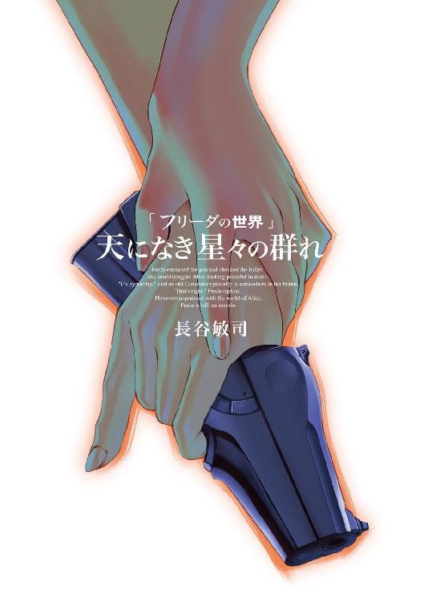
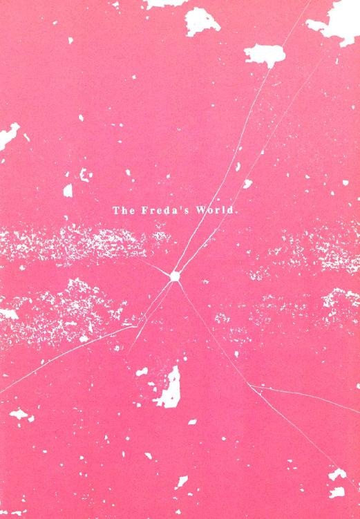
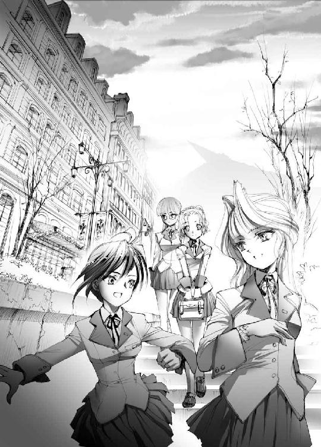
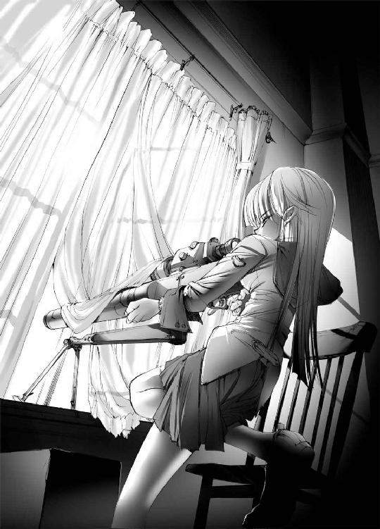
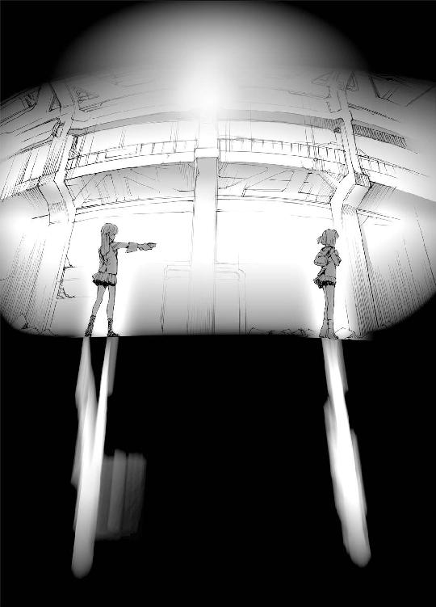
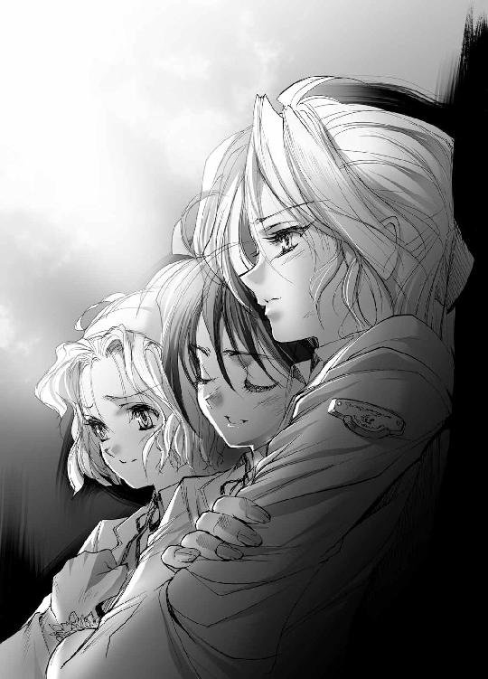
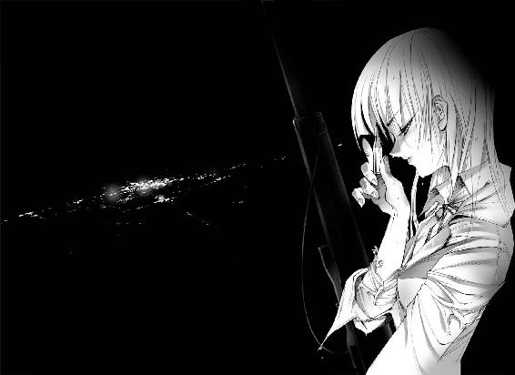

| 天になき星々の群れ フリーダの世界 | |
| 長谷敏司 | |
| KADOKAWA / 角川書店 (2014) | |


天になき星々の群れ
フリーダの世界
長谷敏司

角川スニーカー文庫
本作品の全部または一部を無断で複製、転載、配信、送信したり、ホームページ上に転載することを禁止します。また、本作品の内容を無断で改変、改ざん等を行うことも禁止します。
本作品購入時にご承諾いただいた規約により、有償・無償にかかわらず本作品を第三者に譲渡することはできません。
本作品を示すサムネイルなどのイメージ画像は、再ダウンロード時に予告なく変更される場合があります。
本作品は縦書きでレイアウトされています。
また、ご覧になるリーディングシステムにより、表示の差が認められることがあります。
Phase1
新市街
Ｆｒｅｄａ─１
工作員など、実体がないからっぽの影だ。フリーダは、手に触れられるこの世界すべてが今やニセモノにすりかわったのだと、疑うことがある。そんなことで罪がぬぐわれるわけでも、彼女の生きる場所から寒さが払われるわけでもないというのに。
「やっぱり、他にまわせばよかったわ」
フリーダはため息をついた。
地殻を荒々しく突き上げたその山は緑に乏しい。尾根から頂上まで、石造りの傾いた都市に覆われているからだ。廃墟で埋め尽くされた斜面を、金色に夕陽が照らす。あかね雲の真下で、百万の窓が光を反射させ、まるで星の巣だ。
山頂に座すは、自重で推進ノズルが地面に沈み込んだ、巨大な世代宇宙船。何世紀もかけて多くの入植者と片道旅行をする船が、なぜ着陸にこんな不安定な場所を選んだか、彼女は不審に思った。
マイルプレーン宇宙港の、入国ゲートへ続く通路の透過壁面の前には、来訪者にこの奇観を堪能させたいのか、自動歩道がない。だが、旅慣れた人間なら一目でわかる。植民惑星で見る不自然な景色は、たいてい入植初期に内戦があった証拠なのだ。
「すごいな。こんな景色、初めて見たよ」
フリーダの鋭敏な耳が、観光客らしい男性の声をとらえた。見ると、回廊には、一様に呆けた顔をした人々が、何メートルかおきにひとりずつ、立ち尽くしている。
「エグバードの旧市街ですよ。ここの人間は、《傾斜都市》と呼んでいますがね」
時代遅れなひげを伸ばした、通りすがりの紳士が、誇らしげに説明している。
だが、フリーダの冷静な目に映るそれは、ただの死んだ街だ。そして人殺しの専門家、暗殺者である彼女は、無価値なものを美しい名で飾ろうとするすべてが嫌いだった。
「......それにしても、最初から待ち合わせに二時間遅れなんて、最悪ね」
彼女は、現地組織のルーズさに呆れた。宙港の中央通路で、当座の活動に必要なものを、用意する人間が接触して来る予定だったのだ。
相転移航法の実用化に端を発した大播種時代が終息して、はや四百年。今、人類は多様性を獲得した植民星同士の交流で、また新たな発展を遂げつつある。惑星レジャイナは、最も近い星まで相転移航法で片道四十五日、レーザー通信なら最短十五年かかる、星間交通の僻地だ。情報の孤島であるこうした田舎では、工作員がその場の判断で行動せざるを得ない状況は珍しくない。とはいえ、現地で最低限の援護が受けられなければ、武器も情報協力もなしで任務の遂行は不可能だ。そもそも彼女は秘密保持のため、誰を殺せばいいかもまだ聞いていない。
今回使う偽の身元は、女学校の生徒だという。年相応ではあるが、任務で飛び回っていたフリーダには、どう振る舞えば自然かもわからない。
首の差し込み口に記憶媒体を挿入し、偽人格を記憶領域に追記するまで、工作員の身元偽装は完璧にならない。演技では必ずボロが出るから、機械の力を借りて偽の記憶を上書きし、まったくの別人になっておくのが、現在の潜入工作の常識だ。
荷物がいっぱいに入った大きな自走方鞄にもたれて、フリーダは時間つぶしに、行き過ぎる人をぼんやり数え始めた。
「二、三、四、......六」
この星の人々の、秋のよそおいとひなびた空気に、同化する鍵を探すように。
「五四、五五、五六......」
視界の中で、思い思いの方向へ歩くその位置関係を正確に把握する。無意識のうちに、視線で急所を照準し始めていた。
「一五七、一五八......一六０、一六１・一６２・一６３・１６４」
簡単だ。もし、銃と十分な弾薬があれば、全員殺せる。もう百五十人以上、死んだ。
「......２０６／７／８／９／１０...抹消」
手に、ねとりとした温かい血の感触がよみがえる。
「361/2/3/4/5/6/7/8/9/370、抹消」
人間がただの標的に見える自分に気づき、居心地が悪くなった。
ケースから大切に眼鏡を取り出し、そっと、かける。工作員ではない生身の自分を取り戻して、少し落ちつく。視力を矯正しないただの透明体だから、見える景色は変わらないのに。
「......五三二、五三三......」
それでもレンズ一枚はさんだから、人間はもう破壊対象ではなくなった。フリーダの世界はまだ不毛な、明るいだけの、闇のままだ。何の足しにもならない、すべてが無意味に消費されるだけの時間が過ぎてゆく。彼女は追われるように、ひとり、数を数え続ける。
「一一九一...と」
──奇妙に目を惹く女の子がいた。
見ているだけでいじってくしゃくしゃにしたくなる、やわらかな蜂蜜色の巻き毛。賢そうなおでこを強調する位置で留まったカチューシャ。薄紅色に上気した頰は、赤ん坊のときから、春の日差ししか浴びずに育ったかのようだ。
この足音の豪雨と同数の人間がいるはずなのに、いつの間にか、少女の姿だけを目が追ってしまう。
「きゃっ」
よほど注意力散漫なのか、一一九一番が、またぶつかった。立ち上がって、スカートの膝とお尻を手でたたく。
花園に迷い込んだかのように、人の流れに浮かれている。少女が、フリーダを見つける。
中央通路を血色に浸していた、冷ややかな夕暮れが、表情を変えた。
一一九一番がこちらへ近づいてくる。光に融けるようなこのやわらかい笑みに、詩人なら永遠を見たかもしれない。フリーダの胸が、高鳴る。空気が息苦しいほど濃くなり、音も消え、ふたりきりになったかのようだ。
「フリーダさん......ですよね？」
しなやかな生身の右手が差し出された。ようやく、彼女は不機嫌な正気に返る。
「フリーダ・ゲーベルよ。ベックの具合はどう？」
今度は少女が、きょとんとする。
「気にしないで」
フリーダは心の底から、現地組織の不手際を呪った。《ベック》は「次の指示を待つ」を意味する、組織の符丁だ。この反応は、何も知らない《偽の身元》の関係者である可能性が高い。
フリーダが左手を出すと、相手は屈託なく利き手を引っ込め、左手での握手に応じた。
「わたし、今日からルームメイトになる、アリス・マクブライドです。今日からよろしくお願いしますね」
温かい両手で包み込んで、アリスが彼女を見上げる。
「ところで私の顔、知ってたの？」
「はい。じゃなきゃ、こんな人の多いところでわかるわけないですよ」
「............そう」
何か気の利いたことを言うはずが、こんな情けない返事しか出てこなかった。
工作員のフリーダに同居人の顔を知らせず、一般人であるアリスには伝えていた。現地組織の優先順位の付け方は気に入らないが、このまま接触の機会を待つことにした。頭の痛くなる状況でも、任務を放棄はできない。
目の前の少女が、組織の連絡員を殺すなり拉致するなりして、何食わぬ顔で現れた可能性を考慮してみる。疑うだけ無駄だ。そこまで手が回っているなら、もう彼女は負けている。
「あなたがフリーダさんで、よかったです」
アリスが、微笑む。彼女まで温かくなるようだ。
出会いを歓迎する理由などない。けれど、いつもしているように彼女は噓をついた。
「私も、あなたみたいな人でよかったわ」
疲れているのか、透過壁面から差し込む太陽が目に痛くて、妙にいらいらした。
Ａｌｉｃｅ─２
アリス・マクブライドの世界は、光に満ちている。
窓を開けると、青空の下で《傾斜都市》が朝陽を照り返している。その頂上の世代宇宙船の影がふもとの新市街まで伸びるから、街は大きな日時計みたいだ。エグバードの西はずれ、朝十時頃に宇宙船の影が落ちかかる坂道の、小さな二階建ての家。ここがアリスの育った場所だ。
「おはようございます」
出窓に飾った立体データに、彼女はあいさつする。マクブライド家の主である両親は、一年前、事故で逝った。
車の入ってこない通りを、三毛猫が悠々と横切ってゆく。夜の間、部屋に入れておいた鉢植えを陽の当たる場所へ出し、水をやる。豊かに葉が茂るようになったのは、アリスが育てはじめてからだ。彼女の母は、何度プレゼントしても植物を枯らしてしまう人だった。
冷凍の、野菜の炒め物をフライパンにあけて、電熱調理器にのせる。調理済みの食品から、香ばしい匂いがたちはじめる。棚にたくさんあるお皿も、ひとりでいたときは決まった何枚かしか使わなかったから、食事をふたりぶん用意するだけで、うれしくなる。
「フリーダさーん。ごはんできますよ。あんまりのんびりしてると、遅刻ですよー」
声をかけるだけで、胸が弾む。宙港へ行く前、一緒にやっていけるか不安だった気持ちは、初めてフリーダを見たとき吹き飛んだ。名匠が感性より理性を頼りに、造形の限界に挑戦したかのような、精緻な人型の影。その手に触ってみたくて、いきなり握手なんか求めてしまった。
なかなか降りてこないから二階まで呼びに行く。眼鏡を鼻にひっかけ、ほとんど銀色に見える長いプラチナブロンドをヘアピンで留めたフリーダが、鏡の前で自分の姿をにらんでいた。体型の冷たい均整におさまりきれない、生命力をまぶしく感じる。下宿人が古風な制服のスカートをつまむと、かすかに艶のある細すぎない足が、太股のなかばまで肌をさらした。
「何かおかしいですか？」
「......ここの気温に対して、このスカート丈では、機能を十全に果たさないわ」
「冷え性なんですか？ 保温ガードルとか、毛糸のぱ、......ふぁっ、ふぁっ！」
意外なくらいごつくて力のある手でほっぺを思い切りつねられ、アリスは三秒で泣きを入れた。
「............いたいれふ」
低血圧なのか、フリーダは朝、機嫌が悪い。
午前八時。紅茶を煎れてくれている間に、アリスはふたりぶんのパンにバターを塗る。レジャイナは自給自足の農業惑星だから、食べ物はおいしい。
「今日は、思い切ってりんごをむいてみたんですよ」
テーブル中央の、スライスしたりんごを盛った皿が、ちょっと得意げだ。
「これも、ひょっとして初めて？」
「刃物を使った料理って、危ないじゃないですか」
できあいで全部まかなえるから、アリスも母親が作ったものを食べた覚えがない。ナイフだって、家になかったからカタログで取り寄せたくらいだ。
「こういうのは、あんまり料理とは言わないと思うけど」
フリーダがつまんで、口に入れる。シャクシャクと、りんごをかむ音が響く。
アリスも、対面するイスに腰をおろす。
「ウサギさんって、どう作るか知ってますか？」
「......それも料理って言わない」
「それにしても、たった一週間で、ずいぶんなついたよな」
その日、騒がしい昼休みの教室で、アリスの話を聞きながら、一年からの友だちのナオミが言った。女性的なショートにしたやわらかい栗色の髪。元気のよい黒めの肌をなぞらせる体は、これでけっこう立派だから、ときどき胸を何センチかわけてもらいたくなる。猫みたいな吊りあがり気味の大きな目をした級友は、よく言えば快活、悪く言えば落ちつきのない人だから、からかわれるアリスは毎日がたいへんだ。
「なつくって、......犬じゃないんですから」
「いーや。これはしっぽとか生えてる反応だ。おねーさんに見せてみ。ほれほれ！」
スカートをめくられそうになって、アリスは必死で抵抗する。
「イヤね。女子校って......」
名門ラヴァル家の長女、レイチェルはいつも冷静だ。学校の制服が礼服でもあることを、白梅の花のように気品と風格をそなえた、この令嬢の姿を見れば素直に納得できる。肌も亜麻色の長い髪も色素が薄い女学生には、性格の潔癖さでも白がよく似合った。
「あ、そだ。第三外輪区の店舗データもらったんだ。ちょっと見といて」
レイチェルは指でつまんで、友だちから受け取ったタップを注意深く確認する。
「また、下品なものが混じってないでしょうね？」
「高二にもなって、エロデータくらいで怒るもんなぁ」
ナオミの持ってきたタップを挿入した途端、真っ青になってレイチェルが校舎から消えた、あの夏の日からまだ四ヶ月にしかならない。予約なしで記憶屋に押し掛けて情報を消去しただけに留まらず、歓楽街から五件ほど店が消えた。
「当たり前です。チップから削除しても、脳が覚えたら、もう消えないのよ」
「いいじゃん。いっつも、勉強のときはラクしてるんだし」
脳に埋め込んだ記憶領域へ《知識や経験》を直接書き込むチップシステムに、星間文明圏は支えられている。大きくなりすぎた社会には、ものすごい数の専門技術者が必要だ。手術で埋め込んだチップへ情報を書き込めば、分厚い説明書を誰でも一瞬で身に付けられるから、技術者は増えた。
けれど、知識が手軽になりすぎて、学校はさびれた。名門と言われるこのウィスラー高等女学院ですら、研究課程以外はほとんど花嫁学校だ。アリスくらいの年までの子どもの人脈作りと、洗脳危惧知識で知識チップに公式な品質保証がない歴史や哲学の勉強以外、学校ですることはほとんどない。
「いいことを思い付きましたわ。街に慣れるため、あの方に見ていただいたら？」
「フリーダさんなら、新市街とこの星のデータをたくさん買ってましたよ」
そのときふわりと、背中に気配が現れた。
「いたんだ？ 転校生」
ナオミがつぶやく。
振り返ると、眼鏡のレンズの向こうで、涼やかな青い目がアリスを見ていた。
うれしさを抑えきれない彼女へ、あきれた声が投げられる。
「ありすー、しっぽー。しっぽ隠せー」
「振ってません！」
フリーダは本当にどんな問題でも解決してしまう、欠点らしいものがない人だ。レジャイナでは珍しいから、最初は本人より古風な眼鏡が目だっていた。今ではフリーダの真似をしようと、骨董店を探し回っている級友までいるくらいだ。
「ウィスラーには、もう慣れましたの？」
「......静かで、歴史のある学校ね。壁に死体の一体くらい塗り込められてそうだわ」
フリーダの、薄紅色の唇が、かすかに笑う。
「七不思議とか、お好きなほうかしら」
変なことにくわしいレイチェルが、怪談を披露する好機とばかりに目を細める。
「やめてくださいよぉ。七つどころか、二十個も三十個もあるじゃないですか」
「新・七不思議、続・七不思議......と受け継がれて、今は第十二期目ですもの。二百年以上も歴史がありますから、ウィスラーは何十年かサイクルで、七不思議がくるくる変遷してますの」
「自殺者は、何人くらい？」
フリーダが、また物騒なことを聞く。
「幽霊になったのが十四人。行方不明が、八人ですわ。そうそう、第九期の七不思議で、亡霊教室というのが......」
物腰や口調の優雅さのおかげか、どんなに内容が眉唾物でも、レイチェルの言葉には説得力がある。こういう話の苦手なナオミが、席を立とうとした。
「あら。ナオミさん、また逃げますの？」
「またって言うな！」
窓から差す陽光にあたためられた空気に包まれ、アリスはしあわせだと思った。今が晩秋で、もう寒い季節に入っているなんて、信じられないくらいに。
Ｆｒｅｄａ─３
十一月の瘦せた光が、弱々しく注ぐ。放課後の教室で、フリーダは異邦人だ。
「今日は夕方から雪になるみたいですから、早めにお買い物をしちゃいませんか？」
アリスのまわりでだけは、あいかわらず、空気が春の色を帯びる。
固いイスから立ち上がり、フリーダはカバンの中を確かめる。アリスの近くにいることが、たまらなく気恥ずかしいことがあるのだ。

「だったら今から少し、歴史の課題用の資料を取ってくるわ」
「うわ。あんたたち、一緒に勉強とかもするんだ」
教室の隅から声が投げられた。ナオミ・ホプキンズが、上品とは言い難い角度で片方だけ唇を吊り上げている。からかわれているようだから、フリーダは訓練して身につけた、不自然でない笑顔を作った。
「............そうよ」
「あら。アリスにも、フリーダさんが転校してきたとき、同時に留学の話が来てますのよ」
レイチェル・ラヴァルは、年齢の割に落ちついている。ラヴァル家は、植民初期の投資で荒稼ぎして身代を作り、今でもこの星の財界に強い力を持っている。この灰色の街の空気を強く染みつかせた少女は、他の星で生きられまい。
「ふーん。アリスって、けっこう何でもマジメにやるもんな」
「そんな。わたし、よその星へ行ってまで勉強することなんか、思いつきませんよ」
そう言ってアリスが、はにかむ。同居人の両親は昨年、事故死した。レイチェルの親も同じだ。フリーダが資料を参照した限りでは、どちらも暗殺の疑いがある。
「無理をして外に出る必要もないわ。......ここは、平和だもの」
彼女は思う。少女たちは、このエグバードという街が病んでいることを知らないのだろう。同じ教室で、同じ空気を吸いながら、彼女たちは違う世界を生きている。
ここは、フリーダの場所ではないのだ。
Ａｌｉｃｅ─４
学校のあるエグバードは、惑星レジャイナ最初の植民都市だ。旧市街とか《傾斜都市》とか呼ばれる当時の街に、もう人は住んでいない。地球時間で二百五十年前、地殻操作の古い道具が暴走して、地盤が三十度も傾いたせいである。
今は、レジャイナの政治・経済・情報の中心は、そのふもとに作られた新市街だ。風化した活性石材のにおいがする、石と影の街。急速にさびれつつあるという人もいるけれど、アリスにとってはたいせつな故郷だ。
学校が終わると、最近よく彼女とフリーダ、ナオミ、レイチェルの四人で下校する。
入った店がすぐつぶれるオフィス街を横切り、ビル風が強く耳が痛くなるくらい寒い通りを歩く。石壁と高い建物にはさまれた下り坂は幅が三メートルもないから、日当たりが悪くて、路地の石畳には草も生えない。
エグバードは影絵の街でもある。見える景色の半分はいつも暗いが、太陽の高さ強さで色と鋭さを転じる陰影は、日ごと新たに生まれ変わるかのようだ。
「情緒なんかいらないから、ここ、なんとかして欲しいよ。道は細いし、坂は急だしさ」
ナオミは陰気だと言って、故郷の悪口ばかりこぼす。その曲線なめらかなショートに揃えて校則違反の浮遊式散光素子を舞わせた髪も、外国の総合美容院の支店で整えたらしい。
「あまり体をなまらせていると、いざというとき苦労しますわよ。ほら、自動歩道の乗り口が、すぐそこですわ」
小路から陽光ふりそそぐ聖堂前の広場に出ると、空間が一気に開けるようだ。新市街の秋は、いろいろなものが赤みを帯びる。ポプラ並木は美しく色づき、花壇に日の光も温かい。自動歩道に乗ると、繁華街のいくつかの壁はもう煉瓦柄を投影していた。
自動歩道の防塵機能で飛ばされた褐色の落ち葉が、屑寄せにたまる。小さな子どもたちが、枯葉の山をすくって投げ、歓声をあげて飛び込み、踏みつぶす。
フリーダがじっと、その光景を見ている。軽やかに指が、北風で巻き上げられた葉を空中で捕まえ、葉柄を持ってくるくる回した。
外国から来た少女の頰は、寒さで少し赤みを帯びている。街の風景に馴染んでいるようで、うれしい。
「なぁに、あんたまでしあわせそうにしてんだよ」
「秋っていいなって、思いませんか？」
ナオミの声に、アリスが答える。
夏も冬も同じこと言ってるだろなんてあきれられつつ、エグバードで唯一、広くてまっすぐで平らという条件を兼ね備えた中央大通りを、都市南端へ向かって流される。
雲を貫くニューブランズウィック聖堂の尖塔が、三百メートル以上離れたここまで鋭角の影を落とす。
「ここは夏になると、壁の蔦草がかわいい花を咲かせるんです。しかも、お母さんに教わったんですけど、食べられるんです！」
「うちのお客さんに聞いたよ。殺虫剤がかかってて、あんたたち、母娘二代で病院送りになったんだよな。腹イタで」
ナオミがあきれた目で、アリスを見る。彼女の隣にあった気配が、なくなっていた。
「あのー？ フリーダさん？ なんで離れて歩くんですか？ レイチェルさんも！」
夕方だから、大通り中央の路面駆動帯を走る、乗客の乗った小さな個室の流量が増えている。都市の動脈、トランスポート・セルの窓のひとつひとつに、暮らしが見える。疲れた顔、しあわせそうな恋人たち、彼女たちのような学校帰りの友だち。
ブーッ、と短いサイレンが鳴り、空中に警報の文字が浮かんだ。晩秋は、地盤の隆起で標高二千五百メートルの山となった旧市街から、まっすぐなこの道を、猛烈な吹き下ろしが駆け抜けるのだ。
ヒュウルィ、と、廃棄された都市を吹き抜け、乾燥した冷たい風が襲う。空高く、舞い上がった落ち葉がまた降り落ちる。
彼女たちは、髪と服にかかったホコリと枯葉を、丁寧に払い合った。寒いから、温かいものが飲みたくなる。
「うちの店に寄って行ってよ。すっごいカロリー高いの、おごるからさ」
ナオミの家はパン屋で、直線だけで構成された白い巨大なアコーディオンにも見える百四十階建ての集積建造物の、半分も店が廃業した二階商店街にある。街がもっと物騒だった頃、建物の外に出ず何ヶ月も生きてゆける、こんな集合住居がいくつも造られた。分離派様式の巨大建築の林は、今やエグバード新市街の名物だ。
「ただいまぁ。みんな、そのへんの席に、適当に座っといて」
空調のきいた、甘いパンのにおいがする店内に入る。気温差のせいで、温かい空気が顔にかぶさってくるようだ。
「歴史のある店ね」
「植民がはじまって、レジャイナで最初の小麦が収穫されたときから続いているんですよ」
「ウソウソ、そんなの」
緑に塗った鉄のイスと古いテーブル、誰も弾かない骨董品のピアノを見ると、アリスはほっとする。レジャイナは煙草が合法だから、どのテーブルにも灰皿が置いてあった。
ここの常連のマーガレットおばあさんが、入り口のアリスたちへ目をやると、しゃがれ声で店の跡取り娘をしかった。
「まったく、客を見たら、まずあいさつじゃないかい。その見苦しい星飾りも店の中ではおしまい」
作り笑いで、ナオミがいらっしゃいませと声をかけた。集積建造物の昇降機近くにあるから、この店のイスはいつも、パンと紅茶一杯でねばる住居階のお客さんに占領されているのだ。
レイチェルが、優雅に腰をおろす。アリスは席に着く前に、会釈した。
「こんにちは、マーガレットさん。髪型を変えたんですね。よく似合ってますよ」
「客がお世辞なんか言わなくったっていいんだよ。エルザもいいかげん損のし通しだったけど、アリスちゃんまで似るんじゃないよ......」
老嬢は、声をかけると必ず小言が返ってくる人だ。
感圧シートに書かれたメニューを指でなぞって、彼女たちは思い思いに注文を出す。切ったり焼いたりする音といいにおいを味わっていると、ナオミの父親のエリックが、カウンターの奥から紅茶とサンドイッチを持ってやってきた。
「パパ。万能調味料とって」
熊みたいな体を縮めて、店を守ってきたパン職人がおおげさにため息をつく。
「跡取りの舌がこれじゃ、伝統の味も俺の代で終わりか」
「あたしは卒業したらこの星出て行くって、前から言ってるよね。だいたい、パパの賭けの負けで、うちは潰れるよ」
ナオミの容赦ない追及に、エリックは唾を飛ばして反論する。
「負けたんじゃねぇ！ あいつら卑怯なんだ」
ゲームの話になると、ナオミの父はまるで子どもだ。
「もうやめたら？ 向いてないんだから。ママも、ちっさいときから三十年負けっ放しだって言ってたよ」
「三巡は俺ンとこに攻め込まないって、ロバートの野郎、ウソついたんだぞ！」
いつも通りの親子の語らいを横目に、級友はのんびりサンドイッチを食べる。
「そんなに弱いの？」
フリーダが尋ねる。
「アリスといい勝負ですわ」
「この前、勝負しましたけど、おじさんには勝ちましたよ」
ため息とともに、意外にがっしりした指が、カップを置く。
「............そう、そこまで」
うんざり顔のマーガレットが、節くれ立った指でこめかみを押さえた。
「あぁあ、やだやだ。若い娘がこんなところにくすぶって。ケネディ橋でも行って、もっとマシな男に引っかけられておいで」
「ケネディって《東》じゃん。あそこ、今じゃ野良犬も通らないよ」
「二十年前は、現役だったがね！ そうだね、エリック!!」
老嬢が声を張り上げる。
「なんだったかね。《本当の自分の気持ちがわかる》とかいうオモチャを買ったんだったかね？」
「やめてくれ！」
脂ぎった頰を朱に染めて、エリックおじさんは逃げてしまった。
「あれなら、まだあるんじゃないかしら？」
奥から、間延びしたやさしい声が聞こえる。しばらくして、ナオミと同じ栗色の髪と薄茶色の目の、ふっくらした女性が小さな指輪を持って店に出てきた。
「ほら、あった。あげるわ、ナオミ」
「イヤだよ、こんなの。恥ずかしい」
母親が手渡そうとしたその指輪を、ナオミが押し返す。それは、硝子玉で飾られた銀色の指輪だった。
「あなたがはめるんじゃないのよ」
不思議そうな少女たちへ、かつての少女が教える。
「わたしたちのとき、はやったの。これは好きな人にはめてもらうのよ、......ね」
奥へちらりと目配せして、くすくすと、おばさんが微笑んだ。
Ｆｒｅｄａ─５
ここは、すべてが間違っている街だ。
廃墟からながめる夜空の底は、明るいが汚い。フリーダは傾斜都市の見捨てられた墓地で、人を待つ間、新市街を見ていた。
彼女はこの街の歴史を、学校で調べた。かつてエグバードの住人は、二つの派閥にわかれ、激しい抗争を繰り広げていた。始まったのは、四百年に及んだ世代宇宙船の旅の間だ。植民開始から破棄までの三百五十年間、この今は人のいない旧市街は、血なまぐさい事件の舞台となり続けた。
そして、宇宙船に積まれていた惑星改造工具の、公称では《誤作動》により地盤が隆起。その結果が、今、フリーダがいるこの《傾斜都市》だ。
足下のひび割れた墓石も、三十度傾いている。ビルも斜めに建ち、いつ倒れてもおかしくない。八百メートル標高が高いだけで、この場所は新市街よりずっと暗く、寒かった。
「......どこを見ても、悪趣味だわ」
苦々しくつぶやいた言葉が、白い湯気になる。レジャイナに来た日、宙港で聞いた得意げな台詞を思い出した。この廃墟の砂にまみれたガラス窓が、あの夕暮れに見た、きらめく星の巣の正体だ。
八万人の犠牲者を出し、険しい山となった故郷を人々は捨てきれず、ふもとに新市街を作った。けれど、街並みの不快さはここと同じだ。道路は戦闘車両が走りにくいよう細く曲がりくねり、建造物は重要施設への狙撃をさえぎる位置で背が高い。今は、旧市街をはさんだ《西》と《東》が争いの火種だそうだ。
「イヴァンを見たか？」
不意に、耳元で声が聞こえた。仕掛けられたスピーカーからの、彼女に焦点を結んだ振動伝達だ。
「サナカンは、失望しているわ......」
ささやくように、彼女は答えた。サナカンは《訪問者》を表す、組織の符丁だ。今や寂しい斜面の街は、犯罪者たちの巣窟なのだ。
「七日も放置してくれた理由を、是非とも聞かせていただきたいものね」
暗殺の任務で来て、ここまでぞんざいな扱いを受けるのははじめてだった。なめられているのなら、相手の認識を矯正する必要がある。この現地支部も、彼女が探して、ようやく見つけたのだ。
湿った空気を伝って、金属をこすり合わせる不快な足音が聞こえた。墓石の上で小さな石が体重で踏みつぶされ、砕けた。近づいてくるのは重量型の全身義体者だ。
夜の闇にひとつ、赤い光が灯る。赤外線視覚で、誰かが彼女の体を上から下までなめまわすように見ていた。
「カリカリするなよ。いい休暇になっただろう？」
安っぽい服を着崩し、大きく両手を広げながらひとりで、赤い目の男が現れた。どうしてこの星は、ここまで嫌悪感をかき立てるのだろうと、感心する。
「まあ、これだけの代物なら、こっちから回収に行ってやってもよかったぜ」
塗装の剝げかけた腕で、フリーダの肩を抱こうとする──その脇下の隙間をすり抜け一呼吸で背後をとり、そのまま捕まえていた男の左手首をひねり上げ、彼女は義体者の百五十キログラムの重量をつんのめらせた。
ＬＣＩの全身義体は、身体均衡が崩れると、無理な体勢でも下半身から立て直そうとする。フリーダはその挙動を待ち、姿勢制御のため無防備に晒された膝裏を、追撃のかかとで踏み割った。
「何しやがる、このアマ！」
顔から道路に這いつくばり、男はドスのきいた声を発した。モーターが、恨めしげに空回りする。
「あなたを処刑するの。理由は、現地構成員の中級構成員に対する規律違反。いいわね？」
手近な墓標に汚い顔をたたきつけた。構成員が、目を見開く。樹脂製の表情を変更するのも忘れ、下品な笑みを貼りつけたままで。
「私も、こんなモノを自作するハメになるとは思わなかったわ」
短い鉄パイプを二本束ねた形状の、太い釘を射出する撃ちきりの銃を、男の額に突きつける。電気発火具とリモコンで撃発する、ブービートラップ並みの原始的な凶器だ。
威勢のよかった男は、極度の緊張で機械の体の制御を失い、ぐったりしていた。
「怖い？ この距離なら、紙みたいに頭蓋装甲を貫通できるわ。......ねえ、怖い？」
人工頭髪をわしづかみにし、樹脂製の皮膚を、ガツガツと銃口でえぐるように何度も突く。暴発するかもしれないが、知ったことではなかった。彼らの怠慢のせいで、彼女は土地勘もない場所を、武器すらなしで活動することになったのだ。
「ひぃっ、あ......た、助けてくれ!! 助けてくれ！」
瞬間、薄暗い木陰や街路に数十個の光が点った。おそらく、同じ数だけの光学照準が今、彼女を狙っているのだ。
「はじめまして。犯罪者仲間らしい歓迎で、うれしいわ」
殺気の十字砲火を浴びながら、フリーダは満足の吐息を漏らした。暗闇は濃密で、静かで、笑い声など聞こえないここが彼女の場所だと落ちつけた。
〈趣味の悪い脅しだ。部下たちが、極めて強いストレスを感じている〉
青白い男の立体映像が、現地機関の本部の一室に浮かび上がる。《ジョンソン》は組織の上級構成員で、機械以下の冷血漢だ。フリーダに入る仕事の、調整と下準備は彼が担当している。
「私は、相手によって付き合い方を変えるだけよ」
テーブルにはもう、標的の情報が入ったチップ用データと、注文通りの武器が用意してあった。彼女はケースに入った拳銃を手に取り、バランスなどを確かめ、手首ホルスターにはめる。
〈ＤＦＥは、かき集めたが五十発が限度だった。ここは、田舎だ〉
「身に染みてわかってるわ」
ホルスターの解放機構を作動させ、袖口から飛び出してきた銃を握り、安全装置を外して照準する。姿勢を変えても妨げなく一挙動で射撃準備が整うことを、丹念に確認する。
〈誘導電動ライフルは、ルサージュが来ているせいで、搬入に手間取った〉
慈善家として名高いエルンスト・ルサージュは、星間経済の覇権を握るルサージュ家の人間だ。
「ひどい警戒ね。今夜も、トランスポーターが流入閉塞を起こしてたわ」
ここは、ルサージュにゆかりの深い土地でもある。創業者ヒューバートが、この街で生まれたからだ。彼の成功以後、人々は夢を求めて星を捨てるようになり、今やレジャイナは過疎への道をたどっている。
「連中も、逆恨みされてるって自覚はあるのね」
彼女は狙撃銃を確認すると丁寧に置き、《ジョンソン》を破壊すべき標的として、にらみつけた。
「ところで、偽人格のタップがないようだけど」
チップシステムは、脳の複数領域へ接続した記憶領域を連動させ、《経験を受け渡す》機能を持っている。《偽人格》は、この技術の応用で使用者に《他人の人格》をかぶせる、潜入工作の必需品だ。
〈それは用意できない〉
「《ジョンソン》。私の入国パスポートも本名でとってくれたようだけど、嫌がらせをしたいくらいエリオとモメてるの？」
立体画像は答えない。それが、彼に利益を呼ばないからだ。
「──もう一度ミスを重ねたら、あなたの本体と初対面することになるわね」
会話が成立するなら、《ジョンソン》本人もこの星にいる。見つければ、撃てる。だが、フリーダの恫喝に、彼は小揺るぎもせず言い切った。
〈残念ながら、それは不可能だ。──それより依頼側の注文に、ウィスラー高等女学院での《和解記念日》式典時と、殺害場所と日時の指定が入っている。君はもっと《有意義》な学生生活を送るべきだと、私は考える〉
細長いケースを開けると、誘導電動ライフルが、指に吸い付くような黒いプラスチックの地肌をさらして、横たわっていた。
そして《ジョンソン》は、いつも通りの台詞で、短い会談を締め切った。
〈さあ。仕事をしたまえ、フリーダ〉
Ａｌｉｃｅ─６
ウィスラー高等女学院は新市街で最初に作られた学校だから、歴史的位置づけから、街の行事のたびに式典をもよおす。レジャイナ内外からの来賓をもてなすのは、アリスたち学生だ。
半月後に《和解記念日》をひかえた今朝の、一限の授業は各種歓迎委員の打ち合わせだった。年に五件も六件もあるから、委員の活動に緊張感なんてないのだけれど。
アリスは、なぜかクッションを置かせてくれない固いイスに座る。四つ折り設定の電子書籍を机に置き、学校のシステムと自動接続を許可。手元の画面に、さっそく、誰かからメモが回ってきた。
〈毎年だけど、これ、どうよ？〉
能動画面に、煉瓦柄に彩られたウィスラー本校舎のラクガキが表示される。
和解記念日は、旧市街崩壊の原因である内紛をおさめた英雄イヴァン・ジュジャが、亡くなった日だ。二二九年前から、この日に毎年、慰霊祭が行われている。《煉瓦屋敷》と呼ばれた当時の行政府が文字通り煉瓦づくりだったことから、この時期になると、街の壁という壁に煉瓦柄が投影されるのだ。
名家出身のレイチェルが懐かしい目をして言うところによると、イヴァン・ジュジャは美的センスが最低だったらしい。生徒の大半も同意見だ。
「みなさん！ ウィスラーの名に恥じないよう、しっかりお客様を迎えましょう」
三十一人の生徒に聞こえるように、教室担任でもある歴史教師のミズ・フーケが声を張り上げた。
窓からの日差しは優しく、空調も適温すぎ、教室はだらけ気味だ。ナオミはスタンドを引き出して画面を机に立て、その陰で寝ている。
このクラスも他と同じように、二人の賓客を担当する。レイチェルと、友だちだから巻きぞえになったアリスが歓迎委員だ。お客のひとりがレイチェルの兄、サイモン・ラヴァルであることは身内情報で伝わっていた。
「先生！ うちの、もうひとりのお客さんは、誰になったんですか？」
退屈した生徒が、質問する。
「なんと、エルンスト・ルサージュ氏です」
心持ち頰を紅潮させて、ミズ・フーケが答えた。
お嬢様学校の教室がどよめいた。一番近い星まで片道四十五日もかかるレジャイナに、有名人が来るのは、とても珍しいことなのだ。
誰かがネットワークから引っぱってきた画像データが、アリスの画面にも複写されてくる。前の席でごそごそやっているから、何ごとかと覗いてみたら、級友が自分の携帯端末へ、画像を保存していた。
「エルンスト・ルサージュって、俳優みたいだよね」
本当に、ムービーに出ていてもおかしくない二枚目だった。当日、校舎は外部の人にも開放されているから、ものすごい賑わいになりそうだ。
「軽薄な顔ですわ」
レイチェルが、よく通る声でこきおろす。
「街のエライ人ってみなさん、ルサージュに厳しいんですよ......」
アリスはこっそり、隣の席のフリーダに耳打ちした。
「エグバードから逃げ出した男の曾孫が、故郷に凱旋のつもりかしら」
二度目のレイチェルの声を引き金に、楽しいざわめきが、消えた。爆発直前の時限爆弾の隣に座っているかのような、油っこい沈黙に包まれる。
ラヴァル家は、植民開始当初からレジャイナを指導し続けてきた名門のひとつだ。裏を返せば、《傾斜都市》を作った大事故を引き起こし、この星を過疎化させつつある張本人だとも言える。少なくとも、そう陰口をたたかれている。
「慈善家だから、哀れなこの街を救ってくださるとでも言うつもり？」
振り返ると、令嬢はぐっとあごを引き、何かをこらえていた。まるで、敗け戦の将軍のように。
女教師も、この場をおさめる手だてもなく、顔を青くしていた。レイチェルの兄サイモンは、ここの理事でもあるのだ。
「歓迎委員は、人選を考え直した方がいいわ」
重苦しい空気を破り、誰かがきっぱりと言った。見ると、フリーダだった。
イスを引く音が、妙に大きく響いた。
「そうですか？ では、私は降りさせていただきます」
唇をきつく引き結び、しかし胸は張って、誇り高い少女は教室を去った。追いかけるタイミングを逃して、アリスは立ち上がりかけ、腰を落とす。
歴史をになってきた名門の人々は、過疎化が始まってからというもの、焦りと罪悪感に追い立てられている。彼女もレイチェルと友だちになって、初めて知ったのだけど。
〈一緒に、がんばろうよ〉
友だちを元気づけるため、そんな題名のメモを書きはじめる。
「それじゃ、かわりに私がやってもいい？」
澄んだ冷たい声が、途方に暮れていた教室を、絶妙のタイミングで揺らした。突然の退席で押し黙ってしまったみんなに、見せつけるようにフリーダが手を挙げている。「この人がやってくれるなら」という信頼を短い間で築いていたから、緊張の頂点に達していた空気がゆるむ。
「......私も、もっとみんなとうち解けたいから」
そう口に出したフリーダの瞳は、何も映していないかのように、空虚だった。アリスは反射的に、同居人から目をそらしてしまった。気温調整は完璧なはずなのに体の熱が抜けてゆくようで抑えきれず、彼女の全身は骨から震えた。
放課後、黒ずんだ夕暮れを、ひとり帰る。
ラ・ポエシー街の銀杏並木は、黄色く色づいた落葉のじゅうたんを広げていた。落ちた実が独特の臭気を発するから、この道を歩く人は少ない。顔を上げると、旧行政府前の広場まで、誰もいなかった。
今日、はじめてアリスは、フリーダに、一緒に帰ろうと誘わなかった。あのまま教室に戻らなかったレイチェルに、申し訳ない気がしたのだ。
「アリス・マクブライドさんですね？」
声の方向へ首をひねる。冷たい血色の太陽を照り返し、ブリキの兵隊が立っていた。
「ひゃっ！」
悲鳴をあげてしまって、気づく。全身義体者だ。もうすぐ冬だというのに服を身につけず、装甲義体の金属の地肌が丸見えだった。
「私は、マコト・シラカワといいます」
あやまろうとしたアリスに、穏やかな声で話しかける。人体の輪郭の美しさを抽象的に表現したような、中性的な均整。身長が二メートル以上もあるから、見上げるだけで気圧されてしまう。
「あっ！ ごめんなさい、じろじろ見ちゃって」
「おかまいなく。古い枠組みから心を《解放》してくれたこの機械の体は、私の誇りですから」
その人は星間警察のＩＤカードを見せ、彼女に質問をしたいと言った。
「フリーダ・ゲーベルという女性が、あなたの家に下宿していますね」
街並みが見えなくなるほど視界を空に向け、やっと目玉らしい一本線が見れた。「はい」とうなずくのも、大きく首を上下に振るので一苦労だ。
旧市街から、また木枯らしがアリスをおそう。凍えた頰が痛くて、泣きたくなる。
「どういう経緯で、彼女を迎えることになったのですか？」
よほど生身の雰囲気を出したくないのか、声も電子音まるだしだった。
アリスは戸惑い、どうしてこんなことを聞かれるのかと、身構える。
「なにかあったんですか？」
「数日前に、発砲事件があったのです。そのため、ここしばらくで入国した外国人の、同居者全員に聞いているのですよ」
「あの......、市役所の異文化交流セミナーからの紹介で。お父さんとお母さんが事故に遭って、それで。......一年近くひとり暮らしだったから、近所の人にすすめられて。
ナイアーフェンから、確か《移民史の共通性》の勉強のために来てるんだって言ってました。旧市街って、世代宇宙船の近くから波紋が広がるみたいに拡大したんですけど、典型的な植民開始時にみんながモメてた場合の、都市の広がり方なんだそうです。
......あ、部屋の家賃は前渡しで二年分、ちゃんといただいてますよ」
アリスは、自分が聞かれてもないことまでペラペラとしゃべりすぎたことに気づいて、恥ずかしくなった。
「でも、こんなこと、わたしに聞いてどうするんですか」
彼女はたぶん、不安だったのだ。今、ＩＤカードを見るまで、星間警察なんて物語の中のものだと思っていた。なめらかに回っていた日常の、歯車が凍って軋みはじめているような、嫌な気分だった。
「ミス・アリス。エリオという星をご存じですか？」
いきなりそんな名前が出たことが、不思議だった。
アリスは首のこわばりを感じながら、うなずく。たまにニュースが流れるのだ。その星では政府とゲリラ勢力が五十年も内戦をしていて、生身の人間が機械兵と戦っているのだという。──星間社会の授業では触りもしなかった、彼女たちとは遠く離れた場所。
「そのエリオから今、凶悪な犯罪者が、エグバードに潜入しているおそれがあります。その人間は、あなたくらいの年齢である可能性があります」
「フリーダさんは、悪い人じゃありません！」
大きな声を出してしまったのは、あの涼やかな少女を信じていたからだ。一ヶ月以上もふたりで暮らした時間は軽くない。昼間フリーダを疑ったことまで、情けなくなってきた。
「あなたが見た彼女は、どんな方ですか？」
機械音声で質問を受け、アリスの脳裏に浮かんだのは夕暮れの宙港で出会った、あの逆光に映える立ち姿だった。その隣に誰もいらない、ひとりが一番完全な、美しい影。
「素敵な人です」
彼女には、自信を持って言い切れた。
「ひとりで生きていける、何でもできる強い人です」
だからあこがれ、矛盾だけれど、友だちになりたいと惹きつけられたのだ。
「協力ありがとうございます。友だちにそこまで言ってもらえるとは、素晴らしい方のようですね」
録音済みメッセージを流したような返事が返ってきて、ようやくアリスも察した。鋼鉄の人は、彼女の反応を引き出したかったのだ。
「あ、あの。ごめんなさい。......わたし、勝手に怒って」
「気にする必要はありませんよ。感情というのは、些細なことで爆発するものです」
そう言って、マコトが右手を出す。おっかなびっくり触れた金属の手は、温かかった。彼女が冷たい思いをしないよう、わざわざ装甲の温度を上げてくれたのだ。
「私も、一度、お会いしてみたいものです」
そして鉄の背中は、冷風など感じてもいないかのように震えもせず、歩み去った。
彼女の手のひらに、まだぬくもりが残っている。昔、「手のあったかい人は心もあったかい」なんて、母が教えてくれたのを思い出す。
思い出深い街だから、折に触れて、まだ家族が生きていた頃がよみがえる。そして、忘れてしまうことも嫌で、星を見上げ、寂しくなるのはわかっているのにしばらく立ち尽くす。
「......風、......寒いな」
部屋を暖めておこうと、彼女はコートから携帯端末を引っぱり出す。すでに一階の壁床暖房と、ドリンクサーバとお風呂がついていた。フリーダが、戻っているのだ。
同居人がコーヒーを飲みながら、ソファで古風な紙の本を読んでいる様が、目に映るようだ。きっと、もうお風呂を使って、髪の毛一本残さない神経質な後始末まで終えているに違いない。
切ない声で鳴きながらカラスたちは《傾斜都市》のねぐらへ向かって、空を滑る。日の落ちた空は、もう赤みを失って暗い青に色を転じつつある。家々の窓からあたたかな明かりが漏れているから、自然と彼女も早足になった。
流しの前に立つフリーダは、肘まで袖をまくっていた。服の暗い色調と白い肌の、対比がまぶしい。
下ごしらえの済んだ野菜や肉のトレイを、働き者のしっかりした手で、並べなおしている。
アリスは、狭くなるからとキッチンを追い出され、その様子をじっと見ている。
ジャッと、ピーマンを炒める音が、静寂を破った。かきまぜる音、フライパンを返す瞬間の空白、魔法のように手も触れず動き始める電熱調理器のうなり、換気扇。使い終わった食器やザルを、洗い器にまとめて入れる。設定も調整もなしで、機械が動き出す。足音がリズムを刻む。まるで音楽だ。
二十分ほどで、流しの自動洗浄を作動させ、テーブルに食器を並べ、保存庫の取っ手まで触れたところは全部きれいにふいて、食事の用意が完璧にととのってしまった。
「ひょっとして、昔、レストランとかで働いてました？」
「......マネゴトくらいは」
フリーダが髪止めを外して頭を揺らすと、艶のある銀色の流れが肩に落ちる。
「あなたは、いつも冷凍食品だったの？」
「あはは......、まあ。......で、でも、どう使うんだろうなーって、興味はあったんですよ。生の食材も、カタログに載ってるから、ときどきお母さんが買って、コゲるまで焼いてましたし」
フリーダが、タップを、首筋の差し込み口から引き抜く。《特定制御タツプ》は、電子機器を思考で操作する、リモコンのようなものだ。
「でもでも、びっくりしましたよ。うちの家電がこんなに便利だったなんて、知りませんでした」
「チップは、使わないの？」
「お父さんとお母さんも、なしでやってましたし。わたしも、あんまり好きじゃないんです」
要するにアリスは、手術が怖いのである。
「そうね。本当はこんなもの、いらないのよ」
フリーダは、苦い表情で、タップをもてあそんでいた。
アリスは、テーブルの料理に目をやる。ペペロンチーノに、牛肉とピーマンの炒め物と、サラダ。ニンニクのにおいが、鼻をくすぐる。
「そろそろ、いただきますしましょうか？」
もう、おなかがすいて仕方ない。
席について、フリーダも祈りの形に手を組んだ。
「おいしいです」
ドレッシングのかかった、甘みのある肉厚のメープルグラスの葉を一口で頰ばってみた。出来合いのものとぜんぜん別物だ。違いがどこから来るかは、味オンチのアリスには、説明できないのだけれど。
「メープルグラスの沿海風サラダって、この星が元祖だそうですね」
むきエビを、フォークで突き刺す。こちらから話しかけないと、フリーダはまったくと言っていいほど、しゃべらない。
「フリーダさんは、レジャイナをどう思いましたか？」
「穏やかで、いいところね」
炒めたピーマンの、食感を楽しむ。牡蠣ソースがないから、ありもので味を作ってみたそうだ。名前も初めて聞く調味料だけれど、きっと、本物の食材がそろったら、もっとおいしいのだと思った。
「もったいないですよ、ここが過疎だなんて。ナオミさんも、卒業したらこの星を出るって言ってますし」
「たしかにエグバードは、今は安全で、飢えずに生活もできるわね」
心持ち下がった眼鏡の奥で、頰杖をついた同居人の目は、ここではないどこかを見ていた。
「フリーダさんの故郷も、ここと似てますか？」
「......いいえ。こんなところなら、よかったけど」
同居人は今も、謎めいた不可思議な存在だ。だからもっとよく知って、もう疑ったり恐怖を感じたりしないようになりたいと思った。
「その、......ナイアーフェンでは、みんな眼鏡なんですか？」
おそるおそる、尋ねた。眼鏡は、医療技術の未熟な発展途上の星の象徴だ。眼球の前にレンズなんか置いたって、光を曲げて遠くや近くが見られても、目はよくならない。医者にかかれば簡単に視力を調整できるから、この星でも使われていないのだ。
「私だけよ。なんだか、......レンズを一枚通したら、世界がキレイになる気がするの」
「借りてみて、いいですか？」
この気持ちはあこがれ、なのだろう。フリーダが見ている世界へ近づきたかったのだ。
アリスは、同居人が外した眼鏡の、想像以上の軽さに戸惑いながら、覗く。苦笑するような、ぎこちない微笑みが、歪みのないレンズの向こうでほころんだ。
どうしてこの人を怖いなんて勘違いしたのだろうと、あたたかい気持ちが胸にあふれる。今、ひとりじゃない。そう思うと、感謝の気持ちがわき上がる。あなたが来てくれてよかったなんて、照れくさくて、とても言えないけれど。
「......留学、かぁ」
アリスは遠い星へ思いをはせた。部屋の中から出ずに一生を過ごせる時代だから、人材育成の場である学校では、逆に視野を広げる留学が奨励されている。フリーダのような外国の人と出会って、知らない世界を見ることは、とても楽しいように思えた。
食べ終わって後かたづけが終わる。出かける用事があるフリーダは外套を手に取り、遅くなるから待っていなくていいと、アリスへ告げた。
夕方のことがあったけれど、疑うのは嫌だから、精一杯元気よく送り出す。
「行ってらっしゃい！」
フリーダは静かに、返す言葉を探しているようだった。優しい目で、彼女を見下ろす。
「............ありがとう」
ぎこちなくそう言うと、白く力強い手が、寒風舞う夜の闇への扉を開いた。
Ｆｒｅｄａ─７
もしものために下調べしていた順路を、フリーダはひとり、重い荷物を引きずっていた。
ネルソン・ウーマスと名乗っていた中年の男を、彼女が射殺したのは、ここから百メートルほど離れた四つ辻だ。そこのマンホールから、フリーダは今、地下道を、この危ない荷物を捨てに行くところなのだ。
この街には、下水道や地下ケーブルなどの生命線では説明がつかないほど、地下道が多い。まるで、もうひとつの都市が、地面の下に広がっているかのようだ。
あらかじめ壊しておいた鉄柵を蹴り開け、男を一次貯水の滝壷へ投げ落とす。額を撃ち抜かれた六十五キログラムの体が、重い音と少量の水泡を残して、沈んだ。
今、《ジョンソン》やフリーダの組織とは別口の集団が、エグバードで活動している。しかも、生身の暗殺者を雇えるほど、財力もあるらしい。さっきの男も、訓練されたプロだった。
死亡直後に血漿凝固ＮＲを注入して樹脂化した死体は、腐敗せず、これ以上血を流すこともなく、水底で永遠に恨めしげな断末魔の表情を貼りつけ続ける。しかし、銃を抜くのがコンマ一秒遅ければ、ここに放り込まれたのはフリーダ自身だったのだ。
うっすらと浮いた汗をぬぐう。
彼女を見送ったアリスは、今頃は、あたたかいベッドの中だろう。同居人が人殺しと撃ち合いに行ったなどとは、夢にも思わず、アリスは穏やかな世界を生き続ける。まるで、祝福され、金の心臓を持って生まれ落ちたかのように。どんな人間に会っても、欠点を探して軽蔑することで心を守ってきたが、今回ばかりは、つらい。
「......ここも、寒いわ」
少女は、救いを求めるように天を見上げる。すぐ上の、コンクリートの天井は、超伝導ケーブルから冷却剤が漏れだしたか、白く凍りついていた。
Ａｌｉｃｅ─８
「彼らに今、必要なのは、関心を向けていただくことです。市場原理や資本主義の原則を持ち出そうと、今このときにも、僕らと同じ人間が死んでいるのです」
そして二週間後、アリスは紛争地域の子どもを救うための寄付を求める、演説を聞いていた。
「彼らには、もちろん責任があります。今の、食糧と水を工場で生み出せる、飢えない時代に人間がそのような死に方を強いられるのは、政府の指導者の影響が大きいからです。それを選んだのは、彼ら自身です。
けれども、独裁者や問題ある煽動家の政府は、経済的に行き詰まったとき立ち上がるのがほとんどです。星間経済の恩恵を受ける僕らとも、決して無関係ではないことを、どうか忘れないでください」
ウィスラーの小講堂の演壇に立っているのは、いつか画像で見た二枚目、エルンスト・ルサージュだ。講演を聴いて彼女も泣いてしまったのだけれど、留学の話を聞いた後だからか、何かしなければいけないような焦りが、同時に湧いた。
「僕からは以上です。ご静聴、ありがとうございました」
生徒たちの拍手が、まばらに上がる。居並ぶ貴賓たちは、腕を組んで厳めしい顔をしていた。
「それで、話は終わりかね？」
演壇を降りて近づいてきたエルンストを見て、教育委員会のドミニク・シャンピオン理事が、ケースから出した葉巻に火をつけた。
「メジュナの内戦のことは、わしも十二分よく知っているし、いたましいと思う。......が、今ここで寄付をつのるのは場違いではないかね？」
「善意を求めるのに、場所を選ぶ必要があるんですか？」
エルンストに問われたドミニクがでっぷりした腹を搔き、細く煙を吐いた。
「サイモン！ 《ルサージュ》のことは、君にまかせたはずだが」
「はい。同年代の若い者同士、親交を深めさせてもらってます」
レイチェルの兄のサイモンが、涼しい顔で答える。
「まあまあ、いいではありませんか。《西》の皆さんの不手際は、この百年、二百年のことじゃありません」
水道局のマーカス・ブラッドレー次長が、濡れた唇を皮肉げにひきつらせた。ウィスラーの学生である彼の親戚が、レイチェルともめていたから、その兄のサイモンにまでつらく当たるのだそうだ。
今日の放課後は、予定のついた貴賓で、事前の顔合わせをしたのだが、もうその時から、うわべだけでも和やかに会合ができる雰囲気ではなくなっていた。相手が偉い人だと、ミズ・フーケたち先生は、いつもおろおろしている。
「本当に援助がしたいなら、《ルサージュ》でやればいい。おまえらなら、星をまるごと買えるだろう」
太い首をもみながら言うのは、都市の動脈であるトランスポート・セルの管理責任者、交通管理局のユージン部長だ。
エグバードは、植民開始当時から、有力者が二派に分かれて争っていた。当時どうだったかはともかく新市街に移ってからは、両派は旧市街をはさんで《西側》と《東側》に住む場所を分け、とても図式がわかりやすくなった。
ここにいる人だと、レイチェルの兄サイモンと、見るからに脂っこいドミニク教育委員会理事は《西派》。
嫌味そうな顔のマーカス水道局次長と、家族の話をするときだけやさしくなるというユージン交通管理局部長が《東派》になる。
「俺が聞きたいのは、この若僧がここにいる理由と、《ルサージュ》が何を企んでいるかだ」
鉄骨でも入っているかと見まがう太い指を組み、ユージンが鋭い目で《西派》のドミニクたちを見る。
「一番近い星まで往復九十日もかかるレジャイナへ、わざわざ来てくれたゲストを前にして失礼でしょう」
サイモンが、呆れたように答えた。
週末に催される《和解記念日》は、二派の間を仲裁したイヴァン・ジュジャの記念日だ。
「礼儀知らずを相手に、失礼も何もないではありませんか、ミスタ・ドミニク。彼がこの星の誰かへあいさつに行ったと思いますか？ それとも、《西》の皆さんには、金でも包んで来ましたか」
マーカスが嫌味を言う。こんな人たちを和解させたのだから、英雄はよほどできた人だったのだろうと、アリスは思った。
「君のひげと笑顔を見ずに済むようになるなら、わしは恵まれないメジュナに百万Ｃｒ寄付してもかまわんよ」
「それならミスタ・ドミニク。腹のぜい肉を、十キロ減らすつもりで絶食するといい。それだけで、メジュナの子どもが十万人救われます」
マーカスが、自分の言葉を反芻して、くっくっと陰気に笑う。《西派》のドミニクの顔は、どす黒く紅潮していた。
名門の人々は、伝統的に都市の生命線に関わっている。エグバードという街は、こういう人たちに振り回されてきたのだ。
「顔合わせに来て、どうしてこんな辛気くさいものを見せられるんだ。娘が待ってる。俺は帰るぞ」
街の評判では一本気な人だが、《東派》のユージン部長は単に無神経な人だと彼女は思う。エルンストもさすがに疲れたか、演壇にもたれかかる。
「『辛気くさい』ですか......。僕はただ、世界の現実をご紹介しただけですよ」
続く慈善家の声は、冷たく固かった。
「もっといたましくなければ心が動かないとおっしゃるなら、エリオの内戦はどうです？ あそこの反政府ゲリラは、戦争に必要な資金と人脈を調達するのに、暗殺や破壊工作の請負までしてるそうですよ」
「そんな都市伝説を信じているとは、まったく嘆かわしい。国家がテロに荷担するなんて、国際世論で正面から非難されるだけじゃありませんか」
ケチをつける糸口を見つけたマーカスが、舌なめずりした。世界中を飛び回っている慈善家と違って、彼はこの星から出たことがないそうだけれど。エルンストが、意地の悪い笑みを浮かべる。
「今のテロリストは正確な背景を隠すから、外交問題に持っていくのは至難ですよ。たとえば、エリオでは愛国心あふれる危険人物を育てて、犯罪組織に入れる。そして、依頼者をわからないようにして、組織へ違法行為を依頼するんです。
するとですね......組織が生き残るためにやっている無数の犯罪行為に、エリオのものは、きれいにまぎれてしまうんですよ。狙われる政治家も財界人も、たいてい後ろ暗いところが、いくつもありますからね。『どれが原因だったか』なんて誰にもわかりません」
ユージン部長が、首の骨をポキポキと鳴らす。
「世も末だ」
「現実はいつも、僕らが想像できる最低の、さらに下を行くものです。だから、少しでもマシな状態まで引っ張り上げるため、善意を募るんですよ」
一呼吸おいて、若き《ルサージュ》は居並ぶ賓客たちを見回し、不敵な笑みを浮かべた。
「そういえば、エリオの腕利きがこの星に潜入したそうですね。星間警察の捜査官が来ましたよ。僕にここの政治はわかりませんが、『誰の依頼で、どなたを狙っている』のでしょうね」
マーカスが鼻で笑う。鼻息で、ひげが揺れた。
「怖くてエグバードにいられないなら、遠慮はいりませんよ。《ルサージュ》へお帰りなさい、ミスタ・エルンスト。あなたがいなくても、誰も困らない」
この街は、ルサージュ家に、複雑な感情を抱いている。昔、創業者ヒューバート・ルサージュの像を造る話が出たとき、それをつぶしたのも名門の人々だ。企業が誘致されたことはないし、不自然なくらい世界的大富豪ゆかりのものは何も残っていないのだ。
「僕は、ひょっとして、お邪魔でしたか？」
エルンストが、おどけてみせた。曾祖父がこの星を飛び出したのも無理もないと、納得しているようにも見えた。
こうして、顔合わせは、険悪な雰囲気のまま散会した。当の貴賓たち以外は、みんなぐったりしていた。歓迎委員のアリスたちも、例外ではない。
「おつかれさまです。サイモンさん」
アリスは冷たい飲み物を、お盆で人数分持ってきた。ようやく、委員本来の仕事ができた。
フリーダはここへ来ていない。最近、一緒に仕事をしようとしても、姿の見えないことが多いのだ。《和解記念日》当日まで、あと三日なのに。
「生き返るよ。......のどが、からからだ」
サイモン・ラヴァルが、一息に飲み干した。レイチェルと同じ色の髪をしたたくましい青年は、品の良さ以上に、胸に期待を感じさせる人だ。
口論で興奮した貴賓たちは、捨て台詞の応酬の末にみんな帰ってしまい、残ってくれたのはエルンストと彼だけだった。
「お話、わたしはよかったと思いますよ」
彼女は、飲み終わったコップを集めながら、言った。実はすでに、ネットワーク経由で、お小遣いを募金してしまったくらいだ。
「ありがとう、アリス。でもね、いくつも紛争地域を回ってきて、思うよ。僕らと、彼らの間には、本当に紙一枚の差しかない。彼らはそこに生まれて、僕らはここに生まれた。ただ、それだけさ」
エルンストの話は、また紛争地域に戻っている。ふと、彼女は、いつ自己紹介したかなと、不思議に感じた。
「もしも、このエグバードが戦場になったら、君たちはどうする？ 今みたいで、いられるかな」
慈善家の問いに、サイモンが傷のない手で、首の差し込み口をいじりながら答えた。
「ちょっと難しいな。旧市街が傾斜したときは、レジャイナでも百五十万人が宿なしになって、内戦状態になりかけたんだ。首都機能と経済の麻痺が回復するまでは最悪だったよ」
「さすが、くわしいね」
「俺の家は、当主が人格をチップ化して子孫に受け継がせるからな。財務大臣をやってた先祖が、実際に見たんだ」
サイモンは、今ではないいつかをながめながら、続けて言った。
「俺も、いざとなったら戦うな。そんな報復の繰り返しで、内戦が激化してゆくとしてもね」
アリスは何をするにも真剣な彼に、くすりと笑って注意した。
「あ。サイモンさん、問題発言ですよ。《和解記念日》は、平和を祈ってやってるんですから。昔を反省するときだけ表に出して、肝心なとき引っ込めるなら、《平和》に意味なんてないじゃないですか」
「平和なんて、問題がないときの贅沢品だよ。もしものとき、大切なものを守るには、最悪を予想してるくらいでちょうどいい」
サイモンは頑固な人だから、そう簡単には引かない。レイチェルがここにいたら、あきれ顔で彼をにらみつけていただろう。
そして、エルンストがとりなして、平和議論にならずに話は終わった。レジャイナ経済連盟の理事でもあるサイモンが、カバンから電子書籍を出す。
「わざわざ来てくれたんだ。手みやげのひとつも持って帰ってくれ」
「さっそく来たね。計画書は見たけど、うちが飲むには条件が厳しいよ」
エルンストが表情を引き締める。今度は、商売の話になった。彼女には聞いても内容はわからなかったけれど、街に《ルサージュ》の食糧部門を誘致したいらしい。積極的に意見をぶつけるサイモンと、それに細かい注文をつけるエルンストは、まるで学校の先輩と後輩みたいだと思った。
「そうだな。少し時間をくれれば、俺からマーカス氏も説得できると思う」
「君が言うなら信じるよ。......ところで、右手に光るそれは、何かな？」
ふと見ると、指摘されたサイモンの右の人差し指で、指輪が淡い緑の光を放っている。一瞬、顔色を失った彼が、すぐに苦笑いになった。
「あ～～っ！ それ!!」
思わず、アリスは声をあげてしまっていた。間違いない。ナオミがパン屋で、母親からもらっていた指輪だ。
「これ？ あ、ああ、......妹のクラスメイトがくれたんだ。なつかしくてさ。俺たちの頃もはやったんだ」
聞いて納得したように、エルンストがにやりとした。
サイモンは鈍感な人だ。彼を崇拝しているナオミが、気の毒になるくらい。
「これ、小型のウソ発見器なんだ。たしか、脈拍と発汗を、小型のセンサが監視してるんだったかな。少しゆるめとくだけで、光らなくなるんだが」
オモチャに噓を暴かれ、ラヴァル家の当主はバツが悪そうだった。指輪を、彼が少しずらすと、光が消えた。
「ロマンチックな流行だね。けれど君、そんな機械で心の中をさらしっ放しにするなんて、罪悪感でも抱えているのかい？」
「さあな。レジャイナ人は腹に一物ためる人間が多いから、どこかで、正直になれる機会を求めてるのかもな」
エルンストが、うっかり口を滑らせたサイモンをからかうように告げた。
「指輪なんかなくても、君は愛すべき正直者だよ。腹を割って話そうと、このあいだ約束したばかりなのに......、他にもまだまだ隠し事がありそうだ」
《すきな人にわたす》はずの指輪を受け取ったのに、あんまり彼がふつうにしてるから、アリスは聞いてみた。
「ナオミ、わたすとき、何か言ってませんでしたか？」
「......お父さんがくれたけど、面白いからはめてみてって言ってたかな」
そのとき指輪がナオミの指にあったら、絶対緑色に光ったはずだ。大切な友だちのため、アリスも一言付け加えずにいられなかった。
「『兄さんは気がつかない人です』ってレイチェルが話してた意味、わたしもようやくわかりました」
「なんだよ。アリスちゃんまで、俺をそういう目で見るのか？」
「やっぱり、女子校生は華やかでいいね。僕も学校に行けばよかったよ」
世界的に有名な慈善家が、しみじみと言った。
Ａｌｉｃｅ─９
《和解記念日》当日、午前七時。エグバードの空は青かった。まるで、世界の裏側から、光が照らしているかのように。
黄色がかった建物の壁と赤茶けた屋根、街路樹と空の色が調和する。ウィスラーの校舎で、この屋上からのながめがアリスは一番好きだ。
「こんなところにいたんですか？ もう、今日は監視カメラを警察しか使えないから、すっごい探したんですから」
金属の柵の前に佇むフリーダは、朝日の黄色い光条を背負って、アリスを待ち受けるかのようだった。
「いい朝ね。特別な日に、ぴったりの空だわ」
フリーダが言う。今日は、いつもの眼鏡をかけていなかった。
アリスは、寂しい表情だと思った。ここにいるのは、返事につまると少しぎこちない笑みを浮かべる、あのフリーダではない。空気感がズレているのだ。どこか場違いな、まるで真昼に迷い出た幽霊のように。
フリーダが、まぶたを閉じた。少しうつむいて、眼鏡をかける。
「これ、......本当に、私に似合ってると思う？」
「とても、本当にとても似合ってますよ」
アリスの答えを確かめてから、ためらいがちに同居人は目を開いた。
「そう？ よかったわ」
心からと言うにはほど遠い、痛々しい微笑みを彼女に返す。いつか、レンズを透かすと世界がキレイに見えると言っていた。ひとり立ち尽くしていたフリーダの目に、この街はどう映っていたのだろう。
見渡せば、街はどこもかしこも煉瓦模様だった。まるで、開けられるのを待っているおもちゃ箱だ。今日が、楽しい日になるような、そんな雰囲気に包まれている。
アリスはただ、元気になって欲しかった。
「そうだ！ 式典が終わったら、祭りを見に行きましょう。慰霊祭みたいなものだから、あんまり派手じゃないんですけど、大きい通りには、露店も出ますよ！ 絶対、楽しいですから」
この、彼女が好きな街を、知ってもらいたいと思った。そして、友だちが寂しい思いをしているなら、力になりたかった。
「......あなた、いい人ね」
断ち切るような、静かな言葉で終わりにされてしまった。
フリーダが照れくさそうに、ぽつりと言う。
「保存庫の中、見た？」
「はい。ウサギさんは、フリーダさんが作ってくれたんですね」
朝ごはんと一緒に食べたリンゴのことを思い出す。嚙むたびに、口の中で、冷たくて、甘くて。
アリスは四羽いたうち、二羽だけ食べて、もう残りはとっておいた。ウサギの周りには草が必要な気がして、サラダを少し添えてみた。
「半分、残しておきましたよ。おいしかったです」
「............そう」
やさしい目で彼女を見ると、同居人は行ってしまった。すれ違っても、振り返りもせず。
《傾斜都市》からの吹き下ろしが制服の太ももに寒くて、アリスは震えた。
北の空高く、世代宇宙船の間近で投影花火があがる。ポンと音を立てて、弾けた。大空が万色の可能性をほどいたような、きらめく火花が天を彩る。軍の光学散乱材の技術を応用したこれが、朝のパレード開始の合図だ。
空中に翻る立体映像のレジャイナ国旗が、街を覆った。国歌を奏でるトランペットが、山頂の世代宇宙船のスピーカーから、全市へ響きわたる。
これから、祭りが始まるのだ。
Ｆｒｅｄａ─10
ニューブランズウィック聖堂の、鐘が鳴る。
高く、澄んだ響きが、皮膚を震わす。
フリーダは、その厳粛な式典の始まりを、暗いうち捨てられた用具室で迎えた。
運動会用らしい旗のロッカーに隠していた銃身と、工具箱に偽装していたストック他各種部品を取り出し、手早く組み立てる。
自動フィックス機構を作動させると、キュッと一瞬で複数のネジが締まり、狙撃銃に命が吹き込まれる。設定した状態をミクロン単位まで復元してくれるこの機能のおかげで、分解して持ち込んだ武器を、試射なしでも完全な状態で使用できる。
窓を少しだけ開き、誘導電動ライフルの照準画面を起動する。大写しにすると、演壇には黒髪のエルンスト・ルサージュが立っていた。
警備が厳重になったのは、この男のせいだ。だが、彼を一目見ようとエグバード内外からやってきた客で講堂はパンク状態だ。式典で校舎が開放されていることも合わせて、容疑者を絞るのは困難だろう。
万雷の拍手の反響が、かすかに聞こえる。スピーチが終わったのだ。
標的は、スケジュールに狂いがなければ、数分後、あの演壇にのぼる。
フリーダのような工作員に、標的が《なぜ》死なねばならないかは伝えられない。だが、この街で七十日も暮らせば、見えてくる。旧市街を傾斜都市にした内紛が、また燃え上がろうとしているのだ。
「......よりによって和解記念日の、式典当日とはね」
依頼人の暗いユーモアに、うんざりする。
この、アリスたちが夢やたわいのない日々の出来事を語る教室で、薄汚い仕事をこなす。狙撃の実行に必要なわずかな時間、校舎に立ち入る口実を確保するため、フリーダは式典の歓迎委員の座もかすめ取ったのだ。
脱出の手はずは、もうととのっている。出国用の身元も、手配済みだ。よほど大きな失敗をして、二十四時間マークされでもしない限り、何も問題はない。
スコープ越しに、百九十メートル離れた講堂の演壇を見下ろす。舞台のそでに、全身義体者がひとり立っていた。《ジョンソン》から話に聞いた星間警察の人間だ。エルンストだけでなく、来賓全員を警戒している。動きだけで、優秀な捜査官だとわかる。
アリスは、この警官を「手のあたたかい人」だと言っていた。
──不意に訪れた、胸を締めつける苦い痛みがおさまるのを、フリーダは息を潜めてじっと待った。
傾斜し廃棄された旧市街のふもとに広がるエグバードは、穏やかなだけの街ではない。なのに、アリスは、花や美しいものばかり見ている。彼女に見えたのは、血みどろの歴史の傷跡だけだ。
ふたりきりで暮らしていたから、その差を思い知らされた。最近は、さりげなく、顔を合わすのも避けていたくらいに。
〈どっぷり泥に浸かっているくせに、人並みに暮らしていけるとでも思ったの？〉
彼女の脳裏に、不機嫌な嘲笑が響いた。
朝、寝たふりをしている彼女を、アリスが起こしにくる。ふたりで冷凍食品の食事を摂り、連れ立って通学、クラスメイトに囲まれた学校。レイチェルとナオミを加えて、四人で下校。団欒、夕食、楽しい生活。全部噓だ。フリーダは、アリスとの生活を嫌悪していた。
安全に守られて成長できた恩に気づきもせず、故郷を捨てるレジャイナ人たちもフリーダは軽蔑していた。過疎の街の少女たちは、唾棄すべき人間たちのはずだ。なのに、どうして、彼女の記憶のアリスたちはいつも楽しそうなのだろう。
フリーダは救いを求めるように、眼鏡をかけようとして、またしまう。
任務のため彼女は、最初に人を殺してから八年で二十七人の《偽人格》を受け入れた。脳のチップに住み着いた、馬鹿げた数の《他人》は、ひとりも眼鏡をかけていなかった。組織の誰も、そんな目立つ特徴を、偽の身元に付け加えはしなかったから。だから、レンズ一枚透かしたものだけが、フリーダの世界だと決めた。

違う。必死で自分に、そう言い聞かせていただけだ。
〈まだこんなものにしがみつくの？ あなたなんて《偽物》の寄せ集めじゃない〉
思考に浮かび上がるその声は、フリーダの逃れ得ない罪の証だった。アリスは彼女を、何でもできる人だとうらやましがる。ただ、《偽人格》の知識経験が脳に影響し、任務の後で記憶領域のデータを消去しても忘れられないだけだというのに。
料理の上手なミカ・ラインバックの指は、毒薬の調合も肌で覚えている。フルート奏者を目指していたファミール・ハジームは、いつも楽器ケースに爆弾を詰めていた。そして任務が終われば、偽人格たちは呪いの言葉しか吐かない幽霊を刻んで消える。犯した罪を背負う、生身のフリーダだけが残る。そして、アリスがしあわせに過ごす間に何人殺しても故郷の内戦は終わらず、彼女の奉仕は決して報われない。
自分の胸に引っかかった感情の正体がわかった。それは、妬みだった。気づいたのが今だったことに感謝する。アリスが半分残したリンゴを、彼女が食べることはない。任務が終われば、もうお別れだから。
今朝の、短い会話を思い出す。最後に彼女は何と言っただろう？ 「............そう」ただそれだけだ。それがあまりに冴えない台詞だったから、フリーダは苦笑した。だが、やり直しはできない。次に会ったら殺さねばならない。彼女は工作員で、犯罪組織からカネをもらって人を撃つ暗殺者だからだ。
もしアリスがここに来た場合の行動を、頭の中で試演した。フリーダは、手首ホルスターから銃を滑らせ、鍵を開けようとしている同居人を金属の扉越しに撃つ。いや、どうせ無警戒だろうから、扉を開けて心臓を一発。そのほうが無駄な弾痕も残らない。
銃を抜き、弾丸を確認した。少女が現実へ失望する前に、大好きだったという家族のところに送ってやるのも、よいことなのかもしれない。彼女に想像できたアリスの死に顔も、なぜか安らかだった。
〈偽善ね〉
からかうように、脳のどこかで古い《偽人格》の残滓がささやく。その通りだ。フリーダはたぶん、本当にアリスをズタズタにして、自分がいる暗いどん底へ引きずりこんでやりたいのだ。あの顔が苦しくて歪むのを見たいのだ。
Ａｌｉｃｅ─11
「ドミニクさん、講演のときは立派なんですけどね」
その頃、控え室のモニタで舞台の様子を見ながら、アリスはサイモンとお茶を飲んでいた。
「夜会のときの荒れ方は、本当に見物だよ。この演説の調子で、手当たり次第に他人をこき下ろし始めるんだ」
透明なイスにもたれ、不可視素材の脚に支えられたテーブルにカップを置いているから、まるで空中に浮いているように見える。
〈レジャイナは、古い悲劇を振り切り、新しい時代を拓き──〉
拳を振り上げ、目をむいて客席を吞んでかかる。教育委員会の理事より、政治家みたいだと、彼女も思う。
「ドミニクさん、レイチェルのこと買ってるみたいでさ。たぶん、今日もあいさつ回りに付き合わせるつもりだ。......あいつ、逃げてないだろうな」
アリスは午前十一時の閉会式で解放されるけれど、サイモンたちの式典は日付が変わるまで終わらない。レイチェルも、昼食会から夜会まで一日中引き回されるのよと、ため息をついていた。
「だいじょうぶですよ。本当に強い人ですから」
誇り高い、上品だが強い眉が、レイチェルの第一印象だった。去年、両親が事故で逝って、途方に暮れていたアリスに、令嬢はまっさきに手を差し伸べたのだ。私も早くに親をなくしましたのよ、と。
「そういえば、あれだ......。この間、なんか食事のときさ、パン屋の客のおばあさんが糖尿だとか言ってるんだよ。アリスちゃんや、ナオミちゃんとつき合い始めてからだな。あいつ、昔は世間狭かったからな」
サイモンは、妹の話になると、とてもうれしそうだ。
「レイチェルに聞いたよ。留学の話が来てるんだって？ もしも出て行ったら、エグバードが変わるところを見逃すよ。今みたいに、学校の卒業生の六割が星を出るような、恥ずかしいことも、俺が必ずなくしてみせる」
そう言う彼は右の指に、今日も指輪をはめてくれている。
「君は──」
サイモンが彼女の目を、貫きそうな強さで凝視した。そして、握った右拳を左手で包み隠し、しゃべることをやめた。
演説の声が、備え付けのスピーカーから流れてくる。
サイモンは何かを堪えるように下を向いた。
沈黙を破ったのは、入室許可を求める声だった。
〈星間警察のマコト・シラカワです〉
アリスがドアを開ける。控え室の戸口を、鋼鉄の捜査官はかがんで通り抜けた。
「サイモンさん。次のあなたのあいさつですが、客席に不審な動きがあったら、すぐにしゃがんでください。演壇の内側には装甲板を貼ってありますから、そこが一番安全です」
「わかりました」
彼自身の安全の話だというのに、サイモンが見ていたのは彼女だった。
そして、その人は舞台の警戒に戻っていった。大きな鋼板の背中に、アリスたちの背中が映り込んでいた。
「そうだ。フリーダさん、見ませんでしたか？」
「トイレに行くって言ってたかな」
サイモンが、鼻をすすりながら、答える。
「本当に仲がいいんだな。レイチェルが悔しがってたぞ」
「わたし、ちょっと行ってきますね」
アリスは席を立った。プライドの高い人の兄だから、きっと彼も、今の顔を人に見られるのは嫌だと思ったからだ。
「見苦しいとこ、見せちゃったな」
「いいんですよ。このことは、他の人にはないしょです」
控え室を出て、アリスは活気のある廊下を進む。関係者用トイレに首を突っ込む。いない。
左胸につけた歓迎委員章を感知して、講堂裏口の鍵が開いた。
フリーダは、意外に慌て者である。教室に忘れ物をしたと、帰り道、何度もひとりで学校へ戻ったくらいだ。そういえば朝早く、屋上で会ったときも手ぶらだった。
校舎の正面扉を抜けて、教室のある三階へ行くため、エレベーターに入る。
「......あ。用具室」
四階に、ボタンを押しかえた。
運動会の時しか使わない空き教室の前で昨日、フリーダと会ったことを思い出したのだ。
Ｆｒｅｄａ─12
時間通りに、標的は演壇にのぼった。まばらな拍手が、客席から起こる。
フリーダは特定制御タップを首の差し込み口に挿入する。警備システムに管理者権限で接続、学園の警備の、一ヶ所だけに三分間、偽データで目くらましをかける。
命令コードを流すと、眼下の講堂二階、奥から四番目の窓が音もなく五センチだけ開く。もう、演壇まで、障害物は何もない。
ケースから弾丸を取り出し、射撃音と銃火を発しないことから選んだ誘導電動ライフルに込める。設定距離を飛翔後、熱と閃光を球形に発し、半径一メートル以内を焼き尽くす焦熱弾。弾体が爆散時の熱で焼失することから、発射位置をおおまかにしか摑めない、見た目の派手さと裏腹に暗殺向きの弾丸だ。
そして、スコープ連動式の照準画面に、顔に冷笑を貼りつかせた標的が入ってきた。こんな星まで彼女を来させた獲物、マーカス・ブラッドレーは鼻ひげをひと撫ですると、数分後に自身を待つ運命に気づきもせず、スピーチを始めた。盗聴した、顔合わせのときの皮肉を思い出し、冥い笑いがこみあげる。
「ミスタ・マーカス。あなたの脳味噌を黒コゲにするだけで、メジュナの子どもなら三百万人救われるのよ」
きっと彼女は報酬を祖国の銀行口座に寄付し、そのカネでゲリラは銃を買い、内戦で同胞は無意味に死に続けるのだろうけれど。
──そのとき、見えない影の向こうから、誰かが歩くのを聞いた。
どうして用具室にと、フリーダの全身に薄く汗が浮いた。ぺたン、ぺたンとリズミカルに弾む足音を、彼女が間違うはずもない。この星に来てからずっと、意識し続けたのだから。
アリス・マクブライド。
〈撃っちゃいなさい〉と、脳裏でドロシー・リッペンがささやく。彼女はその人格で、同い年の王女を射殺した。
うまい噓を演じきれた自信はまったくない。けれどアリスは、彼女を信じ続けた。そんな相手を手にかけることが許されるのか。けれど、人間らしい感情に反発するように、彼女の中から消えきらない偽人格が誘う。
〈不公平じゃない？ 殺してしまいましょうよ〉
あの薄い扉の向こうで、アリスは今も、夢のような時間を生きているのだろう。こんなにもフリーダの世界は寒く、何もかもが徒労だというのに。
「あれ？」
楽しそうな声が聞こえた。取っ手に指をかけて、ドアが引かれる。
いくらがんばっても、鍵は開かない。今、警備システムからアリスの学生ＩＤを削除し、校舎のドアを操作する権限を奪ったからだ。
眼下の講堂からは、どっと沸いた聴衆の歓声が聞こえる。
再び、ドアが引かれる音。フリーダは再度、拳銃の装弾と消音器を確かめる。
衝撃の対面は依頼を片づけた後でいいだろうと、決めたとき、フリーダの背後から光が漏れた。一瞬、長く伸びた彼女の影が、焼き付くように扉に浮かぶ。熱せられた空気が瞬間的に膨張し弾ける、高出力レーザー攻撃特有の轟音が、乾いた空に響きわたった。
慌てて窓際に戻り、狙撃銃のスコープを覗いた彼女は、さっきまであったはずの演壇を見なかった。マーカス・ブラッドレーがいた場所は、熱で溶けた巨大な穴になっていた。申し訳なさそうに転がる、スーツを着た腕一本だけを残して。
床材が、めくれてズタズタになっている。観客席からの狙撃をおそれて透明な板が張られていたおかげで、客席は無傷だが、舞台上は全滅だろう。
講堂の悲鳴と怒号が、ここまで響いてくる。
十秒前とは、まるで別世界だった。だが、懐かしい戦場の臭いに、全身の神経があるべき場所に繫がったような、解放感を感じる。彼女はかさばる狙撃銃をロッカーにたたき込み、ドアを開け用具室を飛び出した。平静を装い、手首ホルスターに銃を隠して。
「フリーダさん！」
アリスが彼女を見て、うれしそうな顔をする。
「こんなとこまで来ないで!!」
その一瞬なにかが弾けそこねて、爆発するいら立ちそのまま、怒鳴りつけた。アリスなんかいなければいいと、心の中で誰かが叫ぶ。けれど、銃は抜きそこねた。嫉妬を弾丸にのせるのは、初めてだったからかもしれない。
校舎が、縦に揺れた。
窓の外を見たフリーダは、自分の見たものを疑った。
ほとんど間をおかず次々に、リズミカルなテンポで光の柱が立つ。
「伏せて!!」
とっさに、のさのさ突っ立っていた少女の頭を胸にかばって押し倒してしまった。
熱気で、一瞬、硝子がたわみ、次の瞬間、金切るような破砕音の六〇重奏とともに、割れた破片がふたりの制服の上に降り注ぐ。
フリーダは、チップに入力した地図情報を呼び出し、攻撃の被害地域を特定する。すべて、警察と、レジャイナ正規軍の駐屯地だった。
おそらくは、宇宙空間からの戦闘艦による地上攻撃。攻撃を受けた六十二ヶ所は、まともな機能を残していないだろう。
レジャイナの宙軍と監視システムが市街に警告も発していない、完璧な奇襲だった。
「こんな不安定な地盤に、直上から粒子砲？ 愛すべきバカさ加減だわ」
毒づいた彼女は、窓の外の光景に、今度こそ血の沸きたつのを抑えきれなくなった。
巨大な影が、突然、街の中央に差した。レジャイナ上空に翻る雄大な立体映像の国旗をド真ん中から突き破り、雲を引きずり下ろすように、落下してきたのだ。縦百二十メートル、八方向に向いたそれぞれ四十体の機械兵を格納する発射台を搭載した、都市を貫く槍のような大型降下アンカーが。
烈風を巻き起こして着地すると同時に、五十階建ての高層建築と並び立つ大きさの降下兵器に、詰め込まれていた機械兵が、一斉に射出される。白い噴射剤の煙を曳きながら三百二十体の鋼鉄の兵士が、計算通りの場所へ。ビルに、地面に、降下セルが突き刺さり、その中から緩衝ゲルに保護された機械兵が起動してゆく。ほどなく、最初の銃声が乾いた空に響いた。
国家の尊厳を嘲笑うように、映像の国旗を貫き、長すぎる杭のような戦術降下兵器が次々と地面へ突き立つ。見る間に、エグバードは二千体を超える機械兵に埋め尽くされつつあった。
腹の底を揺らす不吉な地響きに、フリーダは満足の吐息を漏らした。穏やかな仮面を被り続けたこの街の、これが元来あるべき空気だと思えた。そうだ、取りつくろい歪められた景色に、彼女はずっと苛ついていたのだ。
ぽかんと呆けたままのアリスの手を引き、硝子の破片を踏みしめ、無言でフリーダは走り始める。どこへ？ 少しでも安全か、せめて状況がはっきりするまでの数日、隠れていられる場所へ。違う、この気持ちがたとえ逆恨みでも、見せつけてやりたいのだ。
苦痛を知らないこの手のあるじに、──世界を。そうすれば、傷つき失望したアリスは、もう彼女の奥から妬みを掘り出しはしないだろうから。
風通しのよくなった四階廊下から、四つ辻を封鎖している機械兵が見えた。百五十年近く前の型の、ＬＭＭ製だ。鋼鉄の足が、創業者の生まれた街を踏みつぶしてゆく。世代宇宙船の黒い影の下で、警備の警官が、役職の上の人間から順序よく撃ち殺されていた。
曲がりくねった街路のそこかしこから、白い煙がのぼっていた。傾斜都市からの吹き下ろしにあおられて、斜めに流れる。この強風で、火災は拡大するだろう。
いつ止まるとも知れないエレベーターを避けて階段を駆け下り、正面入り口から飛び出す。
次第に、銃声が四方八方から聞こえはじめる。講堂から押し出された聴衆たちが、捨て犬のように立ち尽くし、煙の奥でかすかに踊る炎をながめていた。
「こっちに来て！ 二列に並んで！ 避難して!! ひとりでもたくさん」
クラブ活動の部室が並ぶサークル棟の前で、レイチェルが叫んでいる。パニックになりかけた人々が、三々五々、集まり始めた。
「いったい、なにが起こってるんですか？」
この期に及んでも、彼女の腕にしがみつく同居人は、恐怖で震える理解力もないようだった。
階段脇のコンクリート壁の中央には今、幅三メートルほどの抜け道が開いていた。すでに百人以上の人間を受け入れ、まったくあふれる様子もない。
「見識を広げるチャンスよ、アリス。あなたの大好きな街の、本当の姿がここにあるわ」
恰幅のよい紳士が人波をかきわけ、彼らを誘導するレイチェルに詰め寄った。
「やめろ、やめないか！ この人数は無理だ!!」
肉のたっぷりついた指で、制服の袖をつかまえたのは、教育委員会のドミニク理事だ。
と、どよめきが起こり、聴衆たちが一斉に後ずさりする。円形に顔を覗かせた地面に、赤黒く頭に血をのぼらせ、彼が尻もちをついていた。
「レイチェル!! 誰を突き飛ばしたかわかっているのか？」
ドミニクが叫ぶ。
「あなたがたがそんなだから、エグバードは......」
ぽつりと、上品な唇がつぶやく。
そして、彼を無視して、客と生徒たちを、二列に並ばせて、サークル準備室へと進ませた。
フリーダたちを見つけ、少女が微笑む。覚悟を決めた晴れやかさで。
「アリスのこと、お願いしますわよ」
レイチェルは、歓迎委員会の役を奪い、面目を潰した相手であるはずの彼女に、友だちを託そうとしていた。
「早く、逃げないと！」
袖をつかんだアリスの手を、令嬢はやさしく振りほどく。
「いいや。おまえも行くんだ」
今度はサイモンが、妹の背中を押した。
「先に行って、おまえが明かりをつけろ。誰かが行かなきゃ、地下で迷う」
「けれど、兄さんは!? 兄さんは、ラヴァル家の当主ですのよ」
悟りきった表情は崩れ、レイチェルは肉親を案じる妹に戻っていた。
「俺は、最後に行く」
誰かに背中を突かれた。早く行けと怒号が、後ろからあがる。
パラパラと、黒い雪が、空から斜めに滑ってきた。
アリスは、髪にかかったそれを手にとって、初めて正体に気づいたようだった。息をのみ、しかし投げ捨てるのを躊躇する。同じものを見た男性が、引きつった悲鳴をあげた。それは、誰かの遺品かもしれない焼けこげた服の切れ端だった。
機銃の掃射音が、もう三百メートル以内にまで近づいている。
絶望に濁った目、不安で何度も組み替えられる手、理不尽を怒る眉。亡者の行進のように、立ち止まることなく前へ、前へ。
フリーダが確認した校舎の見取り図には、存在しなかった地下。奈落へ続くような暗い階段が、彼女たちの前に伸びていた。その底から反響する、整然と歩く靴音が、鼓動のようで、耳にこびりつく。
陽の当たらぬ地の底へ隠されたものが今、彼女たちをのみ込もうとしていた。
Phase2
陽の当たらない場所
Citizen
〈管制室。０２３６降下殻、降下軌道に乗せます〉
その日、マイルプレーン宇宙港に入った通信に、不審なところはなかった。
主任管制官ピエール・アルマンは、いつも通りに降下殻を誘導した。恒星間宇宙船が相手では、惑星環境など繊細な壊れ物だ。エンジントラブルひとつで大災害になるから、必ず何隻かずつ巨大なコンテナに拘束して離着陸させなければならない。
「こちらマイルプレーン＝レジャイナ。ＳＳＲの戻り値および殻内走査結果を確認。手動制御切断確認。青色適格。０９２経路へ、降下開始します」
彼の制御で、降下殻が、レジャイナの大気圏への侵入軌道に乗った。
エグバードでは、《和解記念日》の式典がしめやかに執り行われている。だが、二十キロメートル離れたこの宙港では、朝に一度、黙禱が捧げられただけだ。
この星の人間が、首都エグバードへもつ感情は複雑だ。あの街は派閥争いで内戦を起こしかけ、あげく《傾斜》事件で社会と経済を崩壊させたのだから。レジャイナの過疎化は、そこから始まったのだ。勝手にもめて勝手に和解したのが、どうめでたいのかという話が、毎年どこかで持ち上がる。
仕事が交替時間になったら、何年かぶりに《和解記念日》を冷やかしに行こうかと、ピエールが考えた、そのときだった。
ズゥゥゥゥン、と。
薄暗い、地下管制室の空気が、不気味に、揺れた。
一瞬、地震かと思い、ピエールはその可能性を否定する。地震の予報は入っていない。
監視衛星からのデータを分析していた同僚が、緊張した声をあげた。
「０２３６降下殻内部で、高熱源反応...。船が、動いています！ レーザーです。エグバード市街への、直上からのレーザー攻撃です！」
管制官百四名の視線がピエールに集中した。彼は、数十秒前確認した降下殻の情報を、もう一度呼び出す。動力をほとんど落としているはずの、殻内の宇宙船にレーザーなど撃てるはずがない。つまり、今、彼の前に表示されている情報が間違っているのだ。
ピエールは、通信機に怒鳴った。
「システム保安室！ 管制システムに異常発生。外部もしくは内部からのデータ改竄の可能性あり。至急の調査を要請します」
沈黙が、薄暗い部屋を支配していた。故障ではない。０２３６降下殻の安全調査報告を不正に書き換えた者がいる。そして裏切り者は高い確率で、宙港を管理している政府かこの管制室にいるのだ。
「降下殻の状態は？ 不審船はどう動いたか？」
宙軍あがりのせいか、管制室長ゲイリー・オブライエンは声が大きい。
ピエールは、手元の画面情報に目を走らせる。今や、無害な輸送船だったはずの宇宙船四隻は、中型戦闘艦になっていた。
「０２３６降下殻内の不審船、すべて戦闘艦です。民間船の外殻を利用した、偽装戦闘艦と思われます」
誰かが、ぽつりと、つぶやいた。
「海賊だ」
管制室が、恐怖と敵が見えた安堵の入りまじった、生臭い戦慄に包まれる。
「なんだって、こんな日に......」
ピエールは、これが悪夢の、ほんの始まりでしかないことにもう気づいていた。
宇宙が広すぎて星間文明を支える交通網を監視しきれないため、武装した海賊が跳梁するようになって久しい。助けを求めても、遠すぎて、警察や軍が駆けつけるときにはすべて終わっている。海賊はやりたい放題だ。最も近い星まで相転移航法で四十五日、レーザー通信なら十五年もかかるレジャイナは、格好の獲物に見えたのだろう。
「軌道上の不審船から、エグバード全域の通信妨害が始まりました」
レーダー担当の係官が、静かに報告する。海賊は捕まれば死刑だ。だから、効果が不確実だろうが、習慣的に情報を圧迫する。
「メインスクリーンに、０２３６を投影しろ」
オズボーンの高圧的な物言いが、今は頼もしい。
「不審船、格納庫を開きました！ 全長百二十メートル。大型の、降下アンカーです」
管制室の巨大なスクリーン上で、新たな動きがあった。
巨大な針が一本、漆黒の星海から白い雲へと落ちてゆく。
「型番は？」
「ＵＪＯＬ─２。四〇段八列式の大型降下アンカーです。射出セルの射程は半径五キロメートルです。迎撃しますか？」
降下殻の監視を続けていたピエールの質問に、オズボーンはかすかにかすれた声で、答えた。
「防衛システムは、すべてここの防御にあてろ。敵が海賊なら、宙港だけは死守せねばならん」
「ニードル１、対流圏に入りました。着陸します！」
気圏監視担当の女性管制官が、悲痛な声で報告する。
「エグバード上空を通過する衛星の軌道を変えろ。我々の《目》に、もう替わりはない。無駄にするな」
「ニードル２／３／４、続けて降下開始しました」
ピエールの隣に座っていた通信担当主任のドロレスが、指示を求める。
「エグバードの、５０９基地から救難信号入りました。機密回線、開きますか？」
オブライエンは、一瞬考えた後、命令した。
「......通信回線は、低次以外はすべてロックしろ」
「救難信号を無視するんですか!?」
「責任は私がとる。いつでも切れる回線で、繫がれば記録だけとれ。どのみち、できることは何もない。──十中八九、ワナだ」
同僚は子どもふたりと市街に住んでいる。だが、ピエールは家族を心配しているだろう蒼白な横顔に、なぐさめの言葉をかける余裕すらなかった。
「ウェリンズポートと同じ手口ですか」
不審船の監視を続行しながら、ピエールはオブライエン室長に尋ねた。
「我々は、チップで海賊との戦い方を身につけた。連中も、チップで都市制圧の仕方を覚える」
オブライエンが、基地からの救難を蹴った理由が、彼にはわかった。そこが敵の手に落ちていない保証がないからだ。
緊急回線を足がかりにして、内応者と協力し制御系をプログラム的に攻撃、重要機能を掌握する。この方法で十五年前、海賊は惑星ユーコンのウェリンズポート宙港を占拠し、惑星首都を略奪し尽くした。だが、逆に宙港さえ守りきれれば、宇宙船に離着陸機能はないから奪っても持ち去れない。大量輸送手段だけは、絶対に渡してはならないのだ。
「航宙便だ？ 恒星間パイロットはバカじゃないんだ、通告なしでも勝手に逃げる！」
航路担当の同僚が、八つ当たり気味の大声で、通信衛星の軌道を変える許可を出している。
スクリーンに映る、四隻の恒星間宇宙船を格納した巨大なはずの降下殻も、惑星に比べれば、まるで砂粒だ。だが、その小さな危険物は、この星の政治と経済の中心を、今や完全に制圧しようとしていた。
Ａｌｉｃｅ─１
ブン...と音がして、一斉に備え付けの電灯が灯る。
アリスは隣のフリーダを見た。こんなことは慣れっこみたいに落ちついているから、彼女まで心強くなる。
長い下り階段をおりた先にあったのは、天井の低い倉庫のような空間だった。大きさはさっきまで式典が行われていた講堂の半分ほどで、殺風景な壁は白く塗り固められている。
先に降りてきていた人々が、沈んだ表情でひそひそ不安を煽り合っていた。
「みなさん、落ちついてください！」
レイチェルの声が反響する。ウィスラーの理事の妹で、将来を嘱望される名家の少女に、五百人以上の視線が集中した。
「みなさんにはしばらく、この地下避難所で生活していただく可能性があります。いろいろご不安もあるでしょうが、物資の配給の基本データを作りますから、一列になって私まで名前とＩＤを言いに来てくださいな」
陣取った位置の背後にあったコンテナから、一冊の携帯端末を取り出したレイチェルが、声をはりあげる。令嬢はまるで、いつかこんなことが起こるのを知っていたみたいに落ちついていた。状況がわからないなりに、指示通りみんなが並び始めた。体格のいい男の人に弾き出されて、アリスは転びそうになった。
ときおり壁と床が、小さな地震がきたかのように揺れる。そのたびに、誰かが悲鳴をあげた。人が多すぎて狭苦しいことにイライラしていると、またどこかで罵声があがる。せめて、右を見ても左を見ても人の背中しかないこの息苦しさがなければと、アリスは思う。
「なんだよ、これ」
ナオミが、彼女たちを見つけて、人をかきわけてきた。今日は式典だから、いつもの散光素子は髪に輝いていない。
「よかった！ ぶじだったんですね」
「当たり前だろ。ウトウトしてたら、ピカッて光って、演壇が爆発すんだもんな。ワケわかんないよ」
恐怖を覆い隠すかのように、ナオミがわざと乱暴に言う。
「で、レイチェルのアレはなに？ やるなあ。どこでも仕切るもんな」
「ああ。一生懸命に自分の仕事を果たすあの姿、......可憐だね」
すぐ脇で聞こえた男性の声に、アリスとナオミは同時にとびのいた。
「ひどいな。アリスちゃん」
押し合う人垣に弾き返された彼女が、しがみついたのは式典の来賓、エルンスト・ルサージュだった。
「こちらは？」
慈善家が、アリスの脇の少女を指し示す。予行演習も今日の式典当日も、姿が見えなかったから、フリーダと彼は初対面だ。
「フリーダ・ゲーベルさんです。わたしと同居してます」
アリスが言うと、エルンストが熱い、ため息をついた。
「今度、お宅にお邪魔してよろしいですか？ うちの料理人を連れて行くので、ぜひ夕食でも」
「ふたり暮らしに押しかける、いったい狙いはどちらかしら？」
こんな時に下心見え見えの彼も、冷静に切り返すフリーダも、度胸がすわっていてうらやましい。
くいっと、アリスの制服が引っぱられた。振り向くと、ナオミが「あたしも紹介して」と、目で訴えていた。
人々の不平を漏らす声は、時間を経るごとに、大きくなってゆく。ここにいる半分はウィスラーの生徒だが、どこも仲のいい数人で固まっていた。アリス自身も、ひとりになるのが怖くてしかたない。けれど今は、親しくない《みんな》では頼るに不安なのだ。
名前とＩＤを申告して、毛布がわりの保温シートと食糧を受け取る。
レイチェルとサイモンはまだ、人々に物資を手渡していた。講堂の警備にあたっていた警官たちが、それを手伝っていた。
「わたしに、何かできることはないでしょうか？」
ここへ避難してもう何時間も、レイチェルたちは働きづめだ。
「誰かがどうにかしてくれるまで待ちなさい。どうせ、何もできないんだから」
彼女には、フリーダの冷たい言葉の理由が、わからなかった。
「あんた、そんな言い方ないんじゃねーの？」
「ほら、そんなにカッカしないで。レイチェルさんが来たら、みんなでごはんを食べましょう」
アリスは慌てて、ふたりの間に駆け寄った。
最初は不安、次には疑問、今、人々は早くもあきらめはじめている。アリスの目に、みんなが気力を失いかけているように映った。
たぶんここは、惑星改造の頃の工具で作られたのだろうと、エルンストが言う。太陽が熱すぎて地下都市を造ったトリマーという星と、雰囲気が似ているそうだ。けれど、「どうして、エグバードの地下に？」という疑問には誰も答えられない。まさか、今日のようなことに備えていたのだろうか。
「フリーダさんも手伝ってください。そろそろ、ごはんの支度をしましょう」
アリスは携行食糧を広げられるすき間を探す。保温シートを床に敷くと、座った自分たちの体温で、春のようにあたたかくなった。
「うわ。あったけー。なんだよ、これ。こんなのあるなら、早く敷けよ」
「宇宙服用の保温素材だからね。ちなみに、この携行食糧もルサージュ製だよ」
「じゃあ、これがマズかったら、あなたに文句を言えばいいのね」
「フリーダ。............君は、厳しい」
しばらく待つと、レイチェルとサイモンがやって来た。
「おつかれさまです」
「ここ、空いてます！」
ナオミが、シートを払ってサイモンに場所をあける。彼は礼を言うと、そこに腰をおろした。
「すごかったですよ。みんな、レイチェルさんに助けてもらったみたいなものです」
疲れ切った様子で膝を立て、そこに額をのせたレイチェルの長い髪へ、彼女が声をかける。食糧のパックを開けてやると、令嬢は上品に指で食べ物をつまんだ。
「どうして体が動いたのか、自分でもわかりませんわ」
そう言った少女の手から、ビスケットの大きなかけらが、シートに落ちた。
「あら。ごめんなさい」
拾おうとして、何度も失敗する。ぽろぽろと、持ち替えた左手からも、ビスケットのかけらが、こぼれた。レイチェルの手は、震えていた。
「ああ、そうだね。君は、演壇の上を、はっきり見てしまったんだったね」
エルンストが、ぽつりと言った。令嬢は彼を無視した。
アリスのいなかった講堂で、何が起こったのかは知る由もない。けれど、気丈な友だちをこんなに打ちのめすほど、ひどかったのだと思った。
言葉をかけてあげて欲しくて、妹思いの兄を見る。
けれど、兄と妹はなぜか目を合わそうとしなかった。
「俺は、ドミニクさんたちと、明日からのことを話し合ってくる。レイチェルを、よろしく頼むよ。疲れてるはずだから」
「......ま、まかせてください！」
ナオミが、合成タンパクのパテでむせ返りながら、請け負った。
ビスケットを口に放り込んだサイモンの、指にはあの指輪がはまっていた。アリスたちの視線に気づいて、ラヴァル家当主は思い詰めたような横顔で言った。
「支えてくれそうな気がしたんだ」
その言葉に、紅潮した頰をほころばせたナオミは、息をのむほどかわいらしかった。
「今日一日、ウソから離れて、誠実でいられるような気がしたんだ」
照れ隠しに、彼が笑う。
「兄さんって、意外と子どもっぽいことをしますのね。会食のときに光ったら、どうするおつもりでしたの？」
そして、レイチェルもつかれ切った目尻を、なごませた。
彼が行ってしばらくすると、周りのみんなはそろそろ休み支度をはじめていた。令嬢が、まだ彼女たちのそばにいたエルンストを追い出した。
四人で、体を寄せ合ってひとつのシートにくるまる。みんなの体温で、もっとあたたかくなったように感じる。そんなことが、あるはずもないのだけれど。
重みを肩に感じて、見ると、目の前に安らかな、レイチェルの寝顔があった。
「うわ。もう寝てるよ」
小声で言ったナオミに、答える。
「そりゃそうですよ。すっごい働いてましたから」
「......まあ、今日はがんばったよな」
あまりに多くのことが起こった、この一日を振り返る。
「きっとわたしたち、だいじょうぶですよね」
「......そうね」
フリーダの声を聞いて、アリスもシートに顔をうずめた。おやすみを言う。おやすみと返ってくる。そんな単純なことが、心強い。
星のない地下にも夜は来た。そのうち、朝も来るだろう。そんなことを考えながら、いつしか彼女の意識も、あたたかなまどろみへと沈んでいった。
Ｆｒｅｄａ─２
避難所は一晩中、白く淡い光を放つ照明を消さなかった。敵襲への備えと、暗さで恐怖をあおらないためだ。
フリーダは保温シートに体をくるむ。隣でアリスたちが眠っている。
物音がするたびに、どこかでおびえた少女が顔をあげる。そして、きょろきょろと辺りをうかがい、またシートに顔をおしつける。階段を上がれば、すぐそこは機械兵に制圧された街だ。この環境で、安眠できる人間の方が少数派だろう。
体を横たえるすき間もないが、フリーダにはこのすし詰めの広間が快適だ。ただ、アリスに頼られるのだけが苦痛だった。保温シートを「二人で一枚」として渡されたとき、運命共同体になるのは御免だから、うんざりした。
向こうでサイモンとドミニク、そして数人の知らない男が今日からの方針を協議している。
フリーダは耳を澄ませながら、考え続ける。機械兵を放ち新市街を占領した敵は何者で、なぜ市街重要施設への攻撃より先に、マーカスを殺したのか？ 《和解記念日》の来賓で、この避難所に逃げ延びたのは四人。
たまたま控え室に引っ込んでいたサイモン・ラヴァルと教育委員会理事ドミニク・シャンピオン。《西派》の有力者であるふたりが、政敵の死に荷担している可能性は無視できない。交通管理局部長ユージン・ベイツ。あの偉丈夫は、同じ《東派》内でマーカスと確執があっただろうか。そして、護衛用の機械兵の犠牲と引き替えに無傷だった、エルンスト・ルサージュ。
貴賓席がある舞台と客席は、透過装甲板で隔てられていた。おかげで客席は無傷だったが、演壇あたりはさぞ無惨な状態だっただろう。マコトとかいう捜査官も、装甲が傷だらけだ。現地の警官も、講堂の警備に出ていた半分も来ていない。機械兵を入り口から遠ざけるため地上に残ったからだ。おそらく、もう全員この世の人ではない。今、このときの安眠すら、多大な犠牲の上に成り立っていることを、アリスたちは知らない。
──午前八時。
〈我々は、クラレンス・バッカニア、海賊である。エグバードの市民に告ぐ。都市は我々が完全に掌握した。建物の中でおとなしくしていろ。道路に出れば、容赦なく攻撃する〉
地下のほとんどの人間は、ラジオから三分おきに流れる警告で目を覚ました。避難所には、情報的に取り残されないためだろう、外部のアンテナに接続したケーブルまで用意されていた。
《海賊》という単語に反応して、人々がざわつき始めた。
彼女にはなじみのある名前だった。クラレンス・バッカニアは、このあたりの宙域を荒らしている新進の海賊だ。結成して十年にもならないが、悪名はかなりのものだ。
「海賊の要求を聞いて、なんとか交渉してみよう」
《西派》のドミニクが、他の指導者たちに提案する。
フリーダは寝たふりを続け、そのやりとりに耳をそばだてた。
「それは無理です。今回のは国と国との戦争じゃない。犯罪者の要求を飲むのは、犯罪に負けるということですよ」
この星の次代を担う人間に数えられているだけあって、サイモンはさすがに状況把握が早い。
「衝突するだけが芸ではないぞ、サイモン」
「こんな頭のおかしい理事に牛耳られてレジャイナの教育機関は、何を教えているんだ？ 家族や仲間を守るんだ。考えるまでもない」
《東派》のユージンは、サイモンと同意見のようだ。
「おまえたち、頭を冷やせ。今さら戦ってどうなる？ 敵はもう、エグバードを占領してるじゃないか」
年若い者をたしなめるドミニクに、ユージンが嚙みついた。
「戦場に出るのが嫌なだけだな、偽善者が！ それとも、裏で海賊と繫がってるのか？」
血がのぼるとドミニクの額は、赤と白のまだらになる。
式典前にやった顔合わせの再現のように、またしても《西派》と《東派》で、衝突の気配が高まっていた。
「とにかく、情報だ。情報を集めよう」
罵り合いに堕しかけた議論を、サイモンが別方向へ向けた。
早朝から扉を警戒していたマコトの、金属の体を見とがめ、ユージンが呼ぶ。
「おい。その体に、何か便利な道具でも積んでないのか？」
「私の無線機は、昨日の時点では、干渉のため通信不可能でした」
マコトは直立したまま、何かを体内で操作している様子だった。人々は、全身義体者を、じっと見る。
「......ダメです。警察、軍、政府機関、無線機能をもった義体者も三百人呼び出しを試しましたが、反応ありません」
鉄で感情を鎧ったような機械音声で、捜査官が報告した。
「固定の無線機だけでなく、義体者と通じる可能性もあるのか！」
しかしマコトは座り込む人々をまたいでサイモンに歩み寄ると、小さな音量で言った。
「残念ながら望み薄です。ミスタ・サイモン。都市が武装勢力に占拠された場合、義体者は真っ先に殺されます」
突拍子もない、無惨な答えに、彼は大声で「なぜだ？」と問い返す。
「我々義体者は、体内のカメラや通信機でスパイ行為を行うと疑われるからです」
内戦や暴動の中、義体者がスパイ扱いされるのは、珍しいことではない。視覚と直結する盗撮カメラや聴覚連動の録音機など、発達しすぎた技術に対する不信感は根深い。フリーダたち暗殺者がほぼ生身なのも、義体者には制約が多すぎるからだ。高級なホテルやレストランには入れないし、潜入工作中も、年に一度自治体へ住所と義体性能の届け出を義務づけられる。
「......そんな。そんな理由でなのか？ 新市街には、三万人以上の全身義体者がいるんだぞ！」
サイモンを見下ろして、捜査官ははっきり答えた。
「機械兵を運用すれば、大した数ではありません。海賊に脅威とみなされず、助かるケースもありますが」
しかしそれは、無事でない可能性もあるということだ。
「......なんてことだ。なんてことだ！」
ガンと鈍い音が響いた。サイモンが、食糧のコンテナを蹴ったのだ。力の限り、何度も、何度も。
朝、起き抜けのこの事態に、人々は明らかに恐慌をきたしはじめていた。不安な目で、情報として価値のない言葉をかわしはじめる。
ユージンの声には、静かな、しかし本物の怒りが練り込まれていた。
「ドミニク。こんな連中と、本気で交渉ができるつもりか」
「我々に、他に何ができるんだ」
つばを飛ばしてドミニクが聴衆を振り返る。無力な一般市民と、拳銃しか持っていない警官が、従順に指導者たちを見上げていた。市民たちは、方針が決まるのを待っている。フリーダの見る限り、自分の判断を表に出さないのは街の《東》と《西》の住民共通の特徴だ。
「......武器なら、ありますよ。そうだ。......俺たちには、武器がある」
思い詰めたサイモンの言葉に、室内が静まり返る。今や、避難所中の人間が、このやりとりを見守っていた。
「地球から俺たちの先祖を運んできた、あの船には惑星改造用の工具がある。厚さ百メートルもの岩盤を破壊する、爆弾だってある。十分な、武器になるはずだ」
その提案は、かすかな望みをつなぐに十分なインパクトを持っていた。市民は巨大な山となった《傾斜都市》を毎日見て、惑星改造用工具の凄まじい破壊力を知っていたのだから。
「サイモン。この避難所のことといい、いろいろくわしいようだな」
ユージンの質問は、ここにいたほぼ全員の疑問でもあった。都市伝説のひとつとして「地下に迷路がある」という話は有名だが、実物についてはフリーダが現地組織の犯罪者たちに聞いても、まともな答えはほとんどなかったのだ。
「説明は後にさせていただけませんか？ 歴史的にどんな経緯があっても、俺は敵を前にして、この集団を割りたくないんです」
その答えに、ドミニクがかぶせる。
「今さら、知らないふりでもなかろうに。ここの地下道の半分は、《東》の作ったものではないか！」
かかったつばをハンカチでぬぐうと、スーツの外套を脱いでいたユージンが袖をまくって、たくましい腕を組む。肉のだぶついたドミニクの口を、今すぐ拳でふさぎたそうだった。
「止めても行きますよ。今の俺たちには、希望が持てる目標が必要なんです」
サイモンは指導者としてまるっきり無能ではない。フリーダは少々、レイチェルの兄を見直した。目標を鼻先へぶら下げるなら、民衆が絶望して足下しか見られなくなった後では遅いのだ。
避難所の空気が、立ち止まるよりはマシとばかりに、熱を帯びだす。膝を抱えていた人々が、保温シートを畳み、立ち上がり始めた。海賊への恐怖を忘れようとするかのように、相談する声が大きくなる。活気が戻りつつあった。
アリスはフリーダにもたれて、まだ夢の中だった。図太いことだ。
「起きなさい。留まって最期を待つか、進んで死ぬか、選ばせてくれるそうよ」
Ａｌｉｃｅ─３
アリスたちは今、《傾斜都市》の頂上に鎮座する世代宇宙船《レジャイナ号》を目指して、コンクリートで固められた暗い地下道を歩いている。
レイチェルが志願したから、ひとりで行かせるのが心配だったのだ。親戚のマーカスを目の前で失ったユーニス・ブラッドレーを含め、ウィスラーの生徒はほとんどが避難所に残った。周りにいるのは、アリスたちの他は男性ばかりだ。
みんな、いつもは自動歩道などに頼り切っているから、少し進んでは休憩している。そんなライトの光が、闇を固めた地下道にぽつりぽつりと灯っていた。
「さっき聞いたら、志願者全員で百人以上いるから、列の端から端まで二百メートル以上あるそうですよ。まとめてる人たちもたいへんですよね」
「あなたもお荷物のひとりよ」
フリーダは、十日ぶんの食糧と水を入れたリュックサックを担いで、まったく呼吸も乱れていない。リュックを背負ったのは四年ぶりだから、アリスはもう背中が痛くなっていた。
「うわ。冷たっ」
水滴が落ちてきて大声をあげてしまったナオミが、前を歩いていた警官からじろりとにらまれる。
「上もひどいけど、ここは最低だよ」
「そうですか？ わたしは、わくわくしますけど」
勢い込んで出たものの、サイモンたちしか道を知らない暗く狭い空間で、早くも人々は不安に追い詰められつつある。みんな地面ばかり見て、沈んでいるから、アリスはことさら明るい声をあげる。
「エグバードってすごい街だと思いませんか。ほら、迷路みたいで。ここは行き止まりだと思ったら、向こうから犬の散歩の人がきたりして、びっくりしたり。歩いてみたら道路がこう、......直角に曲がってて先があったりするんです」
こう、と言いながら、彼女は腕で、曲がりくねった道路を作る。
「ながめのいい場所だって、すっごいたくさんありますよ」
どこを見ても新しい発見があるから、わくわくする。アリスは、何もかもが複雑な、エグバードという街が好きだった。
「あなたみたいな人ばかりなら、兄さんたちも救われたでしょうね」
水を入れたバケツすら持てないお嬢様育ちのレイチェルは、アリスたちより少し遅れている。
「なんで、サイモンさんが出てくるのさ」
「いつも、『この街じゃ夢を見られない』とか、責任を感じていましたもの」
そう言うレイチェルも、危険な行軍への参加を望んだ。似たもの兄妹なのだと、彼女は思う。
「......ところで、何か聞こえませんか？」
足音ではない高い音が鼓膜を震わせたように感じて、アリスは声をかけた。フリーダ以外の全員が、足を止めた。
「じ、......自分が何をしているかわかっているのか!?」
それが、悲鳴だとわかった瞬間、アリスは駆け出していた。
Ｆｒｅｄａ─４
バカバカしいと、フリーダは思った。
声には、とっくに気づいていた。意味がないから、黙っていたのだ。
足音と影が闇に踊る。アリスに続いて、ナオミとレイチェルも走り始めていた。彼女も嫌々ながら追いかける。頼りは、リュックサックの肩ベルトで光を放つライトだけだ。
志願者たちの通り道から少し横に入った細い路地で、彼女の予想通りの光景が展開していた。尻もちをついたドミニク・シャンピオンが、スーツ姿の男ふたりに蹴られていたのだ。教育委員会理事の白いシャツの腹は、サッカーボールのように足で踏まれ、ホコリだらけになっていた。
「......ドミニクさん？ なにしてるんですか！」
アリスにライトを当てられて、背の高い男が、手で目をかばった。
「ウィスラーのお嬢ちゃんたちが見るもんじゃねえよ」
「た、助けてくれ！ いや、助けを呼んでくれ！ この男たちは、《東》のスパイだ」
男たちが鼻で笑った。
「スパイはどっちだ。こいつは、この地下道のことを知ってやがるんだぞ。海賊のことも知ってんだよ。隠してやがるのさ」
フリーダは嘆息した。出発の前、ドミニクは「地下道の半分は《東》が作った」と漏らした。それは「ドミニク自身もここの知識を持っていること」と、「地下道の残り半分は彼やサイモンら《西》が作ったこと」を白状したに等しいのだ。怪談のネタとしては定番だが、志願者たちは地下道網が実在するなどと思ってもいなかったはずだ。今、民衆は、灯りなくして何も見えないこの暗い通廊を、不安に怯えながら歩いている。誰もが海賊の恐怖に震え、この未知の環境に不信感を抱いている。情報を持つ人間が単独行動していればこの程度の暴発はあって当然だ。自業自得以外の何ものでもない。
彼女はあきれ、放置して先に進むことを決めた。
「あんた、どこ行くんだよ！」
彼女を見とがめたナオミに、答えた。
「無意味だもの」
ナオミが彼女をにらむ。アリスは、おろおろしている。レイチェルは、まだ律儀にドミニクを助けるつもりのようだ。
「ここのことなら、私も兄も知っています。言いたいことがあるなら、堂々とおっしゃいなさいな！」
騒ぎを聞きつけやって来た警官が、路地を覗き込んだ。行軍の志願者百一名のうち、半数が警官なのだ。
その制服に気づいて、ズボンのポケットに手を突っ込んだ男が、ちっと舌打ちする。
「......やっぱり、おまえら《西》の人間を信用するなんて、ムリだ」
捨て台詞を残して去って行く途中で、ひとりが地面につばを吐いた。
隆起した《傾斜都市》の中心、世代宇宙船を押し上げた山稜をはさんで、エグバード新市街の《東》と《西》は相容れない歴史を持つ。旧市街崩壊の責任をなすり合い、武力衝突も何度か起こしたほどだ。首を突っ込んだら命がいくつあっても足りない。フリーダ自身、《東》の有力者であるマーカス暗殺のため雇われたのだから。
「どうしたんだよ。出発したばっかりだってのに、こんなの、おかしいじゃん！」
ナオミがヒステリックな声をあげた。
このドミニクの事件を発端に、志願者の間でも必ず対立は激化する。だが、彼女の見る限り、脳天気な楽天家であるアリスが混迷した状況を泳ぎ切る可能性は低い。自滅に巻き込まれないよう、方針の修正が必要だった。
「悪いけど、私は、ここで別れさせてもらうわ」
フリーダは、少女たちに告げた。愚行に付き合う義理はないからだ。彼女の標的マーカス・ブラッドレーは死んだ。目的は達成したから、すり切れた彼女を演技で隠す必要もない。アリスが冷たい現実に押し潰される様を観賞するだけなら、もうこれ以上、危険をおかして友だちや同居人のふりをする必要もないのだ。
「どういう......ことなんですか？」
彼女の言葉を把握できていないアリスたちに、もう一度、言った。
「いらぬ危険に巻き込まれないように、私はひとりでいたいの」
「......え!? ま、待ってください」
多少の憐れみを覚えるほど、アリスはうろたえている。
「『どうして』なんて聞かないで。よく考えて決めたことなの」
ナオミの声が、怒りで震えていた。
「あんた、アリスと暮らしてんのに。こんなになったら、いきなり手のひら返すのかよ！」
「そろそろ理解しなさい。もう、今までとは違うの。望んでも、あの生ぬるい生活には戻れないのよ」
話に入りきれなかったレイチェルは、ドミニクにハンカチを差し出したまま、呆然としていた。アリスの真摯な視線が、彼女の瞳を射た。
「もう、一緒に行けないんですか？」
そして、死者の寝床のように静かな暗闇で、少女たちはしばし、呼吸も忘れた。
「............そうね」
今の彼女には、余計な感情をかき立てる人間性が何より鬱陶しかった。眼鏡を取ると、視界の中で、かつての同居人は人型をした無意味な背景となった。
自分のリュックをごそごそと、少女が漁り始める。
「きっと寒いですから、わたしのぶんの保温シート、持って行ってください」
だが、見つかるはずもない。フリーダはすでに、ふたりにひとつで渡された重要な荷物は、すべて自分のリュックに入れているのだから。
「シートは元々、私が持ってるの」
アリスは微笑んだ。疑いもせず。
「なぁんだ、そうでしたか」
「あんた、冷たい女だって、前から思ってたよ」
どうでもいい標的が、敵意を剝き出しにしていた。
「ご明察ね。でも、私は離れてゆく最初の人間だというだけよ。このままだと、いつか必ず、誰もがアリスを見捨てると思うの」
Ａｌｉｃｅ─５
フリーダが行ってしまった。その単純な事実を、アリスはまだ受け入れきれない。きっと戻ってきてくれると信じている。それでも、こんな別れ方をする理由が何も思い当たらない自分が悔しかった。思い返せば一緒に暮らした間、あの人はずっとぎこちなかったような気がしてくる。何がいけなかったのだろうと、疑問ばかりが胸をかきむしる。
「ありすー。帰ってこーい」
耳元で怒鳴られた。
「......ナオミさん？」
驚いて、ぱちくりと、何度もまばたきする。
「気にすんな。あんた悪くないじゃん」
目の前に広がる闇をにらむナオミは、まだ怒っていた。
「ごめんなさい。私が、ドミニクさんみたいに襲われそうなことを口走ってしまったから」
レイチェルが謝る。アリスは、そんなことはないとなぐさめた。
「......違うよ。あの女、本当は口実をつけて、あたしたちと別れたかったんだ。そうに決まってる。......バカにしてるよ」
「元気をお出しなさいな。私たちが見捨てたりするはずないじゃありませんの」
考え事をしているようだった令嬢も、微笑んだ。いつか友だちが、相談してくれればいいと思った。
「でもここ、寒いですよね......」
どこまでも続く光のない道は、風もないが気温は街よりずっと低いようだ。空気が湿っているからか、底冷えする。逃げ込む前まで講堂にいたから、制服だけで外套を着ていないのもつらい。
「......氷点下だろ、絶対」
「確かに、勘弁して欲しいですわね」
足を止め、三人で白い息を吐きながら、顔を見合わせる。
「終わったらさ......、うちでおごるから、お茶飲みにおいでよ。すっごいカロリー高いの、おごるからさ」
自然と彼女たちに、笑みがこぼれた。
その小さな約束が果たせなくなる可能性なんて、考えもしなかった。
Ｆｒｅｄａ─６
フリーダは明かりを数秒だけ消して、手首ホルスターの拳銃を確認した。
アリスたちの声から遠ざかると、雑音がなくなったぶん死の気配が鮮明になった。サイモンたち先導者が思っているより、ずっと状況は切迫している。都市住民が一発逆転を狙って世代宇宙船の武器を取りに行くことは、まず海賊に読まれているからだ。必ず、この集団はどこかで敵の待ち伏せ攻撃に遭う。
あれから、まだ二時間にしかならない。《特定制御タップ》の時計機能を参照して、彼女はアリスと別れてからの体感時間が意外に長いことを不思議に感じた。足手まといを守る余力がないのだから、切り捨てたのは妥当な判断だった。
フリーダに、この行進に同行する以外の選択肢はなかった。彼女たちと一緒に地下へ逃げた中に、裏切り者がいるからだ。最初の、海賊が遥か上空から屋根越しに演壇を撃ち抜いた射撃は、目標位置とタイミングを前もって指示した何者かの存在なしでは不可能なのだ。内通者がいる以上、敵の勢力圏に近いあの避難所は危険すぎた。
この地下道は、エグバードの腐った内臓だ。機密壁やパイプは内側から爆発するようにねじ曲がり、天井がたわんでいる箇所もある。よく見ると一番損傷がひどいのは床だ。低温ケーブルが断裂して超伝導状態を保つための冷却剤が流れ落ち、凍結したところへ更なる圧力がかけられたのだろう。その小さなヒビ割れた床板一枚の下には、《傾斜都市》隆起の際、深さ何百メートルもの割れ目ができていておかしくない。
灰色の壁に、トランスポーターの駐車取り締まり用の蛍光マーカーで、案内の矢印が書かれている。現地組織の犯罪者たちは、警官も地下道にくわしくないと言っていた。調査が入らないよう、ここを作った勢力が圧力をかけていたのだ。
地上の街並みや、先刻のドミニクの一件が証明している。不信の炎は二世紀以上の時間を生き延び、まだ人の憎しみを焚き続けている。今、彼女たちが歩いているのは、隣人を当たり前に信じられれば必要なかった、秘密の避難所であり補給路なのだ。
「......《和解記念日》ね」
フリーダは冷笑した。なぜ、地下道は世代宇宙船まで続いている？ 海賊さえ来なければ、同じ街で生きる仲間へ、そこにある武器を使うつもりだったからだ。
前を行くテンポの悪い足音が、止まった。
警戒しながら、流れにまかせて前へ進む。地下道の左手側の壁が崩れているのが見えるようになった。ライトの光量を上げると、二人の男性警官が立ち止まっていた。
まじめな学生らしい声を作って、たずねる。
「何があったんですか？」
「地震で壁が崩れて、奥に埋められてた古い死体が出てきたんだ。見ちゃいかんぞ。夢に出る」
固太りの中年警官が、寒気をおさえるように、制服の腕をさすりながら言った。
壁は、天井が沈み込んだ圧力に負けて、上から崩れたようだった。あの、海賊船の地表攻撃の影響だ。
「まったく、こんなときでなけりゃ、大事件だ」
空洞になっていた奥に転がっていたのは、折り重なった大量の死体だった。二十体はある。
どれも骨すら風化して、今では金属部品しか残っていなかった。頭を砕かれた死体を見る。チップや金属部にタンパクの腐敗したシミがついていた。民生用のものより、チップシステムの仕組みが複雑だ。軍隊経験のある義体者だろう。だが、その割には、ひとりひとりの武装が、あまりに不揃い過ぎた。
「......君は、こういうのに強い方か？」
そう聞いた警官は、フリーダが答えようとしたとき、大きなくしゃみをした。彼は上着のポケットからハンカチを出して、鼻をかみ、同じポケットにねじ込む。
足を止めた彼女の後ろを、身なりのいい男性が通り過ぎる。一瞬、屍を見ると、目をそらし、逃げるように早足で歩き始めた。
「気になるのはわからんでもないが、こんなもんを見てても何もいいことはないぞ。私たちももう行くから、君も早くキリをつけるんだぞ」
もうひとりの警官も、気弱そうな目をしばたたかせながら、彼女に言った。
「本当に、早く進んだ方がいいですよ。見ていると気が滅入りますから。ここは寒いですし、精神的に負けてたら、つらいですよ」
ボッと音がして、警官たちが消えた闇の向こうで、炎がゆらめいた。赤い、小さな光がぽつんと灯り、すぐに二つに分離した。あの警官たちが、煙草をつけたのだ。
海賊から逃げ回っているこの状況で、人間の残骸を見るのは気分のいいものではないだろう。
人がいなくなったことを確認すると、フリーダは壁の破片を手にとる。この場所だけが崩れたのは、材質的に他よりも脆かったからのようだ。壁が落ちて現れた空洞は奥行き約三メートル。中途半端な大きさだ。もし、地下道の脇道ひとつをまるまる死体を隠すため使ったのなら、この奥には更に大量の骸が塗り込められているのだろう。
フリーダはリュックの肩ベルトからライトを外して、空洞内に転がる胴体の装甲を照らした。
「......背中から撃たれてる？」
武器も、かなり古い。装甲に派手なペイントがあった。
ひとりの肩装甲には、共用暦の日付と恋人らしい女の名前が刻まれている。日付から見て、この死体が生きていたのは二百五十年前頃か。こうも大量の死体なら置き場を移すことはないだろうから、遺棄場所に選ばれたこの地下道も二世紀以上前、新市街とほぼ同時に造られたのだ。
驚くほどのことでもない。歴史上、この街で一番暗殺が多かったのは旧市街が《傾斜都市》になった直後、イヴァン・ジュジャの時代だ。彼ら《和解派》勢力は敵対者を次々に粛正して、和解を成立させた。皆に愛されたが、最後は報復の凶弾に倒れた英雄イヴァン。歴史研究が進むほど彼の出自が怪しくなったことが、この時代の胡散臭さをよく表している。
故郷を好きだと言ったアリスは、これを見て何と言っただろう。そのとき、そばにいなかったことを残念に感じた。
「......バカバカしいわ。自分から離れたくせに」
ライトを消す。光源のない地下道は、一瞬で、闇に満たされる。
Ａｌｉｃｅ─７
「もう一歩も歩けませんー」
アリスは、朝に出たばかりの避難所とよく似た作りの、だだっ広い部屋にへたり込んだ。一日、暗い場所を歩いていたから、照明があるだけで解放感を感じる。一緒に世代宇宙船を目指していたみんなが、暗い広間のそこかしこで保温シートを広げていた。ドミニクへの暴行があったせいか、集まる場所が大きく二分していた。たぶん片方が《西》で、もう一方が《東》の人たちなのだ。
地下道には、まるで駅みたいに、千人くらいまでが休める空間やトイレが用意されている。ここは何のために作られたのか、アリスにも不思議だ。
「ここ、どうなってるのさ？」
つかれたのか何度も屈伸しながら、ナオミがレイチェルに聞いた。
「新市街の整備が始まった当初から、何かあったら地下へ逃げ込めるようにという計画はありましたの。古い建物には、必ず地下道へ繫がる入り口がありますのよ」
そう答える令嬢は、遠い、暗闇をにらんでいた。
「......そっか、だからウィスラーにもあったんだ。......うちの怪談って、ホントはみんな、それなんじゃねーの？」
「いいえ。まったく説明がつかないのも、たくさんありますわ」
広間のどこからも、話し声は聞こえない。
「......不謹慎でしたわね」
「だな......」
壁が崩れて、奥から死体だという大きな金属部品が、たくさん出てきたのだ。
誰もが死につきまとう臭気にあてられ、気力を萎えさせているようだった。しかたないことだと、アリスは思う。自分たちや、大切な人もああなるかもしれない。そう思うと、彼女だって、今すぐ逃げ出したくなるくらい、怖い。
「わたしたち、いったい、何をしてるんでしょうね」
そんなふうにアリスが切り出したのは、友だちがどう思っているか聞きたかったからだ。「もう、今までとは違う」とフリーダは言った。なにが違うのか、歩きながらずっと考えていたのだ。
「ったく、どうしようもねーな。海賊をぶっとばすための、武器を取りに行くんだろ」
「その武器で、海賊さんたちをぶっとばすのは、誰なんですか？」
「......そりゃまあ、あたしたちってことになるの、......かなぁ？」
ナオミとふたりで、レイチェルに視線を向けた。
「状況しだいですわ。武器は、戦うためではなくて、もしものときの選択肢を増やすためのものですもの」
「......やっぱりイヤですよ。戦わなくても何とかできる方法が、絶対にあると思うんです」
世代宇宙船を目指す危険な道行きに、みんなが志願した理由は様々だろうと、アリスは思う。勇敢であるため、レイチェルのように責任を感じて、避難所にいるのが怖かった、アリスたちのように半分は付き合いの者もいるだろう。けれど実際に宇宙船へたどりついて、武器を手に入れた後はどうする？ そのときは戦いが待っている。殺したり、殺されたりすることを、彼女たち自身が軽く見ている気がして、怖かった。
「そんなこと、今から考えてても仕方ないじゃん」
ナオミがシートに、尻を落とした。
静かな暗闇を断ち割って、壊れた笛の音のようなノイズが大きく響いた。
──ラジオだ。
休んでいた人々が、緊張する。アリスたちも、思わず立ち上がっていた。
〈こちら、エグバード。......《傾斜都市》には、今日も夕焼けが美しく照り返しています。こちら、エグバード。......みなさん、決して絶望しないでください〉
女性アナウンサーの声は、砂漠に落ちた水滴が一瞬で染み込むように、救いを求めていた心に。避難所の雰囲気が明るくなる。
〈現在、エグバードを包囲するように、軍の戦車が集結しつつあります。遠くを見る手段があるならば、空を見上げてください。宙軍が、エグバードの軌道上に確認できるはずです。宙港も、無事です。我々は、勝ちます〉
静かな調子で淡々と話すから、アリスにも、それが誇張のない事実であるように思えた。誰かが、「やった」と声をあげた。レジャイナの軍隊が、近くまで来ている。彼女たちを守ってくれるのだ。
サイモンやエルンスト、ドミニクにマコトまで、コンテナの上に載せられたその小さなラジオの周りに集まってきていた。
周波数の表示は正規外を指す、赤色だ。海賊の電波干渉のスキをついたゲリラ放送らしい。
〈街の警察および軍の基地は、現在機能していない模様です。道に出た救急車も、機械兵に容赦なく攻撃を受けています〉
無惨だが必要な情報を、ラジオは伝え始める。機械兵が多く危険な場所、食糧が足りないと困っている場所の報告。
そして、わずかに口ごもり、その澄んだ声は言った。
〈今日、午前十一時頃。イースタンゲート集積建築で、小規模な武装蜂起がありました。機械兵の攻撃で、鎮圧された模様です──〉
ナオミが呆然と口を半開きにしたまま、その場に座り込んだ。
イースタンゲート集積建築の二階には、一件のパン屋がある。
「......パパ？」
ナオミが、ラジオに向かって、呼びかける。
「パパ？ ママは？」
ゲリラ放送は、なおも続いていたが、もうその集積建築のことには触れなかった。知りたいことはいくらでもあった。どんなきっかけで、何人ケガをしたか、犠牲者は出たか？ それなのに、どこかが火事になっているとか、どこで交通事故が起きたとか、比較的小さな情報を、流し続ける。
語るべき事が尽きたかのように、アナウンサーは沈黙した。十秒、二十秒と。
ガタンと、何かが倒れる物音がした。しゃくり上げる音が、それに続いた。
〈この街を、私は誇りに思っています......。今は、誇りに思っています〉
ラジオのスピーカーから流れる、女性の声が、泣き声になっていた。
地下の避難所の人々は、電波にのって送信されたすすり泣きを、ただ一言もなく、聞いていた。
最後のあいさつの後、放送が終わったとき、誰もが理解していた。今朝、イースタンゲート集積住宅で起こったのは、悲劇だったのだと。
「......待ってよ！」
ナオミが髪の乱れもかまわず、すがりつくように、ラジオを両手でひっつかんだ。
「それじゃわかんないよ！ あたしのパパとママは、どうなったんだよ」
答えはノイズだけだ。
誰もが、ナオミをどうしていいかわからなかった。アリスは友だちの父の顔を思い出し、その姿が元気に笑っているから、心臓が哀しみに締めつけられるようで痛かった。
軍がもうそこまで助けに来ているという高揚感と、義憤がひとつになったのか、まなじりを吊り上げ、ひとりの警官が言った。
「野郎！ 俺たちがぶっ飛ばしてやる!!」
威勢のいい言葉は、疲れ切った人々の間を、枯れ草を燃やす炎のように燃え広がった。
「行くぞ、イースタンゲート集積建築の敵討ちだ！」
《西》側の人々が、ざわつき始めた。みんな、今日の行軍の間、闇の中で恐怖に縮こまっていた。アリスですら、この淀んだ空気を吹き払って、新鮮な風を感じたくて仕方ないのだ。《東》側の人々も熱くなった人々に囲まれ、オセロの駒が裏返るように、声をあげ始めた。
「鎮まれ！ もっと冷静になれ！」
ドミニクが両手を振って、注目を集めようとしていた。
拳を手に打ち付け、《東》のユージンが支持者たちを振り返る。
「最初に殺られたのは、マーカスだ。おまえらも、世話になったヤツはたくさんいるだろ。敵はとってやらないとな」
「歴史上、エグバードは何度も銃を選んだ！ だが、この街は、争いで何ひとつつかんだことがないのだ」
額まで真っ赤にして、ドミニクが叫ぶ。しかし、市民の声は、おさまらない。
サイモンが、その波に乗るように、ついに声を発した。
「......怒れば、いいじゃないか」
潮が引くように声の波濤が、鎮まった。コンテナの演壇を背にしたサイモンは、一行の代表者であるかのようだ。もともと、何かせずにいられなくて世代宇宙船を目指した集団だから、過激なわかりやすい行動をうながす言葉を、みんな待っていたのだ。
「暗く寒い場所で震えるために、俺たちはここへ来たんじゃない。炎のように熱く、激しくあればいいじゃないか？ 敵が空にいる。だから、怒ればいい」
揺り動かされたいと思うくらい、サイモンの言葉は強かった。
「......みんな、俺たちと故郷を守ってくれないか？」
アリスもこんな悲劇が起きてはいけないと思う。だから、衝動と勢いに身をまかせてよいのだと、考えかける。けれど、何かが引っかかるのだ。
「なあ、みんなで海賊をたたき落としてやろうな」
本当に楽しそうに、若い警官が黄色い歯をむき出しにした。
「俺たちと一緒に、戦ってくれないか」
サイモンが、力強く、誘いの言葉をかけた。
「おお」と、隣にいた警官が、応えた。
自信に満ちたサイモンと、アリスの目が合った。
「君は、どう思う？」
「わたしは、戦わない方がいいと思います」
アリスに言えた答えは、海賊が来る前のあの日、サイモンに教室で言ったものと同じだった。別れ際、フリーダは「もう、今までとは違う」と言った。けれど、彼女は違うと思う。「何も変わってはいない」し、変わってはいけないのだ。
空気が、一瞬で冷えた。盛り上がりに水を差され、誰もが不愉快そうだ。困惑せずにいられないほど敵意すらこもった無数の目が、彼女を射ていた。
「......そうか」
サイモンが、彼女を一瞥して、群衆に向き直った。
白けかけた人々が、自らを奮い立たせるように、また「敵を討つ」「殺す」だのと、声をあげ始める。けれど、レイチェルと彼女が行くまで、当のナオミはひとり放心したまま、ラジオの前に取り残されていた。
誰もが、勇ましい雰囲気に酔っていた。エルンストと義体者のマコトだけが、避難所の隅で、成り行きを静観している。フリーダの姿は見つからない。
そして、小さな決起集会は散会した。
褐色がかった肌から血の気の失せたナオミをなぐさめながら、アリスたちはまた三人で食事をした。
昨日はそれほど感じなかったのに、かじかんだ指は動かないし、爪先も痛い。初めて、ここの空気の冷たさに気がついた。
即席スープの袋と格闘していたナオミから、受け取って、かわりに開けてやる。
「ここ、思ったよりずっと寒いんですよ。......手、こすってると動くようになりますよ」
「............そっか、ここ、寒いんだ」
空虚な集中力で指を凝視しながら、ナオミはずっと手を揉み続けた。
「できましたよ。熱いですから、気をつけてくださいね」
アリスは紙コップを渡す。友だちの手が、受け取った。手を離したら取り落としそうで、彼女は心配になった。
「だいじょうぶだよ。だいじょうぶだよ。............本当にだいじょうぶだから」
その、笑いを作り損ねた無表情が、痛々しい。
「まだ、決まったわけじゃないですから。わたし、絶対におじさんは無事だって、信じてます」
ナオミを、勇気づけるように言った。
「私も、そう思いますわ」
「......ありがと」
そして、何を話していいかわからず、アリスは静かに食事を続けた。どうして、ナオミのがっかりするような答えしか出せなかったのだろうと、罪悪感を感じながら。レイチェルも険しい顔で、詰め込むように乾パンをかじっていた。
「なあ、......どうしてあんた」
顔をあげると、抗乾燥剤をつまんだナオミが、彼女から目をそらした。
「......いや、いいんだよ」
友だちをどう力づけられるかわからず、ただナオミの父が何ごともなければいいと、アリスは願った。街ではもう、何十人、何百人もの人々が亡くなっている今、彼女の願いは身勝手なのかもしれないけれど。
Ａｌｉｃｅ─８
次の日、暗闇のアリスたちは、にぎやかだった。
バラバラだった人々に、ようやく会話が生まれ始めたからだ。隣にいる同行者のことにも関心のなかった一行が、自己紹介や今後の相談をするようになった。
けれど、戦うと言い出してから、《西》と《東》の人たちは、本格的に仲が悪くなった。青あざだらけの顔で、ドミニクが《東》への不信を表明したことも原因のひとつだ。百年も昔の小さないさかいまで持ちだして、どれほど相手が不誠実か、あげつらい合った。生死を共にするには信用できないのだそうだ。
情けないと、アリスは思う。これでは、お互い無関心だったうちは人間関係に距離があったから、ぶつからず穏やかにやってこられたみたいだ。
ナオミは、ずっとひび割れた床と影を見ていた。足の運びも投げやりな友だちが、よろけるたび、彼女かレイチェルが支えてやった。
「しあわせってさ。......小さな歯車ひとつなくしたら、消えてなくなるのかもね。目に見えるんなら、かじりついてでもつかまえてやるのにさ」
ナオミのいたずら猫のような目から、自分自身の言葉に反応したように、涙があふれ始める。
「見えないものは、あるって信じてる限り、なくならないんですよ。しあわせだって、同じです」
アリスは小さな頃、母に聞いたように、言った。
「あんたのしあわせは、歯車ひとつどころか、エンジンまるごとなくなっても気合で回る特別製だよ」
笑い返せず、友だちは、泣き顔で答えた。
「............家に帰ったら、パパの手伝いも、ちゃんとやるよ」
アリスは、ついに歩けなくなった友だちの、拳を握った手をとる。
「エリックおじさんも、ナオミさんのこと、待ってますよ」
「きっと、お父様はだいじょうぶですわ」
レイチェルも、ナオミとアリスに、やさしく手を重ねる。
昼食をはさんで八時間歩き、アリスたちは前と同じような避難所に到着した。今度の避難所は作りかけなのか、照明もコンテナもない、ただの光のない空間だった。
入り口側にユージンを中心とした《東》側の人々、トイレ側にサイモンを囲んで《西》側の住民が陣取る。リュックから外されたライトがぼやけた星のように、低い天井を照らしていた。
行軍二日目の夜、アリスたちが敷いた保温シートに、サイモンがいた。
ナオミからもらった指輪を、返しに来たのだ。
「ごめんなさい。......あたし、今、ウソつけなくなったら、すごいヤな女になると思うんだ」
あの放送を聞いて以来はじめて、ナオミは笑顔を作るのに成功していた。けれど、差し出されたそれは受け取らなかった。
「それに、まだ形見になるって決まったわけでもないしさ......」
ナオミに押し返され、サイモンがもう一度、指輪をはめた。
「じゃ、必要になったときまで、俺が預かるよ」
うんと、友だちがうなずいた。
「絶対に、海賊は俺たちが追い払う」
潤んだ目を赤くして、友だちはもう一度、大きくうなずいた。
打ち合わせがあるからと、サイモンが腰をあげる。レイチェルが立ちたくなさそうだったから、アリスがかわりに見送った。
サイモンが、話があるというから、少しだけついて歩く。
「アリス。君はここまで来ても、戦うのに反対なのか？」
その固い声は、サイモンが、自分自身の覚悟を確かめるようでもあった。彼女の呼び方まで変わっていた。周りは真っ暗で、彼の顔も見えなかった。
「......ごめんなさい。やっぱり、イヤです。たぶん、《戦う》こと自体が違うと思うんです。誰が戦うからってことじゃなくて」
今や、急速に人々の信望を集めつつある彼が、足を止めた。
「もう、すべて変わったんだ。俺は、自信をもって言える。今は戦うときだ」
「どうしても、話し合いじゃダメなんですか？」
淀んだ空気の中で、息苦しくてたまらないから、彼女は声をあげる。返ってきたサイモンの答えは自分の思考を整理するようで、彼女の言葉がつけいるスキなどなかった。
「国同士の戦争なら、むしろ交渉で終わって当然だ。だけど、海賊は《犯罪者》だ。法治国家は、犯罪者と和解できない。それは最低限のルールなんだ。俺たちには戦って、海賊を《排除》する以外の道はないよ」
「海賊だって人間なんですよ！ わたしたち、これから持ったこともない武器で人を殺すっていうことですよ」
アリスは震えた。サイモンが正しいのだとしても、その《正しさ》が怖かったのだ。
「殺されたみんなも、今、海賊に苦しめられているみんなも人間だ」
泣けとばかりに衝動がこみ上げる。亡くなった人たちへ、生き残った彼女たちにできるのが《戦う》ことだけだとは、思わない。けれど、具体的に他に何ができると考えれば、アリスに答えは見つからない。
濃密な闇の向こうから、苦しげな咳が聞こえた。地下に来てからのつかれと寒さのせいで、風邪をひいている人もいるのだ。海賊さえいなくなれば、みんな家でおいしい食事を食べて、あたたかいベッドで眠ることもできる。
「人間の体だって、病原体を殺す。街だって同じだ。健康な状態を取り戻すために、病気の原因を《排除》するのは自然なことだ」
サイモンが一歩近づいてきた足音が、妙に大きく響いた。周囲の明かりに助けを求めかけたが、逃げたくないからアリスは踏みとどまった。
「俺たちの世界は、不必要なものを排除することで成り立ってる。君だって、泥棒に入られたら警察を呼ぶはずだ。それで犯人は逮捕され、社会から取りのけられるとわかっていてもだ。そうやって守られることが正常なんだ」
「......でも」
アリスの肩を、彼の手が乱暴に上から押さえつける。男性の腕力を意識して、体がこわばった。
「レジャイナを守るためには、海賊を排除するしかない。だが、警察も軍も連絡がつかない。他の誰も排除してくれないから俺たちがやる。これも市民として正常な姿だ。......俺は、なにか間違ってるか？」
矛盾を感じたが、どことはわからない。フリーダくらい頭がよければと、ふと思った。アリスにできるのは、考えながら、つかえつかえ言葉にすることだけだ。
「悲しんでも、怒っても......、戦うことを《正しく》してはいけないって、......わたし、思います」
言葉に、子どものわがままのような重みしか感じられないから、彼女は悔しくて、うつむいた。ふと、自分が留学の話のせいで、うぬぼれて突っ張っているのかと疑いかける。そうではないと思った。
「今は非常時だし、犯罪者と戦うのは戦争ですらない。アリス。自分が非常識なことを言っていると、わからないか？ それとも、《わからないままでいい》と思っているのか？」
暗闇から投げ返されたその問いを切って捨てる力は、今の彼女にはない。けれど、海賊が来て、ナオミの父のこともあったのに、アリスには、大事なことは変わっていないように思えるのだ。
「わたしは、この世界を信じています。今日、悲しいことがあっても、必ず、明日はいい日になると信じています」
彼女に出せる、それが精一杯の答えだった。
その瞬間、大きな手から解放され、アリスはようやく自由になった。
「サイモンさん、変わりました」
「......君は愚直だ、アリス。......だが俺は、政治家なんだ。状況に対応できない指導者なんて、意味がないよ」
そして、暗闇に立つ彼は、もう何も言わなかった。
「ずいぶん遅かったよね。......サイモンさんとそんなに仲良かったんだ」
戻ると、食事を終えたナオミが、とげのある声で言った。
「難しい話、たくさん聞いちゃいました」
植え付けられた迷いの種の、うずきを表に出さないように、笑ってごまかす。ナオミは、レイチェルとだけ話して、彼女とは目を合わそうともしなかった。
フリーダの言葉を思い出して、不安になって周囲を探す。アリスを捨てた少女は、避難所にいなかった。
Ａｌｉｃｅ─９
三日目の朝、アリスは久しぶりにフリーダに会えた。
「ひとりで立てないみたいだったから」
ずれた眼鏡を鼻梁にひっかけた少女が、五十歳くらいに見える長身の中年男性に肩を貸して、連れてきたのだ。朝食をとっていたアリスたちは、驚いて立ち上がった。《東》も《西》もなく、みんなが集まっていた。
そしてナオミの姿を見ると、彼は白髪の乱れもかまわず、よろめきながら、制服姿の少女にすがりついた。
「エリックが──」
それ以上は語らず、男性は首を横に振る。
ギリギリのところで人間を立たせる気力の、最後の糸が切れたように、ナオミが泣き崩れた。
一昨日の朝、ナオミの店の常連だったマーガレットおばあさんが倒れた。すぐ救急車が呼ばれたが、海賊は通告通り、やって来た緊急車両を機械兵で攻撃した。ナオミの父のエリックら集積建築の男性は、見殺しにできず、助けに行ったのだ。
それが、ゲリラ放送にあった、《鎮圧された暴動》の顚末だった。
救急隊員はなんとか集積建築に飛び込んだが、機械兵に立ち向かった人々は、みんな撃たれたのだという。
アリスは、彼のジャケットが血で汚れていることに気づいた。彼は、ナオミの前でも「命は助かった」と言わなかった。つまり、そういうことなのだ。
肺の内側に霜でも降りたかのように、息が詰まる。涙を流せば、この苦しさは溶けるだろうかと、ぼんやりアリスは考えた。
「......あの野郎！ カミさんの前だからって、似合わないマネするからだ......。畜生！」
ロバートと名乗った彼は三分に一度「畜生」と叫び、五分に一度神様を呪った。幼なじみで三十年以上のつきあいだという彼の胸中で、どれほどの嵐が吹き荒れているのだろう。
「もうしゃべらないで。しばらく休みなさい」
冷静に、フリーダが言った。この星では誰も使わない眼鏡を見とがめ、ロバートは吐き捨てた。
「よそ者のあんたにわかるか？ あいつは善人だったんだ。要領は悪いし、ケンカっ早いし、ゲームの腕も最低だったが、あいつは善人だったんだ！」
ロバートは、コンクリートの床を拳で殴った。氷の少女は静かに、彼の哀しみを見ていた。
「......悪かった。助けてもらったのにな」
ばつが悪そうに、ロバートは礼を言った。そうして、借りた保温シートにくるまって、彼は横になった。
これまでにもたくさんの人が亡くなったはずなのに、今、アリスが知っているたったひとりの死が、立っているのもつらいほど、胸に重い。
「あいつはゲームをするたびに、いいカモになったんだ。信じやすくてな、......ダマされても、負けても、次の日にはケロっとして、またヘマをやる。学習しないんだな。でもみんな、あいつと卓を囲むのが好きだったんだ」
ロバートの、乾いた血のこびりついた手をナオミが握った。助けを呼ぶため、限られた人間しか知らない集積建築の地階入り口から地下道へ潜り込み、非常時の集合場所を目指し不眠不休で歩き続けたのだという。
「わかってるよ。ありがと、ロバートさん」
ナオミの言葉でようやく安心したように、彼はこけた頰をゆるめた。
そして、ものの数分で、寝息を立てはじめた。
「......やっぱり、パパ、ダメだったんだ」
ロバートの脇から、ナオミは立ち上がった。
「あたし、帰るところが半分なくなっちゃったよ。これから、どうすればいいのさ？」
いつも明るかった友だちが、金切り声でぶちまけた。
「海賊がいなくなったって、パパは戻ってこないさ。でも、海賊が憎いよ。憎んで、何が悪いのさ！」
ナオミはうつむいたまま、アリスの制服の袖を捕まえた。その手は、震えていた。蚊帳の外のサイモンたちも、成り行きを見守っている。
「......どう言ってもなぐさめにならないと思いますけど、エリックおじさんのこと──」
声をかけた彼女を、ナオミは血走った目でにらみつけた。
「あたしさ、パパのこと、ラジオで聴いてから、ずっと考えてたんだよ。もともと、海賊と戦うためにあそこを目指してるんだろ。なのに、どうしてあんたは、『戦うな』なんて言うのさ」
ナオミのいうことは、いちいちもっともだ。
「あたしだって最初は、なにも考えず、みんなに付いてきたさ。でも、ずっとそれじゃ、マズイだろ。あんた、あたしたちみたいな体力ないのに合わせてくれてるおかげで、みんなどれだけ進むのが遅れてんのか、わかってんのかよ？ それなのに、『戦うべきじゃない』なんてキレイゴト？ おかしいだろ」
答えることばがなかったから、アリスは制服の袖をつかんだナオミの手に、そっと触れた。振り払われた。
「あんたのせいじゃないってことくらいわかってるよ！ でも、パパが死んで、あんたは間違ってる。あたしがあんたを許せるわけないじゃないか」
ナオミが抜き身の怒りを振りかざしていた。アリスは、それをかわさない。
「でも、それが正しくなくても、わたしは明日よくなるって、信じます。正しいことだけを見ていたら、やさしさは死んでしまいます」
アリスの胸が矛盾に引きつる。ナオミにやさしくする方法は知っているのに、そうしないのだから。けれど、ぶつかってふたりとも傷つくのはわかっていても、退けなかった。
「............またキレイゴトかよ。あんた、何様なんだよ」
ぼそりと、ナオミがつぶやいた。その頰を、また涙が伝い、顎から落ちる。
「あんた、情がないんだよ。そういえば、自分の親が死んだときだって、そうやってヘラヘラしてたよな」
「ナオミ!!」
割って入ろうとしたレイチェルを、アリスが止める。
「あんたは、立派だよ。強くてさ。そうさ、......あんたはひとりで笑ってればいい。そうやって、ひとりだけ汚れていないふりをしてればいい。でも、......あんた、死んだのがあたしでも、そうやって変わらないんだろ？ あたしは、自分が殺されても笑ってるようなやつを、友だちだなんて思えない。
なぐさめの言葉も、何もいらないんだよ。ただ、あたしと同じものに怒って欲しいんだ。難しいことじゃないだろ......。なのに、どうして、......どうして!!」
ひとこと聞くたび、ひとつ言葉にするたびに、胸から大事なものが剝げ落ちていくみたいだ。
「あたしだって、あんたを見捨てなくて済むように気を遣ってきたつもりだよ。それなのにどうして、あんたは何も変わらないのさ！」
それは、取り返しのつかない台詞だった。けれど同時に、いつかアリスが突き付けられる選択でもあった。頸動脈のあたりが、興奮で脈打っていた。耳鳴りがする。
今、折り合いをつけなければ、ナオミとはお終いだとわかっていた。けれど、その一歩を歩み寄れない。
「ナオミさんは友だちです。わたしだって、こんなことになったのを怒っています。......でも、ごめんなさい。わたしは変わりたくないし、変わるべきじゃないと思ってます」
そして、鼻をすすり上げながら、父をなくした少女は言った。
「......あたしこそ、ごめん。まったく、恥ずかしい女だね。でも、あんたのこと憎めないけど、あたしには付いていけないよ」
残酷だけれど、アリスはどんな傷も最後には癒えてしまうのだと思う。かつての彼女もそうだった。
「やっぱり、わたし、薄情なんですよ。一年前、お父さんとお母さんが亡くなったときだって、泣きながら『明日はよくなる』って信じ続けたんですから」
こういう話をするとき、深刻な顔をしていたくないから、彼女は笑う。
「最後にひとつだけ忠告しとくけど、今のうちにヘラヘラ笑うのをやめないと、あんた、ひとりだよ。レイチェルだって、サイモンさんの妹なんだ。......ひとりで、どうすんのさ？」
予想通り、ナオミに怒られた。こんな形でも、友だちと気持ちが通じ合った気がして、少しだけうれしい。
「わたしは、こんなだから、きっとひとりになっても、明日はよくなるって思ってますよ」
「......そっか、......あんたはそうなんだ」
ナオミが、激情を涙で洗い流したかのように、さっぱりした顔で言った。それは今日になって見た、どんな表情よりも切なかった。友だちはこれから、父親のために泣くのだと思った。その隣で、一緒に悲しむ場所を、ナオミは用意してくれていたはずなのに。アリス自身が蹴ったのだ。
「ああ。悔しいなあ。結局、あの女の言うとおりになっちゃったよ」
アリスの耳に入るように、ナオミが独白した。レイチェルが心配そうに、彼女に目配せする。フリーダのあの言葉が引っかかっているなら、気にしないで欲しかった。
「わたしなら、だいじょうぶですから。ナオミさんをお願いしますね」
令嬢がうなずく。今、本当に助けを必要としているのはアリスではない。
「エリックおじさんのこと、わたしも大好きでした」
「ありがと。ずっと、三人でいたかったよ」
ナオミが告げたのは、アリスがひとりぼっちになったことを意味する、別れの言葉だった。フリーダの予言通りになったのではない。きっと、そうなる道を彼女自身が選び取ったのだ。捨てたのは、むしろアリスなのだ。
......けれど、何のために？
三日目、アリスはひとりで歩き始めた。
凍えるような冷たさと、ライトの当たる小さな範囲しか見えない不安が、全身の皮膚の下にねじり込まれるようだ。どちらが彼女を震わせているのか、判別できない。
どうして、これまで、たいして地下道を暗いと感じなかったのか、わかった。すぐそばにいる友だちばかり見ていたからだ。貧弱な明かりから漏れる光だけで顔がわかるから、周りの風景が見えないと気づかなかった。歩けば歩くほど広がってゆく、果てもないような、暗闇の檻を彼女は見ていなかったのだ。
何度も曲がって、もうどっちの方向を向いているかもわからない。サイモンたちの背中を見失ったら、遭難してしまうだろう。いつまで経っても目的地につかないから、みんなが精神的に追い詰められていた。《東》と《西》の衝突も、歯止めがきかなくなりつつある。
ぽぅっと、曲がり角の向こうから明かりが漏れていた。光がそこにある、ただそれだけの理由で、リュックを揺らしてアリスは走りだした。
首を覗かせると、赤黒く顔を腫らしたふたりの警官が、ホコリまみれの床に尻を落としていた。
「だいじょうぶですか？」
「......情けないな。我々まで《東》だ《西》だと」
けれど、声をかけた彼女を見たとたん、ふたりともが、幽霊にでも会ったかのように顔をこわばらせた。
「見せものじゃないぞ！」
若い警官は、泣いていた。石のようなものを、彼女のすぐそばの地面に投げつけた。
「見んなよ。......行けよ！ くそ」
すねに当たって、アリスは思わずうずくまる。実直そうな中年警官が、暗闇にいて、その瞳で闇を覗いていた。
「......済まない。だけど、我々もこんなものさ。一番勇敢ないいやつらは......みんな、あの階段を《下りなかった》んだ」
地下での最初の朝、アリスも聞いた。あの日、彼女たちを地下道に逃がすため、講堂を警備していた警官のほとんどが地上に残り、おそらく犠牲になったのだと。
そして彼は、彼女を見ようともせず、行ってしまった。若い警官にも追い払われ、また彼女は暗闇でひとりになった。
暗いところの苦手なナオミは、不安におびえていないだろうか。寂しいからアリスは、手にあたたかい息をかけながら、離れた友だちに思いを馳せた。
足の感覚がなくなるくらい歩いて、アリスがたどり着いた避難所は、また電灯もつかない作りかけだった。
いつも敷いていた保温シートを持っていないのに気がつく。座ると床に体温を奪われて、立っているときより寒くなった気がする。
「フリーダさん、探さなきゃ......」
もともと、ふたりで一枚ということで渡されたのだ。頼んで入れてもらわないと、凍えてしまう。
リュックを担ぎなおして、真っ暗な広間を歩いて回る。ぽつりぽつりと、人が集まってできた島から、光が漏れている。発電して蓄電池の残量を少しでも増やそうと、消灯したライトを一心に振る警官の、横顔が見えた。
震えながら所在なく立っていても、誰も助けてはくれない。
「あの......。わたしと同じ制服を着てて、眼鏡をかけた女の子、見ませんでしたか？」
早々とシートにくるまっていた男性は、疲れ切っているのか彼女を無視した。極寒に耐えるペンギンの群れのように人々は身を寄せ合い、冷たい目で、アリスを観察している。
「狭いんだから、自分で探しな」
三回、面倒そうな答えにぶち当たって、彼女はここで探すのをあきらめた。きっと外の地下道にいるのだ。
会釈してお礼を言い、アリスは逃げるように歩き出す。
避難所の明かりも声も届かない場所まで来ても、フリーダは見つかりそうになかった。疲れ切って床に座り込み、少しだけのつもりで壁にもたれる。お尻が冷えてつらかったけれど、血管の血がすべて砂に入れ替わったみたいで、立ち上がろうにもどうすれば力が出るのかわからない。母に教わったように、足をもんでみる。父が「あんまりきかなかった」と言っていたのを思い出した。
アリスは大きくため息をつく。ナオミたちは、今頃どうしているだろう。
「勇気と戦う力を振り絞ろうとしている人間にとって、君の言葉は、毒だ」
あのとき、ナオミを連れていったサイモンが、彼女にとどめの一撃をくれていった。仲間が亡くなった。泣いている人もいる。たぶん何百何千人という犠牲者が出ていて、ナオミと同じような思いをしている家族がその何倍もいる。取り返しようのない大事なものを奪われた。だから、もう二度と同じ悲劇を起こさないため戦う。その単純なことにアリスは疑いをはさむ。疎まれて当たり前だ。
けれど、きれいごとだと非難されても、武器をとって相手を打ちのめすことでも、大切なものを失うと思うのだ。
ため息をついた。ライトを消す。もう暗くて一センチ先も見えない。こんな、みんなを迷わせる地下道なんて、なくなってしまったかのように。
ひどく眠かった。体がだるくて、目を閉じる。
疲れているのだと気がついた。こんなに体が冷えるのだから、ひょっとしたら、凍死してしまうかもと、怖くなる。全身が震える。思い切り泣きたい。彼女がいなくなっても、きっとサイモンたちはほっとするだけなのだろうと、寂しくなった。
「......五分だけなら、だいじょうぶですよね」
つぶやいた声が、誰もいない通路にむなしく響いた。
彼女には結局、何もできない。そう思うと、情けなかった。留学の話を聞いて、フリーダみたいな人をすぐそばに見たことで、自分の身の丈以上のことができると勘違いしただけのような気がした。どうしてこんなことになってしまったのだろう。考えていると、体が動かなくなっていた。意識が、ぼやけていた。今、目を閉じているのか開けているのかも、わからない。周りは、真っ暗だから。
だるかった。寝たら、きっとすっきりする。寒さを感じないのだから、きっと、まだだいじょうぶだ。指を、ぎゅっと強く握る。震えているけど、全然冷たくない。
頭がぼうっとする。でも、寝たら、きっとまた立ち上がれる。
気がつくと、闇の中で、青白い顔をした女の人の顔を、アリスは見下ろしていた。じっと、その開かないまぶたを凝視して、彼女自身とまったく似ていないことに気がついた。それは母だった。隣に横たわる父の頭部は何重にも包帯が巻かれて、顔がわからない。
ほのかな熱を感じた。花のいい匂いが彼女をやさしく抱く。こんな暗い場所に咲く花があるものなら見たいと強く願った。必死で手を伸ばした。
──そして彼女は、世界に色が戻っていることを理解した。
リュックにつけていたはずのライトが、床で寂しい光を放っている。光量を最小に絞った薄青の光線が、視界に微妙だが豊かな変化をつけている。壁は壁らしく、石は石らしく、リュックはリュックらしく。影はモノから長く引き伸ばされつつ輪郭を淡くしてゆき、遠くで闇とつながっていた。
ぼんやりする頭で、アリスはていねいに寝汗をハンカチでふく。携帯端末の画面を確認すると、五分どころか三時間も経っている。地下道をさまよっていたときは凍りつきそうな寒さだったのに、今はぽかぽかと、熱いくらいだ。
突然、悪寒におそわれ、震えたとき、ガサリと乾いた音がした。体を包んでいたのは、銀色の、薄い、保温シートだった。
鼻をくすぐるこの残り香を、アリスは覚えている。
同居人の愛用していた香水を、こっそり使ったこともあるのだ。全然似合わなくて、学校で会うなりレイチェルに、除香剤のスプレーを手渡されたのだけど。
大きく息を吸う。目頭が、熱くなった。
「フリーダさん......」
命を救ってくれた薄いシートを思い切り強く握りしめ、搔き合わせる。ヒヤシンスの甘い匂いと思い出に包まれていると、心が強くなるようだ。見失いかけたものを、取り戻した気がした。
「そうですよね。人間は、やさしいんですよね」
ひとりで、笑った。壁に映った、影も揺れた。
Ｆｒｅｄａ─10
フリーダは、自分の、銃の撃ちすぎで太くなった指を、ぼんやりながめていた。保温シートをかけてやったとき、手を握られたのだ。「お母さん」と呼ばれたのが、喜ぶところか怒るところか、彼女にはわからない。
あのまま寝かせていたら、アリスは凍死しただろう。《正義》をあやうくする存在だから、排除された。修道院で祈っているほうがお似合いの少女ひとりが、人々には、あんななりふり構わない切り捨て方をさせるほどの脅威だったのだ。
最初は、一皮剝けばこの程度だと笑うつもりだった。フリーダは、元・同居人がこれほど強く、愚かだとは思わなかった。世代宇宙船を目指す市民たちの中で、おおっぴらに非戦闘を主張しているのはアリスだけだ。そして、百人を相手に一歩も引かない理由が不可解だから、今や異物として爪弾きにされている。
「『信じています』なんて......、ウソでしょ？ 相手は、海賊なのよ」
乾いた笑いが、こみ上げる。
冷たい世界を生きてきたフリーダには、冗談以外の何ものでもない。けれど、その嘲笑は、彼女の大切な、ヒビ割れた《フリーダ・ゲーベル》の腹の底をも引っかくのだ。
そしてまた、あの足音が、暗闇から近づいてくる。
フリーダは目を閉じ、息を整えて、現れる相手を待つ。
「どうもありがとうございました！ これ、かけてくださったんですね」
ライトの薄暗い明かりの中、きれいに折り畳んだシートを持って、アリスは苦しみなど知らないかのように微笑んでいた。
「......いい加減に、やめておきなさい」
その忠告は親切から出たものではない。アリスという《例外》が、彼女の中の一貫性をあやうくするからだ。フリーダの世界は不毛ではあるが、これまで常に残酷だという一点においては彼女を裏切らなかった。
「心配してくださって、ありがとうございます。でも、わたしならだいじょうぶですから」
アリスはありもしない《フリーダの善意》を見つけ、それに感謝する。彼女は無駄に感傷を呼び起こされ、鳥肌が立ちそうになった。
「ロマンチックなあなたのために、おとぎ話をしてあげるわ。
あるところに、女の子がひとりいたの。女の子はまったく考え方の違う、百人の人間たちに追い詰められたわ。目の前にあるのはガケよ。そして、そこから身を投げて死ぬ気がなければ、追いかけてきた人たちと妥協するしかない」
「それで、どうなるんですか？」
さっき凍死しかけたばかりでしょうと、フリーダは怒鳴りつけたくなった。次は百人の誰かが、直接手を伸ばしてくる可能性もあるのだ。
二百五十年前、《災害》という敵が、人々をひとつにまとめた。エグバード市民は手放しでそれを憎んだ。敵はいつも、民衆が責任をとる必要のない外部からやってきた。今回もまた、敵は《海賊》というよそ者だ。それを排撃する彼らは正しいはずだった。アリスが、余計な疑問を投げかけなければ。
「お話は、これで終わりよ。悲惨な最期か、妥協か、好きな方を選ぶといいわ」
彼女には、市民たちの気持ちも理解できる。無罪であるだけでなく潔白でありたい。戦って死ぬかもしれない彼らが「正義をよこせ」と主張するのは自然なことだ。
「......そのガケに、向こうへ渡れる、吊り橋か何かはないんですか？」
「私の知ってる限りは、ないわ」
珍しく真剣な目をしていると思ったら、アリスの表情がぱっと明るくなった。
「よく探しましょう」
フリーダの心の中で、傷口を固めていた瘡蓋がはがれて、血が滲み出した。
「何を聞いていたの？ 探しても、ないのよ！ そんなものは」
「あります。それは見つかりにくい、細い細いものかもしれないけれど、必ずあります」
出会ったときと同じように、アリスは春の日差しの中にいた。地下道は、こんなにも暗く、寒いのに。
「わたしは、信じています。ここは、やさしいところです」
祝福された少女は微笑む。
むなしさに食い荒らされたフリーダのはらわたを、妬みの炎が灼く。私より惨めなくせにと、どうしようもなく憎くなる。こんな思いをまたすることになるなら、あの時、撃てばよかった。
〈善人なんて、どうせすぐに死んでしまうもの。それが今ここでも、誰も困らないよ〉
頭に響く偽人格の声が、今だけは心地よかった。フリーダは眼鏡を外す。返り血で汚したくなかったから。レンズの向こうの世界は、キレイでなければならなかったから。
特定操作タップを差し込み口に挿入すると、手首ホルスターに信号を送り、スライドさせる。暗くても絶対に見間違えないよう、お人好しの鼻先に突きつける。
魔法のように突然、彼女の右手に現れた拳銃を見て、アリスがぽかんと口を開けた。
「なんですか、それ？」
「見ての通りよ。あなたを、殺すの」
「そんな──」
言い終わらないうちに、やわらかい頰に、高い音を立てさせた。彼女の手は、痛くなかった。もっとつらいことに、使ったこともあったから。
「フリーダさん？」
平手打ちされたアリスが、彼女を見上げていた。影になって見えないが、傷ついた表情をしているに違いない。歪んだ歓喜が、心の襞を詰まらせる。
「私の前から消えなさい。次に《あなたの顔を見た》ら、そのときは絶対、殺すわ」
フリーダは銃の安全装置を外す。ＹＰＦ─５７は、磁界をかけると燃焼速度が劇的に変わる火薬を使用する。弾の初速度を抑えた消音モードでなら、銃声はほとんどない。
銃口を向けられながら、底抜けの善人は、まだ状況の変化について来れないようだった。
「行きなさい！」
そして、おびえたようにアリスは避難所へ向かって、歩き始めた。その、打ちのめされた背中を見て、悪趣味な趣向を思いつく。
「アリス」
フリーダはやさしげな声色で、元・同居人を呼んだ。バカ正直に振り返って《顔を見た》ら、約束通り射殺するために。
「どうしたの？ アリス」
呼びかけるその声は、自分でもぞっとするほど、冷たかった。
左手に持ったライトで、金色の巻き毛が流れる後頭部に、光を当てる。アリスは、体が固まったように動かなかった。振り向いたら自分がどうなるか、気づいているのだ。
「こっちを向いてくれないの？ 『信じている』んでしょう？ それとも、私だけは信用できない？」
彼女はよくよく、この少女から目を離せないようだ。
アリスの手が、制服のスカートを、ぎゅっと握っていた。色気を出すには肉付きの悪い背中が震える。がくがくと、膝も笑っていた。

フリーダは、胸が苦しくて、荒い息をつく。鼓動が、早鐘のようだ。死にかけているのは、追い詰められているのはアリスだというのに。
何をしているの？ 泣きなさい。許しを請いなさい。折れてしまいなさい。偉そうに、戦ったことも、人を殺したこともないくせに。
「わかりました」
少女が言った。息が、詰まった。もう一度会ったら撃つと、宣告したのは彼女だ。今さら、どうして後悔する必要がある？
──そして、ゆっくりとぎこちなくアリスの首が、振り向き始めた。青ざめた横顔を脂汗に濡らし、それでも笑みを浮かべようとしながら。
犬のようにあえぎたくなる、渇きを、フリーダは歯をくいしばってこらえた。
アリスは、安らかな表情を、しかし誇らしく上気させていた。
「......さよなら、アリス」
彼女の声は、のどが枯れて、まるで老婆のようだ。
アリスは、何の非難もせず、あっけないくらい無抵抗に、まぶたを閉じた。
「言い残すことは、ないの？」
「ないですよ。わたしは、勝ったんですから」
「勝った？ 何に？ 何も終わっていないわ。あなたの街は海賊に占領されて、反撃しようにも結束はバラバラ、これからだって何人死ぬかわからないのよ。それなのに、あなたはそれをどうにもできない。ここで死ぬもの。
......あなたみたいなのが百万人いたって、犬死にした死体が百万体並ぶだけよ！」
彼女は、どうして今すぐ引き金を引かないのか、わからなかった。
「誰の時間だって、いつか終わりますよ。でも、それが犬死にかを決めるのは、フリーダさんじゃありません」
アリスが迷いもなく、言い切った。
「あなたは、それでいいの？ ここで私に撃たれて終わって、それで満足なの？」
「イヤに決まってます。でも、わたしは、大切な友だちだと思った人を、信じられました」
そう言うアリスの目は、おだやかだ。故郷を海賊に占領されて、地下を逃げ回ってるくせに。凍死しかけたくせに。今は、フリーダに銃を向けられているくせに。
フリーダは、銃把をつぶさんばかりに握りしめる。目の前に当人さえいなければ、叫びたかった。世界の明るいところだけ見て生きるのは、不可能なの。光が当たれば影が落ちる。昼があれば夜が来る。それが正常なバランスなの。あなた、おかしいのよ。
「......そうだ。ひとつだけ、いいですか？」
アリスが口を開いた。
「フリーダさんがシートをかけてくれなかったら、わたしは凍え死んでいました。とても、あったかかったです」
彼女は思う。この無防備な《善人》ほど、不自然なものはない。自分の体を、喰わせるために差し出す習性を持つとしたら、そんな生物はすぐに絶滅してしまう。
「フリーダさんがいなかったら、きっと疑ったまま終わっていたと思います。だから、今なら『いい』です」
アリスが、晴れやかに、言った。
フリーダは照準を右に十センチずらし、引き金を絞った。お人好しのこめかみのすぐ脇を、五ミリ弾が髪を引きちぎりながら貫いた。
黄金色の糸が舞う。アリスはまばたきひとつしなかった。
フリーダの時間は氷結した。生身の人間が、撃たれて無反応でいることは不可能だ。いかに銃声が小さくとも、少しでも注意していれば、至近距離で真っ正面から撃たれて気づかないことなどあり得ない。この愚か者ははったりではなく、本気ですべてを彼女に預けたのだ。
〈この子を連れて来たのは、世界は明るくもあたたかくもないって思い知らせるためなんでしょ？ 失敗したんだから、もう殺しちゃいなさいよ〉
《偽人格》が、彼女の気持ちの底でしくしく痛むできものを、無遠慮に指でこね回す。大きく深く息をついた。弱いから鍛えた心に、ヒビが入るようだ。
「あなたやっぱり、生きて、最後まで見届けなさい」
それはたぶん、決着の保留ではなく、逃げだった。
フリーダは春の娘に、「世界は暗い」と示した。彼女のようではないアリスを、自分の位置まで引きずり下ろしてやりたかった。だが、その小さな企てがはらむ危険に、あのときは気づいていなかった。もしもアリスがそこにまで明るさを見いだせば、彼女の納得してきた《暗さ》が揺らぐ。諦めてきたものが目を覚まそうとするのだ。
だから、勝ったまま死なせたくなかった。
〈いくじなし〉
まだ早鐘のように脈打つ心臓に、《偽人格》の言葉が針のように突き刺さる。
暴れる想いがどこを目指しているかわからないから、拳銃を、手首ホルスターに格納する。《お母さんの手》は、もう空っぽだった。
Ａｌｉｃｅ─11
「うーっ。しみるぅ」
リュックから消毒薬を出すと、アリスは膝に吹き付けた。道にヒビ割れが多かったから、転んで手のひらや膝をすりむいたのだ。
あれから一晩が過ぎ、今日の目的地の避難所へ、さっきついたところだ。
《東》の人たちはユージン、《西》はサイモンとドミニクを中心に、今では避難所にふたつの大きな島ができるようになった。《東》のまとまり方を見る限り、ユージンはけっこう頼りになる人のようだ。《東》と《西》の人たちは、あいかわらず仲がおかしい。トイレの順番やシートを広げる場所とりみたいな、くだらないことでもめている。
アリスはひとり、疲れ切って、床に散乱するガレキに腰掛けている。このあたりの地下道は、壁の上部が、天井に擂り潰されるようにして砕けている。ここが《傾斜都市》が生まれたときの、地盤隆起で災禍をこうむったのだ。
どこかで水滴の落ちる音がした。
アリスが避難所を離れたのは、彼女に見られると、みんな居心地悪そうに目をそらすからだ。アリスもつらいし、その人たちもきっと、そんな気分でゴハンを食べても、おいしくないに違いない。レイチェルとは、さっきもトイレの前で会った。ナオミの付き合いで来たのだと、苦笑していた。見かけによらず怖がりな友だちのことを、思い出して、懐かしくなる。「不自由していない？」と、灰色の目に力を込めて尋ねる令嬢と、今別れてきたところだ。
かじかんだうまく動かない手で袋を切り、食用熱材をカップに入れる。白い粉末は水と反応して熱を発し、粉末スープがやわらかな湯気を立てはじめる。
アリスはカップを両手で大切にはさむようにして持ち、手をあたため、ポタージュを一口飲む。おなかから、体中に熱が伝わるようだ。
「──ふぅ」
思わず、ため息が出る。
どうせ、すぐに冷えるのだけれど、今、この熱が、ありがたい。
海賊がやって来て地下へ逃げ込んで、まだ四日目だなんて、信じられなかった。昼も夜も黒一色に塗りつぶす暗闇のせいではない。いろんなことが、あり過ぎたからだ。
五日前の今頃は、何をしていただろう？ 楽しい思い出だから、すぐに思い出せる。家で、せがんでまたフリーダに料理を作ってもらったのだ。
「私はあなたの《友だち》じゃないわ。あなたはあなたの信じるように。私は私が思うように。それでいいでしょう？」
昨晩の別れ際、フリーダは言った。
やさしい人だと、アリスは思う。銃を向けられてそんなことを考えるのは、おかしいのかもしれない。けれど、少なくとも闇の中で、凍え、迷った彼女を救ったのはフリーダなのだ。
そして、彼女は食事を終え、保温シートに身をくるむ。
明日は、ついに《大空洞》を通り抜ける。
エグバード新市街は旧市街のふもとに、ドーナツ型に広がっている。でも、街のド真ん中にある《傾斜都市》をよけるのは交通面であまりに不便だから、山になった旧市街に穴を空けたトンネルが何本も作られた。《大空洞》はそのトンネルの地下中継点で、トランスポート・セルと呼ばれる公共輸送機関の路線が四十本も乗り入れる場所だ。世代宇宙船へ向かう際、一番の難所と見られていたのが、機械兵で待ち伏せがしやすい広い空間があるここなのである。
もしも、また人が亡くなったらと思うと、怖い。けれど、なんとかなるようにも思える。どうせ先のことはわからないのだから、よくなると信じたほうがいいに決まっている。
「おやすみなさい」
暗闇に向けてあいさつする。
どこかで、フリーダが聞いているような気がした。
Ｆｒｅｄａ─12
度外れに大きな人工物は、その巨大さで見る者に畏敬の念を呼び起こす。《傾斜都市》地下に広がる交通の要、《大空洞》は、十分その資格をもった建造物だった。
フリーダは、暗闇に慣れすぎた目を、照明の白い光になじませる。
半径一キロメートル近い円形の大広間を、天まで伸びるかのごとき、高い柱が取り巻いていた。
間隔をおいて、数百本の線路は同心円を描いている。レールはときに円を外れ、流水の影を追うように、優美な曲線を描く。
鋼鉄の枯山水のそこかしこに、直下の繁華街への入り口となる島があった。レールの上には、幅・高さ・長さがどれも三メートルほどの客室、トランスポート・セルがいくつも停止している。海賊の襲来の後、事故を防ぐため、すぐ動力が切られたのだ。
トランスポート・セルの性質は、Ｅクラス以下の開拓途上の星によくあるバスや路面電車に近い。駅の間隔は歩いても五分から十分と短い、自動歩道を除けばもっとも身近な市民の足だ。
長年住んでいても、ここを歩くのは初めてなのだろう。人々は異観に翻弄されて、きょろきょろ見回しながら、膝ほどの高さがあるレールを邪魔そうにまたぎ越している。
フリーダは、敵が潜んでいないかと、周囲をうかがう。ここでは、すべてが整然としていた。
アリスは、あいかわらずひとりだ。線路を平均台がわりに、バランスをとりながら、しあわせそうに地下の駅や看板をながめている。
地下道を歩き続けた後だから、天井が高く、明るくて広いだけで、気持ちが浮き立ってくる。だから、その機械音に、全身義体者の捜査官以外は誰も気づかなかった。
「みなさん、《島》から離れてください！」
警告が発された瞬間、フリーダは戦況を理解し、セルの陰へ向かって走り始めていた。
チンと音が鳴って、エレベーターの扉が開いた。
空洞に、銃声が響いた。
フリーダは、遮蔽の陰に滑り込む寸前、外の様子をうかがう。
三十メートル向こうで、男が死んでいる。
《島》のような一段高い場所の停留所に設置された、地下繁華街へ向かうエレベーターを使って、海賊が下の階に待機させていた機械兵を送り込んできたのだ。
「逃げろ！ 待ち伏せだ!!」
ようやく、市民のひとりが悲鳴をあげた。
数百年前、歴史に現れた最初の機械兵は、センサーと銃とそれを動かす関節が一体になっただけの、警備用のカカシだった。今では、重装甲・重武装で荒れ地の走破や階段の上り下りまでこなす、人類の天敵だ。
「......手回しのいいことね」
フリーダは、手首ホルスターから拳銃をスライドさせた。通常弾の弾倉を排出し、スカートの内股の靴下止めに留めていたＤＦＥと交換する。対義体者用の違法な特殊弾も、機械兵相手では、どこまで効果があるか。
昔、基地や都市の占領には、人間の歩兵が不可欠だった。だが今では海賊すら、機械兵で《自軍の死者ゼロ》を目指す。
十二ミリ機関銃の銃声が、今やこの空間の時を刻む時計だ。壁に弾が当たったのだろう甲高い金属音が響いた。この地下空洞に《島》は、何百個もある。すでにフリーダたちは、包囲されているのだ。
「俺が突破口を作る！ サイモン!! うちの連中の誘導を頼むぞ！ このまんまじゃ、全員やられちまう」
声をあげたのは、交通管理局部長ユージン・ベイツ。地下道ではサイモンの後塵を拝したが、おそらく誰よりも《大空洞》とトランスポート・セルに詳しい交通管理の責任者だ。
ひとりで歩いていたアリスは、完全に出遅れていた。たったの二分で、あのお人好しだけが、孤立していた。
「ちょ、ちょっと待ってください」
その悲鳴に反応したかのように、百メートルも先の機械兵が、上半身を回転させた。もう一体が、追い詰めていた標的を放り出し、機銃をアリスに向ける。三体目が、少女の退路を断つ。海賊は明らかに、アリスひとりを狙っていた。
フリーダは駆け出していた。銃の射撃モードを《対機》まで上げ、軽量の銃身が抑えない生の反動を体でねじ伏せて、撃つ。三発目で、一番近い機械兵の右肘関節が砕けた。腕が吹っ飛ぶと同時に、身体平衡を失い鋼鉄の殺人人形が、地響きを立て横転する。
ＤＦＥは、頭蓋内部で炸裂させ、全身義体者の脳細胞を殺しきるための弾丸だ。装甲の薄い場所に当たれば、機械兵の足止めはできるらしい。
「こっち！ 死にたくないなら、走って！ もっと体を低くして！」
彼女は、アリスの手をとって引っぱった。弾丸発射時の腔内圧力が消音モード時の三倍になるから、銃声も銃火も衝撃もまさに大砲だ。白い手で耳をふさぎながら、少女は目をつぶって悲鳴をあげている。
手近なセルの背後に飛び込む。同時に、彼女たちを狙った機銃弾が、床とレールに火花を散らした。
「フリーダさん！」
なにがうれしいのか、涙ぐんだアリスが、彼女の名を呼んだ。
たった五発撃っただけで、薄い銃把を支える親指の付け根は内出血し、手首も疼き始めていた。セルの陰から上半身を閃かせ三連射してまた隠れる。弾丸は機械兵の膝関節内部で炸裂し、二体目に白煙をあげさせた。
〈──偽善者〉
彼女を、《偽人格》が嘲笑う。
その通りだと、フリーダ自身も思った。
今は何も考えるなと自分に言い聞かせて、彼女はセルの扉をこじあける。
「ここに、入ってなさい！」
その個室の入り口に、アリスをよじ登らせる。もたもたしているから、スカートのお尻を押し上げた。
一般に、機械兵は、センサーで認識していないものは撃たない。警備用のカカシだった頃、侵入者と主人を間違えて攻撃しないよう、いちいち個人認証していたことの名残だ。セルの中に隠しておけば、機械兵がドアを開けない限りはだいじょうぶだろう。流れ弾が飛んできたらそれまでだが。
「座席に頭を押し付けて、首の後ろを、......そう。そうやって手を組んで」
彼女の指示通り、アリスが頭をかばう。
フリーダは腕で目をかばいながら、監視カメラにＤＦＥを撃ちこんだ。破片の雨が、シャワーのように弾ける。セルの天井がひしゃげて小さな穴が空き、火花が散った。
「目を開けていいわ。でも、体を低くして、絶対に窓から頭を出さないことね」
アリスがこわごわ、まぶたを開き、彼女を見下ろした。
「どうして、助けてくれたんですか？」
フリーダ自身にもその答えは見つからなかったから、聞き返した。
「どうして、私のこと、あの捜査官に言わなかったの？」
困ったように、元・同居人が微笑んだ。その曖昧な距離感に、ほっと心が休まる。あの家で暮らしていた、彼女には不快だったはずの時間を懐かしく思い出す。
銃撃は、まったく止む気配を見せない。
鋼鉄の箱の向こうには転倒した機械兵が二体、無傷のものが一体。すべて攻撃能力を維持している。市民たちの生き残りは、みんなフリーダたちと同じように、セルに隠れているようだ。完全なジリ貧だ。
けれど、気温は零度を割り込んでいるはずなのに、こんなにも、血が熱い。
......ブン、と空気がうなった。
翼のはばたくような音が響き、《大空洞》の壁面全体がまっ白になった。全周囲に画像が、投影されているのだ。その白は、ズームアウトするに従って、青空を舞う無数のハトの映像になってゆく。そしてエグバードの遠景が、海賊に襲われる前の街が彼女たちを取り囲む。琴線に触れるものでもあったか、アリスが目を潤ませていた。
そうして、《和解記念日》のため、特別に編集されたレジャイナの歴史フィルムの、上映が始まった。
〈本日、午後七時から、マリ・テレーズ公園にて、《平和の燭台》への献火式を行います。皆さん、お誘い合わせの上、お越しください〉
アナウンスに反応したか、ガリガリと異物のはさまったような音をたて、機械兵が機銃を掃射する。
大写しになっていた、家族の映像が、無数の弾痕をうがたれる。撃たれたと気づくはずもなく、画像の中の開拓民は、楽しそうにホームパーティを続けていた。
それは皮肉な形で、《水面下の暗闘、おだやかな表面》という、エグバードの歩んできた道を象徴していた。
地の底から突き上げるような駆動音と、かすかな振動が、更なる異変の到来を告げる。
そして、車体外板の広告画面に聖母子の映像を表示したセルの車輪が、回り始めた。
「わっ、わっ」
アリスが、転がりそうになって、慌てて座席にしがみつく。
フリーダは、動きはじめたセルに飛び乗った。この遮蔽を失って機械兵に姿をさらしたら、間違いなく撃たれるからだ。
ガシャンッ──。
数千のレールが、一斉に連結器を作動させた。果てなく広がる、床一面の銀線の抽象画が、その模様を一瞬で変えた。
その流れを忠実にたどっていたセル群が、機械兵たちのほうへ押し寄せ始めた。一辺三メートルの立方体が、巨象の群れのように、うなりをあげて走り始める。
「......どうなるんですか？」
不安な目で、アリスがたずねてくる。
「そんなの、決まってるでしょ」
言ったと同時に、セルが衝撃で攪拌された。洗濯機の中の洗い物よろしく、フリーダたちは座席や壁に容赦なくたたきつけられる。重量五トンのセルが、機械兵を轢いたのだ。
ドアの外に見えた、横たわる鋼鉄の骸が、どんどん遠くなる。
雷鳴のような衝突音が、そこかしこであがる。《市民の生活の足》が、次々に、殺人人形を踏みつぶしていた。ユージンの言っていた「突破口を作る」とは、こういうことだったのだ。
「何してるの!? 休むなら死んでからにしなさい！」
放心したアリスの肩を揺すった。フリーダの銀色の髪は、風に遊ばれて、頰にかかる。それだけセルの速度が上がっているのだ。
開け放したままのドアの位置から外を覗く。鋭角的なフォルムの黒い機械兵を、またひとつのセルがはねようとしているところだった。
閃光が走った。
噴き上がったのは、轟音と紅蓮の炎だった。
窓や入り口、穴という穴から、爆炎が広がる。熱気が、見ているだけのフリーダまでのけぞらせる。脱線した個室が、焼かれながら横倒しに転がる。燃える車体で床をなめ回し、最後に力尽き沈黙した。その黒い機械兵が、突っ込んできたセルを大火力の一撃で破壊したのだ。
大きな弧を描き、フリーダたちのセルが、遠心力で転倒しそうな高速で、線路のカーブをなぞる。
「わたしたち、どうなるんですか!?」
「『どうなる』じゃなくて、『どうにかする』の。できないと終わりよ」
八十年も昔の型とはいえ、黒い機体は他の百五十年選手と比べれば新型だ。この時期からのルサージュ製品は、他社製と性能が格段に違う。しかも、セルを火ダルマにできる武器などが命中すれば、フリーダたちも黒コゲだ。
「......アリス」
「なんですか？」
「今度、エルンスト・ルサージュを見つけたら、思いっきり殴ってやりなさい」
疾駆する小部屋の窓から、外をうかがう。機械兵は、走行中のセルに向けて、腕に装備した武器を立て続けに発射した。黄色い炎を曳いて、焼夷弾が吸い込まれるように着弾し、標的を爆散させ燃やし尽くす。
近くを市民たちが逃げまどっているのに、火の海を渡る黒い機械兵は、それを無視していた。これも、アリスを狙っているのだ。
〈いつからこんなに面倒見がよくなったの？ 死ねばいいと思ってたんでしょ〉
それは、彼女自身が胸に閉じ込めていた疑問でもあった。
この世界はやさしいところだと、アリスは言う。今でもまったく賛成できない。評価できるのは、銃を向けられても貫き通したその意志力だけだ。けれど、だからこそ彼女は、機械兵に撃たれるなどという誰にも顧みられない死を、アリスに迎えて欲しくなかった。
彼女は、衝撃で暴発する危険をさけるため、ＹＰＦ─５７を床に置いた。続いて、銃なしでは意味がないから、ホルスターも外す。
「あなた、前に『どんな人間も死ぬ』って、言ってたでしょう。犬死にかどうかを決めるのは私じゃないとか」
「はい、言いました」
《大空洞》を燃やす炎が、懐かしい戦場を、フリーダの中に呼び起こす。樹海を走る仲間たち。銃火、血の臭い。
「どんな死も、意味があったって言える？ それがどんなにバカバカしい、小さな理由の死だったとしても」
パチパチと、可燃物が爆ぜる音が聞こえた。フリーダは思い出す。まだエグバードが平穏だった、あの紛争地域へ援助をつのる講演の日、盗聴マイクが拾った会話の中で慈善家は言った。
「もっといたましくなければ心が動かないとおっしゃるなら、エリオの内戦はどうです？ あそこの反政府ゲリラは、戦争に必要な資金と人脈を調達するのに、暗殺や破壊工作の請負までしてるそうですよ」
彼女は見てきた。多くの死を。ゲリラとして、最低限の装備で機械兵に立ち向かった故郷の仲間。犯罪組織に貸し出され、理想にほど遠い犯罪者として蔑まれながら逝った同僚の工作員たち。そして、誰かに「死ね」と望まれた、彼女の標的。
炎を背負ったアリスは静かな力を感じさせる口調で、言い切った。
その唇に目を奪われ、信じたくなる。彼女はただ一時、状況に酔っているに過ぎないのだろうけれど。それが、陽の当たらない場所に一筋の光をかざしてくれたから、今このときだけ、つまらないことに命をかけても、いいと思った。
「飛び降りるわ」
風と炎のうなりに負けないよう、彼女は、宣言した。
絶対にユージンは、彼女たちのセルも、あの黒い機械兵に激突させる弾丸に使う。その前に、逃げなければならない。加速のついたここから降りれば、五体満足ではいられないだろうが。
「そんなことしたら、ケガしますよ！」
「だいじょうぶよ。私が言うんだから、信じなさい！」
ウソがばれないように、アリスの頭を抱き寄せ、しっかりと抱える。
「目をつぶって......。すぐに、終わるから」
地面に五十メートル間隔で描かれた標識が、残像を残して一瞬で流れ去る。
「息を止めなさい。三つ数えたら飛ぶわ」
足を折ったら、彼女は逃げ切れないだろう。腕なら？ どのみち撃つ武器もない。
「......三」
フリーダは迷いを断ち切るように、カウントを開始した。アリスが彼女にしがみつく。その肩が震えているから、背中に回した腕に力を込めた。
「......二」
彼女も目を閉じる。レールを走るかすかな揺れも音も奇妙なほど大きく感じられてくる。
「一」息を止め。全身の力を抜き。
──跳んだ。
静止した時の中、聞いたばかりの、アリスの答えが浮かんだ。
「あります。意味があって生きているのだから、わたしたちが終わるのにも、絶対に意味はあります。......亡くなった方は『今さらいいよ』って言うかもしれませんけど、絶対、無駄になんかしません」
フリーダは、《偽人格》、かつて彼女自身だった記憶の残滓に告げた。ほんの少し、誇らしげに。
こんな浮き世離れしたことを堂々と宣言できる人間が、この世の片隅にひとりくらい、いてもいいでしょ。
背中を、重い衝撃が突き抜けた。
けれどそれは、予想した墜落ではなく、荒っぽい着陸に過ぎなかった。
目を開けると、フリーダは空中に浮かんでいた。空気が銀色に明滅したかと思うと、鼻先に金属製の球体が現れる。
「ありがとうございます」
アリスが、彼女に抱かれたまま礼を言った。
「どういたしまして」
その声に聞き覚えがあった。
金属製の、力強い腕を体に感じて、フリーダは息をのむ。飛び降りる前は確かに、誰もいなかった。
「......光学...迷彩？」
「ミス・フリーダ。ご名答です。......こういう出会い方は、想像もしていませんでしたが」
フリーダとアリスをまとめて抱きかかえ、捜査官マコト・シラカワが言った。
Ｆｒｅｄａ─13
「どうするの？ また一体、こっちに来たわ」
ロマンスの姫君よろしくマコトの両腕に護られて、フリーダは言った。彼女たちのほうへ、また別の機械兵が寄ってきたのだ。
「ご心配なく」
地面に下ろされたその瞬間、捜査官の姿が消えた。
何の前触れもなく、鼓膜を貫くような大音響とともに、機械兵が真横に吹っ飛んだ。
フリーダは戦慄した。今、マコトが敵でないことに感謝する。
──透過型光学迷彩。可視光線が透過するよう体を変質させることで《透明》になる装備だ。機械兵は認識精度が低い目標をセンサーのノイズと扱い、疑わしいだけなら撃たない。警備用のカカシだった頃、製造者責任法対策と顧客の安全のため、それが仕様の基本になったからだ。彼女たちの前にいる機械兵にも、透明化した義体者はノイズに見えているに違いない。
姿を消し、位置計算の隙を与えないよう肉迫して、格闘戦を仕掛ける。《勘で撃つ》能力を持たない機械兵には、もっとも相性の悪い敵かもしれない。
人間を制圧するため設計された身長三メートルの力の象徴が、姿なき破壊者にもてあそばれていた。鈍い音がして、十二ミリ機銃の銃身がへし折られた。
──タンッ。
強い一拍の足音の後、完全に音すら消えた。機械兵が、目標を失って立ち往生する。
フリーダには、マコトの現在位置が予想できた。間違いなく。
上！
その瞬間、跳び蹴りでも食らったかのように、殺人人形の頭部がひしゃげ、カメラ眼が砕けた。衝撃を殺しきれずゆっくり後ろへ倒れてゆく鋼の右膝へ、追い打ちの下段回し蹴り。高度な訓練を受けているフリーダには、透明な義体者の動きのひとつひとつが推測できた。転倒した機械兵の後頭部に、とどめのかかとが打ち込まれた。
「............一方的ね」
「命を助けてその言われ方は、心外です」
声が、聞こえた。
続いて、すらりとした白銀の輪郭がまたたいた。空気が抜けるような音とともに、両拳を防護していた保護具が、腕の装甲へ格納される。
「さあ、先行した人たちを追いましょう。フリーダさんには、今後いろいろ話があるでしょうが」
「残念だけど、逮捕するつもりなら証拠不十分よ。あの拳銃は落ちてたのを拾っただけだもの」
物証は出ないと確信して、彼女は冷笑した。すでに、あの黒い機械兵がセルを燃やしていた。オレンジ色の炎を装甲に照り返し、マコトが機械音声で言った。
「この件が終わったら、またお会いしますよ」
間違いなく、この捜査官は星間警察の支局に彼女の情報を照会する。その結果が戻る九十日以内に、フリーダはこの星から逃げねばならない。
銃を抜きアリスを助けたときから、面倒になるのはわかっていた。お人好しを撃たなかった和解記念日から、調子が狂いっぱなしだ。
フリーダは、扱う武器がない手を、じっと見つめた。いつものスタイルを崩すと、ろくなことがない。
Ａｌｉｃｅ─14
「あんたのせいで、ユージンさんも帰ってこない」
合流するなり、人々はフリーダに言った。
「だいじょうぶですよ。頑丈そうな人ですから、絶対に、そのうち顔を出してくれますよ」
アリスが、声をかけた。
「いいかげんなことを言わないでくれ！ あんたの言葉は安いんだよ」
十人もの犠牲者を出した不安におびえ、みんな目が血走っている。アリスは、すれ違いの末の終着点で、ただ耐えるしかなかった。
痛みなら、みんなが共有していた。それなのに、癒しかたが誰にもわからない。
暗く歪んだ地下道に集まった、《東》と《西》の人々は、もう修復不能と見えるくらい、はっきり割れていた。
ユージンがいないことで指導者がいなくなった《東》の人たちは、卑屈な目をするようになっていた。《西》は、もう無視することに決めたようだ。
「誰かが俺たちのことを知らせなけりゃ、海賊に待ち伏せされるはずがねえ！ 一番怪しいのは、《よそ者》のあんただ」
同居人のことを知らないはずの人間まで、全員「フリーダが怪しい」と言った。
確かに、同居人は《西》や《東》の人の輪に入らなかった。疑われる原因を自分で作ったのかもしれない。けれど警官に政治家、学生、労働者、とりまぜ百人もの人間がいるのに、みんながあいまいな根拠でフリーダを責めた。悲劇の原因解明より、手頃な生け贄を求めるように。
それでも、何十個ものライトを床に置いて作られた即席の被告席で、強い光に炙られながら、少女はあくまで堂々としていた。
「世代宇宙船まで武器を取りに行く人間がいることくらい、海賊にだって予想できるの。待ち伏せに引っかかったのは、あなたたちより敵の方が上手だっただけよ」
フリーダが、熱くなった人々を冷笑する。ざわりと影がゆらめくように、漏れる明かりに浮かんだ人々の顔が、怒りに歪んだ。
「そうだ！ この女だ」
今まで黙っていた、骨張った男性が叫んだ。
「こんなモンもかけていなかったし、髪型も髪の色も違ったけど、確ッかにこの女だ！ 旧市街のシャバネ通りに行く、何もない道を夜中に歩いてた。ずっと、どこかで見た顔だと思ってたンだ」
旧市街と聞いて、みんなが色めき立つ。エグバードでは子どもでも、《傾斜都市》は犯罪者がよく逃げ込む場所だと知っている。そして、警官たちはこの件の専門家だ。
「学校に紛れ込んで、どういう魂胆だ？」
ここにいるだけで怖いくらい、人々は勢いづいていた。
「こんな妙なモンかけてやがるから、すっかり騙されたさ！」
大股で近づくなり、ホコリで黒くなった手が乱暴に、眼鏡をむしり取った。
次の瞬間には、腕をひねりあげられ、男が悲鳴をあげていた。ミシミシと、骨の軋む音をさせながら、無表情なフリーダが眼鏡をその痙攣する手から取り返す。
「......汚い手で、それに触らないで」
アリスには、フリーダが軽く腕を動かしたようにしか見えなかった。けれど男性は、暴風にあおられたかのようにたたらを踏んだ。転びそうになったところを、様子を静観していたマコトが支えた。
「もう、やめるんだ」
その声を聞いたみんなが、道を空けた。サイモンは、腕にケガをしていた。服の袖をまくり、肌色の再生パッチを貼っている。
心なしか青ざめた顔のサイモンは、全員の期待に応えるように、口を開いた。
「フリーダ・ゲーベル。俺たちは誰も、君のことが信用できない。けれど、疑いだけで無実かもしれない人間を拘束もしたくない。だから、俺はみんなに、彼女とここで別れることを提案する」
聴衆が、安堵の吐息を漏らした。
「要するに、追放ってことね」
「そう思ってくれてかまわない」
フリーダを包囲した円の外側で、悲鳴のような声が、異議を申し立てた。
「何をするつもりなんです、兄さん!? それは本当に恥ずかしいことですのよ」
訴えかけるレイチェルに、群衆の半分以上が目を奪われる。友だちの言葉を、アリスはうれしく感じた。
「ラヴァルの人たちだけは、《俺たち》の気持ちがわかると思ってた」
ぽつりと、人垣の裏側で、不平がこぼれた。
「『俺たち』って、誰のことですの？ はっきりと言ってごらんなさい」
「よそ者がいなければ、俺たちが疑い合うこともない。わかるだろ、レイチェル？ これは、それが《みんなの総意》かを、問うための投票なんだ」
「わしは反対だ！ このようなことは、エグバート市民の品位にかかわる」
粗食でいくぶんベルトがゆるくなった腹を、教育委員会理事のドミニクが揺すった。けれど、地下の旅で頼りにならないと判断されたか、誰も彼をかえりみようとしない。
アリスも、今、言わなければならないと、勇気を振り絞った。
「どうして、そんなひどいことができるんですか？ フリーダさんひとりじゃ、道がわからないし、外には海賊だっているんで......」
いきなり、衝撃とともに視界が前にすっ飛んで、彼女は転んで顔を打ちそうになった。背中から突き飛ばされたと気づいたのは、四つん這いになった手のひらと膝が痛み始めてからだった。
「海賊とは、戦わずに話し合いででも解決できるんだろ？ 不満ならおまえもそこのスパイと一緒に行けばいいよ」
呆然とする彼女に、陰湿な含み笑いが浴びせられた。ひとりだけではない。ふたり、それとも十人か、わからない。
「......投票に移ろう。みんな、目をつぶってくれ。フリーダ・ゲーベルと別れたいと思う者は手をあげる。いいな」
厳粛な面もちで、サイモンが下を向いた。
無言で立ち上がると、アリスは強くまぶたを閉じ、左手首を右手でぎゅっとつかんだ。そうしていれば、彼女以外の誰かの手も、上げさせず留めておけるような気がしたから。
「さあ、目を開けよう」
祈るような気持ちでまぶたを開いたアリスは、暗がりで蠢くそれが何なのか一瞬、わからなかった。
サイモンのライトに照らされたのは、不気味なほどの、おびただしい手の林だった。アリスとレイチェルとドミニクを除く、残り約九十人全員がフリーダ追放に賛成の挙手をしていたのだ。
「反対は三票だ」
サイモンの声からは、何の感情も読みとれない。アリスは、力が抜けて、立っていられなくなった。ドミニクは、自分に同調者がいないことに、愕然と顎を落としている。
「残念ね」
こんなことになっても、フリーダの冷静さは崩れない。
「そろそろ、限界のようだね」
警官の青い制服の人垣を割って、慈善家エルンスト・ルサージュが彼女の脇に立った。
「投票はいらないさ。僕も離れるとしよう。この情勢なら、僕もいらない人間のようだ」
エルンストの視線をまっすぐに受けて、政治家サイモン・ラヴァルは告げた。
「すみません。彼らが進む先頭に、俺は立たないといけません」
「構わないさ。僕は、君には向いていないと思うけどね」
ふたりは、名残を惜しむような握手をかわす。
「どうやら、《よそ者》の私も、ここにはいられないようです」
そしてマコトが、一歩、追放される側に踏みだした。
「待て！」
《みんな》のどこかから、声があがる。
「あんたは違う。あんたには、警官として、俺たちを守る義務がある！」
名無しの《民意》が、暗がりから手を伸ばし、しっかりと権利にしがみついていた。隣の人の言葉を聞いて、そうだと肯定し、もう一段、要求をエスカレートさせる。ひとりより、ふたりのほうが二倍正しい。三人なら、十人ならもっと正しい。《群れの正義》が、もっとよこせと無数の口を開き、食らい尽くすまで齧り取り続ける。
アリスは人々の歪んだ顔を、じっと見ていた。いつかまた彼らのことが好きだと言うために、今、直視していなければならないのだと思ったから。
「......俺たちと、一緒にいてはいただけませんか」
ぽつりとサイモンがつぶやいた。この五日間で二十も年をとったみたいに、その額には、苦悩の深いしわが刻まれている。
重苦しい空気の中、誰も言葉を発することはできなかった。
「わかった。これで終わりだ。残念だけど、外に出る道は教えるから、そこからは自分で頑張って生き延びて欲しい」
かすれたサイモンの声が、地下道に響く。
フリーダと目があった。この一ヶ月以上、ずっと一緒だった少女が、アリスに向かって微笑む。また、あの感情の読めない瞳で。
そしてみんなが、また歩き始めるため床に置いたライトを拾おうとしたそのとき──。
「最後にひとつ、提案したいんだけど、どうかな」
エルンストが言った。指導者サイモンは身振りで許可を示した。
「アリス・マクブライドはどうかな？ 彼女も、君たちにはいらないんじゃないか？」
彼女には、なぜ彼の口から自分の名前が出たのか、見当もつかなかった。
「そうだね。僕がルールを決めるよ。今度は手をあげにくいだろうから、アリスとこれからもいたい人だけが手をあげる。一緒にやっていくのが不安なら、そのまま手を下ろしていればいい」
「ずいぶん、私たちを安く見てくださいますのね」
慈善家の提案に、誇り高い令嬢が食ってかかる。
「始めるよ。さあ、目を閉じて。審判の時間だ」
彼が合図に、パチンと乾いた音で、指を鳴らす。
レイチェルの手がゆっくりと上がったのを見て、ようやくアリスは、自分が目を閉じ忘れていたのだと気がついた。
今、まさに彼女が裁かれている。そう思うと、心臓が、胸の中で跳ねるようだ。
フリーダは片手で顔を覆い、口元を引きつらせて笑いをこらえていた。
いくつかの手が「彼女とやっていきたい」と上がりかけ、すぐに下りた。
息をしているのか、ずっと止めていたのかも忘れていた。アリスは自分が世代宇宙船を目指す一団にいるべきか、わからない。それでも、自分がみんなにとって何者だったのか、知りたかった。
ナオミは、スカートの前で、固く指を組んでいる。ドミニクが肩を動かしかけ、薄目を開けて周りの動向を確認し、追放やむなしとばかりに腕を組む。サイモンが大きく息を吸い、天を仰いだ。
そして待ち時間が終わったとき、最後に上がっていた手は、レイチェルのただ一本だけだった。
「ナオミ!! 兄さん!!」
悲痛な叫びが、地下道に反響する。
「フリーダがあんとき何を言ってたか、あたしにもわかったよ。やりたいようにやった人間が、そのツケを払うのは当たり前じゃんか！」
ナオミが正論と、生の感情をたたきつける。胃のあたりが重くて、アリスは制服のおなかに手を当てた。
「だいたい、アリスの両親は、ふたりともよそから来たんだ」
後ろのほうで、誰かが言った。自分たちは悪くないと、口々に確認し合う。
「どうして、あなたはこんな残酷なことをなさいますの？ こんな、レジャイナに来て一ヶ月にもならない、アリスのことも、みんなのことも知りもしないあなたが！」
「僕は、持て余しているように見えたから、『捨てたらどうだ』と薦めただけさ。君にとっては、ゴミだとわかっていても捨てられない、古いぬいぐるみなのかもしれないけどね」
ぼすっと、鈍い音がした。令嬢が、持っていたライトを、エルンストに投げつけたのだ。
「もう一度言ってみなさい！ 私の友だちを、バカにするつもりですの!?」
その頰は、怒りで真っ赤になっていた。友だちは、少し鈍い彼女のかわりに、怒ってくれているのだと思った。
「やめろ！ レイチェル」
サイモンが、一喝した。
今まで守っていた理性が切れたかのように、レイチェルが兄の胸を突き飛ばした。初めて見た。ラヴァル家の令嬢が、泣いているのだ。
もう誰も、声を発しようともしなかった。
「いいんですよ」
彼女はレイチェルの、震える背中に触れた。誇り高い友だちの、思ったよりずっと小さな背中を、いとおしむように。
「わたし、行きます」
見捨てられてもアリスの胸は、不思議なくらい穏やかだ。
志願者には、街の人たちを助ける責任がある。彼女にも本来、同じ責任があった。
アリスは自分の信じる《正しさ》のため、それを放棄した。怒られるのも当然だ。彼女は、大多数にとってとんでもない誤りであるそれを、曲げなかった。一緒にやっていけないと思われて、当たり前なのだ。
最後になるかもしれないから、笑って別れたかった。
「フリーダさんも、マコトさんもいますし。全然、だいじょうぶですよ」
サイモンを、ナオミを、彼女がここに残して行くみんなの姿を、目に焼きつける。
「僕だっているさ」
エルンストは憤怒の形相のレイチェルににらまれ、言葉を失う。
「絶対に、また会えますよ」
「そうですわね」
レイチェルが、ずいぶん無理をした笑顔を作った。頰のあたりが引きつって、指でつついたら涙があふれそうだ。
Ａｌｉｃｅ─15
そして、教えられた出口から《傾斜都市》に出たアリスたちを、待っていたのはまばゆい太陽と雄大な蒼天だった。
「頂上までは、あと二千メートルはのぼらないとダメみたいね」
フリーダの声にも、さっきまでの険はない。
ずっと暗い地下道にいたせいか、何もかもが新しい。光の刺激でしょぼしょぼする目の映すもの、すべてが輝くようだ。
眼下の故郷は、海賊に制圧されている。世代宇宙船の影がかかった官庁区画から、赤黒く、炎が上がっていた。巨大な高層建築のようなものが、七本も、街に突き立っている。その上端では、赤と緑のランプが点滅していた。
この坂と小さな路地の街を、人間を殺すため、今も機械兵が歩き回っている。みんな、何も悪いことはしてなかったのに、犠牲者になってしまった。それぞれ守りたいものがあって、思い出を持ち、将来に望みも持っていただろう。
けれど、悲しくて心が引き裂かれそうなのに、空はうるおいある青に満ち、赤茶けた地平線はどこまでも広がっているのだ。
山頂から、荒涼とした風が、吹きおろす。雲が、流れていた。黒いススが広がる、大きな焼けこげのある白い高層建築に、空からの影がかかる。その燃えたビルが、イースタンゲート集積建築だった。その二階には、レジャイナで最初の小麦が獲れたときできた、パン屋がある。ナオミの父は、いつもここでパンを焼いていたのだ。
「もう、笑ってなくていいのよ」
フリーダが言ってくれた。
おさえていた熱が、涙腺を伝って一気にあふれ出た。アリスは立っていることもできず、しゃがみ込む。鼻水をすすりながら、口から冷たい空気を吸い込み、何度もしゃくり上げる。
その涙が、誰のためかはわからない。ただ、久しぶりに、こらえることもなく、泣いた。彼女自身が好きだと言った街のため、何かしなければならないとはアリスの胸にもわき上がる。なのに、かけがえのないものが奪い去られた理不尽へ、今できることが他になかったのだ。
Phase3
傾斜都市
Citizen
海賊によるエグバード占領から五日目、午後一時三十二分。勇敢なパン屋たちが命を落とした惨劇から四日が過ぎたイースタンゲート集積建築の一室。
窓から差し込む強い光にベッドに横たわる老嬢がまぶたを閉じた。
マーガレット・ライホルトは十数名の顔なじみの犠牲を代償に、一命をとりとめたのだ。
「窓、遮光しましょうか？」
ベッド脇の点滴台をチェックしに救急隊員が、彼女に声をかける。
「あたしのことなんか、どうだっていいんだよ」
たんがからんだが、今の彼女にそんな苦しさはどうでもよかった。枯れ枝のような指で、まだ若い男性隊員の手首をつかむ。
「どうしてこんなところにいるんだい！ あんたらはいったい何人、あの海賊を殺したんだい！」
老嬢はしわだらけの顔を歪ませ、唾を飛ばし、涙を流しながらまくし立てる。
「わかってるのかい！ エリックは、本当にガンコな男だったんだよ。口うるさいわ、娘に甘いわ、ドーナツは甘すぎるわ。......あたしなんかのために、エリックは死んじゃいけなかったんだよ。フローラやナオミがいるじゃないかね」
言いながら、涙が出た。目を閉じると、あの機関銃の音が鼓膜によみがえるのだ。マーガレットは嗚咽し、両手で顔を覆った。
同じ頃、主任管制官ピエール・アルマンはつかれにかすむ目をもみながら、海賊の監視を続けていた。
交代要員が宙港内にいなかったから、ピエールはこの六日間で、合計五時間の仮眠しかとっていない。
管制室の薄暗さが、眠気を甘やかす。だが、《降下殻》を破壊し、高度二百キロメートルまで降下した海賊船から、目は離せない。使命感とも義務感ともつかないものが、百四名の管制官すべてをがっちりと繫いでいた。
「ピエール、そろそろ仮眠をとった方がいいわ」
ドロレスが、彼をねぎらうように声をかけてきた。
通信担当主任の彼女は、ピエールの仮眠時は代打もつとめている。ラジオのゲリラ放送後、無線妨害が強くなったせいで、軍からの定時連絡以外ほとんど通信が入らないのだ。
陸軍はエグバードを、宙軍は海賊船を包囲しただけで手が出せない。機械兵だけ叩くなら簡単なのだ。ピエールたちは一般回線からプログラムを送り込み、市内でまだ稼動している有線のネットワークから情報を集めている。二百万人の市民の情報提供で、もう機械兵の配置はすべてつかんでいた。
「そっちは、いいのかい？」
「ええ。あと三分で宙軍の定時通信よ。陸軍の通信を繫いだら、また五十分ほど手が空くから」
攻めあぐねている原因は、軌道上の海賊船だ。レジャイナ宙軍が所有する四十隻の艦艇はすべて、せいぜい星系内をパトロールするくらいの能力しかない。一隻ごとの能力では、恒星間宇宙船である海賊の偽装戦艦のほうが遥かに上なのである。
もし、海賊がまだ増援をどこかに隠していたら。そう考えると、生半可な覚悟で勝負には出られない。この四隻を破壊できても宙軍が壊滅したら、敵の増援に惑星レジャイナはなすすべなく略奪され尽くすだろう。他の星からの救援は、どんなに早くても八十日以上待たねばならないからだ。
全員の個人用画面に、宙軍第四艦隊司令長官トニー・ヴィッカーズ中将との機密回線の通信記録が再生され始めた。
〈我々は宙港軌道上を防御しつつ、待機を続ける〉
振り向くと、宙港管制室長席でゲイリー・オブライエンが、帽子を目深にかぶりなおした。宙軍出身のベテランには、刃物の上を歩き続けるかのような軍の苦境がよくわかるのだろう。
〈事態が動くのを待っているわけではないつもりだ。......せめて政府と連絡がとれれば〉
宙軍中将の声も、さすがにつかれを隠しきれない。軍の主要人物も、ほとんどはまだエグバードにいるのだ。市民がネットワークに書き込んでいる情報によれば、政府議会や官庁の庁舎は根こそぎ海賊船からの攻撃で破壊されている。おそらく、無事ではないのだ。
ドロレスの制御盤に、また赤ランプが灯った。今度は陸軍だ。北レジャイナ第二軍司令官デビッド・ボワシュ大将の言葉は鋼の槍のように簡潔だった。
〈陸軍のエグバード包囲後の計画は、現在未定である。協力要請の可能性もあるため、宙軍との連絡を確保していただきたい〉
ドロレスがため息をつき、顔を手で覆う。ピエールは床で横になり保温シートにくるまると、目をうるませた彼女へ声をかけた。
「おやすみ。明日こそ、君のまるまる太った子どもに会えるよ」
「あら。帰ってみたら、うちの子たちがやせて、別人みたいにハンサムになってるかもよ」
Ａｌｉｃｅ─１
新市街に住むアリスたちにとって、《傾斜都市》は特別な場所だ。毎日、必ず見る風景であり、目の前に突きつけられた歴史であり、意外にくわしくは知らない謎の多い場所でもある。
「......こんなところまで、来たことなかったと思うんですけど」
どこか風景に見覚えがあるから、アリスは首をかしげる。母親に手を引かれていたような気がするけれど、よく思い出せない。世代宇宙船が着陸して以来二世紀もレジャイナの首都だった廃墟は、見て回るには広大すぎ、地面の傾斜が平均三十度ときつすぎるから自動歩道のある観光ルートを、彼女も出なかったはずだ。
旧市街に出てすぐマコトが行ってしまい、そしてフリーダも姿を消した。エルンストはトイレを探して、かしいだ建物に入った。男の人が用を足しているのを、じっと待っているのもどうかと思ったから、アリスは迷子にならない程度に、あたりを探検しはじめたのだ。
古い石碑に貼りついていたプレートの文字を読むと、ラ・ポエシー通りとあった。彼女の通学路にも同じ名前の道があるから、少しうれしくなる。傾いた大通りをはさんで、太い枯木が等間隔で整列していた。歩道の手すりをよじ登るように、きつい坂を上る。その先に、巨木となった銀杏がただ一本、誇らしく、空を摑むように枝を広げていたからだ。
平らだった地面が傾斜しても太陽を目指し続けたから、その太い幹は力こぶを作る腕のように曲がっていた。根は、不安定な地面に踏ん張って隆々と盛り上がっている。太く、生と死のはざまにあるひび割れた樹皮に触れ、見上げれば、落ち残った黄色い葉の渦だ。
街ごと放置されても、その銀杏の木は残った。周りがどんなに変わっても、立派に生き抜けるのだ。
アリスの胸に、祈りに似た熱情がこみ上げる。余計なおせっかいでも、縁した人間みんなに、しあわせであってもらいたかった。なのに、彼女はあまりに小さく、未熟だ。だから、揺るぎない根が、頼れる幹が、智慧が、経験が欲しかった。手に入れることができるだろうかと、不安になる。
風が吹くと葉が落ちる。サラサラと地面を流れ、つむじ風に運ばれ大きな弧を描いて戻ってくる。まるで、黄色い海だ。
「......すごいですよね。すごい、......きれいですよ」
振り返ると、切ないほど澄んだ秋空が見えた。母なる世代宇宙船の影は、愛し子をなぜる黒い指のように、ふもとの尖塔の街へと伸びている。
彼女はただ、心は空っぽで絶景を見下ろしていた。そして、アリスにとっても、求めた答えとの邂逅は突然だった。
一歩、先へ。
このレジャイナに入植した彼女の先祖たちは、世代宇宙船に抱かれ、地球から四百年もの旅をした。開拓者たちも、手に入れたいもののため、長く危険な航海を漕ぎ出したのだ。もし彼女が信じることに説得力を与えるものが、ここで見つけられないなら、アリスも旅立たなければならない。思い出が残る家を離れるのは寂しいし、何よりそれは、泣きたいくらいに不安なことだけれど。
「なんだ。......こう、こんなことを聞くのは失礼だと思うけど、......すっかり立ち直ったのかな？」
「はい」
アリスは、エルンストを心配させないよう、噓をついた。彼女はこうやって、ひとりで痛みを乗り越えてきたのだ。
日が落ちて夜になっても、フリーダもマコトも戻ってこない。フリーダと落ち合う約束の、大通りに面した集合住宅の窓からは星明かりが射していた。
「今はこんなですが、必ずいいほうへ向かいますよ。夜の後に朝が来ることを、止めるなんて誰にもできません」
空から見つからないよう光量を絞った明かりが、昔はダイニングキッチンだった部屋に、薄い影を浮かび上がらせている。街が傾いたときできたのだろう床の割れ目からは、枯れ草が伸びている。すぐ脇に置かれたライトに照らされ、黄土色の茎が金色に透け、宝石細工のように輝いていた。
「君は、頑丈だね」
窓の外から漏れ入ってきた強い光が、エルンストを照らした。彼によると、海賊船が、「街をいつでも撃てる」と威圧するために、サーチライトを当てているのだそうだ。
「君は、僕のことを、怒っていないのかい？」
「いいんですよ。ナオミさんの言った通りです。やりたいことをやって、責任を取るのは当たり前です」
かしいだ床に置いたリュックは、ごくゆっくりと、玄関へ向かって滑り落ちている。アリスは、それをつかんで、自分の脇に戻す。
「そう言ってくれるなんて感激だな。......実は、君とこうして、ふたりっきりになりたくてさ」
エルンストが、ぽつりと言った。
何をどうしていいかわからず、アリスが後ずさりする。スカートが床をこすって、ざざざっと音がした。
「いや、冗談だよ。だから、安心してこっちに来たまえ」
初めて画像を見たとき、ただぼんやり「かっこいいな」くらいに思っていた顔が、すぐそこにある。
地下にいたときは、光を向けないと顔もわからない状態で、みんな取りつかれたように前だけ見ていた。あのとき彼女たちは、目的へ向けて、脇目もふらず邁進するひとつの群れだったのだ。こんなふうに、まじまじと見られたこともなかった。
ふたりっきりだと思うと、緊張してくる。制服も靴もホコリだらけなのが、恥ずかしくてたまらない。いや、今はむしろきっと危険なのであってそんなことを考えている場合ではないのだ。
「フリーダさん、おそいですね」
警戒しているアリスを見て、慈善家は傷ついた様子だった。スーツのポケットを探って、彼は手のひらくらいの大きさの袋をつかんで、封を切った。
「五日も保存食ばっかりで飽き飽きしただろ。ごらん。マドレーヌを一個、ポケットに入れてたんだ」
ふわっと、食べ物に敏感になった鼻を、甘い匂いがくすぐる。
「コレ一個で、十分話をしてくれないか？」
アリスは彼の深い黒色の瞳と、まるいお菓子をちらちらと見比べた。
「信じてくれたまえ。僕はこれでも、全宇宙的に《善人》で通っているんだ」
「......わたしのこと、お菓子で釣れるなんて、思ってないですよね」
「心配しなくてもいいよ。難民キャンプや食糧難の星へ行くことが多いから、習慣で僕はいつもポケットに、子どもにあげるお菓子を入れてるんだ」
──そして結局、商談は、三分で終わった。
「おいしいかい？」
「......はい」
アリスは、きつね色の焼き菓子を割って、半分だけ食べた。残りは、フリーダにあげるため、リュックのポケットに入れた。
「君って、すぐにだまされるタイプだね」
身を乗り出したエルンストが、耳元でささやく。
「......や、ややややっぱり、これ、返します!!」
びくっとなったアリスを見て、目を細めてエルンストが笑った。意地の悪い人だと、彼女は思った。恥ずかしくて頭が爆発しそうだ。
「おとなの人が、からかわないでください！」
「ああ、ごめんごめん」
アリスが怒っているのに、彼は余裕たっぷりだった。
「君はずっと前ばかり見ているから、もう少しまわりを見た方がいいんじゃないかと思ったのさ」
かすかに犬の遠吠えが、夜の底を震わせる。彼は、じっとその声に耳を傾けていた。多くの星をめぐり、ずっと深く世の中を知っている人に、アリスは自分がどう見えたか聞いてみたいと思った。
「どうして、わたしは、あそこまで嫌われちゃったんでしょう」
本当に「戦うべきではない」と言ったことが理由なのか、わからなかった。間違っていないと答えて欲しい、甘えだったのかもしれない。
「嫌われたことに文句はないんです。でも、みんな殺すとかそういう話なんかしないで、普通に暮らしてたはずなんですよ。あの日まで、わたしと同じようにしてたんですよ」
「それは、彼らの立ち位置が普通じゃなくなったからさ」
エルンストは低い声で慎重に、言葉を選ぶように、言った。
「君は《エグバードの安全な社会に守られた学生》の目線で見た、正しいことを守ろうとしたんじゃないかな。けれど、何が正しいかなんて状況で変化するんだよ」
物わかりの悪い生徒へ教えるように彼が言うことも、サイモンとよく似ていた。
「《正しい》ってきっと、もっと大きなことですよ。そんな小さく都合よく色を変えたら、おかしいと思うんです」
「完全な正義は僕らの手に余るから、それに振り回されない大きさまで、小さく割ってやらなければいけない。数千年の戦争の歴史で、僕らはそれを学んだんだと思うな」
アリスはまだ信じている。けれど、現実にはそれでひとりになった。だったら、折り合うべきなのだろうか。信念より、目の前にいるみんなとよい関係を作るべきだろうか。
「個人と国家の話を混ぜるみたいで問題があるけど、自衛することをやめたら、すべてを失うよ。地球時代、非暴力・非服従を唱えた偉人ですら、大切なものを自分の手で守ることは止めなかった」
「でも、わたしは何も《変わらない》って思うんです。ただ、そう感じるだけで証明なんてできないんですけど、人間ってそうだと思うんです」
けれど慈善家は、厳しい表情で断じた。
「この《傾斜都市》を見てみるといい。もとは平らだった場所が《傾いた》から、この旧市街は廃棄された。サイモンは、なんとかして故郷の平衡を取り戻そうとしている。けれど、アリス。......君は『何も変わっていないからこのままでいい』と言う。歴史が出した回答はここの風景さ。君のような人間ばかりなら傾斜しても気にしないから、新市街を作る必要もなかっただろう。けれど、誰も君のように生きはしない」
昼間に見た、坂道に根を張る銀杏の古木が、アリスは好きだ。けれど薄黄色の落ち葉で埋め尽くされた通りの家々は、どれも見放された廃墟となっていた。
何がとはわからないけれど、悔しくて、歯を強く嚙み合わせる。
「わたし、バカですよね。そういえば、フリーダさんにも前に、『みんなに見捨てられる』って言われてました。ナオミさんにも、サイモンさんにも」
それでもまだ、彼女は信じているのだ。
視線に気づいた。熱い目で慈善家がアリスを見ていた。
「その迷いは、君がこれからずっと背負い続けるものだよ。......いや、そうであって欲しいと、僕は願っている」
フリーダとはまた違う、包み込まれるような安心を感じる。きっと、兄がいたらこんなふうなのだと思った。
それからしばらく、アリスは、地下でのできごとを見つめ直していた。友だちに早く会いたいと思った。
「アリス......。ひとつ、昔話をしたくなったんだけど、聞いてくれるかな」
不意に、慈善家が声をかけた。彼女は、わざわざ彼が教えてくれるのだと思うと、少し胸が高鳴った。座り直して、聞く姿勢をアピールしてみる。
「地球時代、それも古代史だけどね。ゴルディオンという町の神殿に、複雑な縄の結び目があったのさ。この《ゴルディアスの結び目》を解いた者はアジアの支配者になるっていう伝説があったから、たくさんの人々が挑戦したけれど、ひとりも成功しなかった」
彼が、ネクタイをゆるめる。アリスは、ライトの明かりを、少し強くする。上下するのどぼとけが見えて、目をそらしてしまった。
「そこへ大王アレキサンダーが現れた。彼は、その結び目を、手にした剣で一刀両断にしてしまった。そりゃもう、気持ちよくね。彼より前の人は、誰もこの方法は考えなかったんだ」
そしてエルンストは、話を止めた。
「それから、どうなったんですか？」
「剣を握った大王志願者が、《結び目》を探してうろつく、物騒な世の中になったのさ」
皮肉っぽく、彼が唇を吊り上げた。けれど、その裏側に隠したつもりらしい、寂しさとも苦さともつかないものが、丸見えだった。
「......でも、本当にゴルディアスの結び目の解き方は、それしかなかったのかな？ それに、不思議なことだけど、本当に《解かれなければならない》結び目は、《俺が解いたと見せたい》人たちの目には入らないのさ。......どうしてだろうね」
彼女には傷口が見えたから、なんとかしてあげたいと思った。
「もしも、わたしが《結び目》を見つけたとして、それを解けたら、誰かがしあわせになりますか？」
エルンストの口元が、一瞬、笑った。アリスは、その答えを期待されていたような気がした。
「わからないよ。けれど、結び目はいたるところにあるさ。大事なのは、君が《どんな結び目》を見つけ、《どんな解き方》をするかだよ」
そして、慈善家の話は終わった。その後ろの空白は、彼女自身が行動で埋めなければならないのだと思った。傾斜した窓の向こうでは、夜空に星が輝いていた。
Ｆｒｅｄａ─２
太陽が落ちる。朽ちた小径の傾いた家屋に、フリーダは窓から入った。入り口はガレキの山となって埋もれていたからだ。
窓枠に手をかけ、崩れかけの部屋に滑り込む。
「またずいぶん見事にやられたものね」
現地組織のある一角だけが、ほとんど更地になるくらい徹底的に破壊されていた。街路にも、見覚えのある顔の死体が何体も転がっていた。機械兵の殺し方ではない。シュレッダーは、切り刻んだ紙を磔にしたり、引きずり回したりはしない。生身の海賊が、ここに下りてきたのだ。
フリーダは、小さな明かりだけを頼りに、乾いた血で黒くなった床を、慎重に歩く。《ジョンソン》の居場所を拷問で吐かせようとした奮闘の跡か、塊としか形容しようのないものが、そこかしこに転がっている。今が寒い季節であることに感謝した。凍ってくれたおかげで、少なくとも生臭くはない。
打ち砕かれた隠し扉の向こうにも、人間を材料に使った、くだらないオブジェが取り残されていた。こちらの部屋は床が平らだから、作品置き場にちょうどいいとでも思ったのだろう。街の襲撃は機械兵が主役だから、海賊たちは人を殺せずストレスが溜まっているようだ。
昔は二十人掛けのテーブルだった即席手術台を蹴り倒し、凍った血を靴の爪先でこそぎ落としてから、床のパネルに偽装した制御盤を操作する。誰にも教えなければ、こんな単純な仕掛けでも、バレないものらしい。
〈ようこそ。表はもう、静かになったかな〉
通信室に入るなり、現れた《ジョンソン》の立体像が言った。照明がついた。ここだけは、何ひとつ変わっていない。
「ええ、静かよ。あなたの部下はみんな、もう何もしゃべらないわ」
彼女の胸に、やり場のない怒りが小さな炎をあげる。《ジョンソン》は、彼女が到着すればすぐ反応できるくらい、しっかりここを監視していた。無惨な最期を遂げた部下たちを見捨てたのだ。
「武器が欲しいわ。《ジョンソン》、保管場所を教えて」
〈そのあたりの死体から取りたまえ。連中には、もう用のないものだ〉
「ふざけないで。あなたが今、動かせる手駒はもう私だけよ。もったいつけてる場合なの？」
駆け引きなど、今はいらなかった。顔を知っている人間の悪趣味な死体を見せられ、苛立っていたのだ。
〈海賊の裏には、《アウグステ》がいる。君が思っているより、ずっと事態のスケールは大きいことを知りたまえ〉
《アウグステ》は、組織とは敵対している結社合同の幹部だ。驚くには当たらない。海賊は必ず、犯罪組織と関わりを持っている。商船団の襲撃には、航行スケジュールや詳細な航路と護衛の規模を知らなければならないのに、海賊はまともな情報収集能力を持っていないからだ。だから、フリーダの属する組織のような、犯罪組織が情報を売る。海賊はそれを買い、見返りに組織のもめ事を解決するため武力を貸すのだ。
「大きいかどうかは、今は関係ないわ。救援はまだ八十日以上待たないと、来ないのよ」
〈君は何か、勘違いをしているようだ。君がすべきことは、仇討ちでも都市の解放でもない〉
《ジョンソン》は、手持ちの現地組織を全滅させられたことなど、気にも留めていなかった。
「だったら、何をしろっていうの？」
〈君はもう、答えに気づいているように見えるが〉
機械以下の、冷血漢が言った。青白い顔の立体像が、彼女に向かって唇を吊り上げて、笑ったふりをする。
フリーダは迂闊だったのだろう。《大空洞》での機械兵の奇妙な動きの意味に今、気づくまで、こんな簡単なことを見逃していたのだ。
「《ジョンソン》。あなたと今、タイムラグなしで会話ができてるってことは、あなたがこの星にいるということね。......ずっと、不思議だったの。どうして、組織の幹部が、こんな僻地に足を運んだのか。ここには、それだけのものが、あったのね」
〈どうとでも考えたまえ〉
「最初の宙港でのときもあなた、私には事前に画像データひとつ渡さなかったわね。データの流出を防ぐため？ ずいぶんな《不手際》もあったものね」
〈どうとでも考えたまえ〉
この星に下りてからずっと感じていた、気に入らないことすべての、意味が見えた。
「私をこんな田舎まで呼んだ理由も、何でもよかったんでしょ？」
〈君がどうかなど、関係ないのだよ。君も、脇役に過ぎない。そう、すべての中心は──〉
「......アリスね」
なぜだろう。その名を口に出したとき、胸の中を寒風が通り抜けたような気がした。
一瞬、男の冷たい輪郭を歪めた表情は、確かに本物の《笑い》だった。彼のこんな顔を見るのは、はじめてだった。
〈そうだ。星間経済の覇者、ルサージュの後継者──。アリス・マクブライド・ルサージュ〉
冷血漢が、興奮に上擦った声で、唄うように、言った。
〈フリーダ。老ヒューバートは御年二百五十二歳だ。もう限界だな。近い内に死ぬ。
だが、彼は、一族の人間を《抹殺したいほど》信用していない。可能性のある後継者はヴィクトリアだけだ。だが、エルザ・マクブライドと名を変えていた彼女も死んだ。一年前に、事故という不幸な形でだ。残る候補者はひとり、その娘、アリス・マクブライド──〉
「《ジョンソン》。私にいったい、何をさせたいの？ 姫君の護衛でも、すればいいのかしら」
彼の薄い唇が、答える。
彼女は、聞き間違えだと思った。
〈さし当たっては、君の好きなようにするといい〉
フリーダの腹の底で、衝動が爆発した。体を折って、内臓がこね回されるような激痛にさいなまれても、笑い続けた。
「あはははあはははははッ！ ひぁっ！ あっ、あははははは！ 私の？ 何それ？」
そうしなければ正気を保てないだろうから、のどが裂け、酸欠で視界がぐるぐる回り始めても、嘲笑った。
《ジョンソン》の甘い言葉は、彼女を救ってくれるためのものではない。《ジョンソン》に、慈悲などあるはずがない。けれど、他にどんな行き場がある？ 利用されるだけでも、彼女はそれにすがるしかない。
このままエリオの中継拠点に還れば、フリーダはまた誰かを殺せと命令される。小うるさい幽霊の列に加わる《偽人格》に、自分を譲り渡すことになるだろう。そしていつか彼女は、フリーダ自身であることを思い出すことすらできないまま、銃創から血を噴き、破裂した内臓を抱え悲鳴をあげながら死んでゆくのだ。
〈そんなに、おかしいかね？〉
「おかしいわ。アリスも、エリオ人ゲリラも、あなたも、私も、みんなおかしいわ！」
この街でフリーダは、陽が当たる場所の匂いを、少し覚えたような気がした。誰が相手でも欠陥を見つけて軽蔑できたフリーダが、一ヶ月以上も一緒に暮らして「うらやましい」としか思えなかった少女。あのお人好しを意識し続け、嫉妬し、見捨て、殺せず、しまいには命を賭けて救いすらした。多数決でフリーダの追放が決まったときは、明らかに命を狙われている少女ともう生きて会うことはないと思った。だから、アリスまでが追放されることになったとき、彼女は小さな繫がりを確かに感じたのだ。アリスのことは、別れてからも、つらいとき頼りにするいい思い出になるとすら、夢想した。たとえば度のない眼鏡をかけて、偽人格も工作員としての彼女も切り離した《フリーダの世界》を見るように。
なのにアリスの正体は、闇の中の灯火どころか、導火線に火がついた爆弾だ。それを、《ジョンソン》は好きにしろと言う。この世で最も強い財力という万能の力を、いつかだましてあのお人好しからかすめ取るため、フリーダが捕まえていろというのだ。
撃ち殺そうとしたこともあるはずなのに、すべてを知ったとき、アリスが彼女をどう見るだろうと思うと、胸がかきむしられそうだ。この七十日ほど一緒に暮らした、記憶がよみがえる。たった五日前、あの和解記念日には苦痛だったそれが、今は、なくしてはならないものに見えた。
「あははッ！ あっ、はっあ、ごほっ、あ、さあ、......あなたたちも笑いなさい」
彼女は頭の中の、二十七人の《偽人格》たちに誘いかける。ドロシー・リッペン。私が苦しむのが大好きなんでしょう？ ファミール・ハジーム。素晴らしい悪夢じゃない。ミカ・ラインバック。私は人を憎むことしかできない欠陥品なのよね？
フリーダは泣くことを自分に許さなかったから、笑うしかなかった。
試験管で生まれたフリーダには、愛情を注いでくれる親もなかった。物心ついた頃には見知らぬ殺人者の《知識・経験》を記憶領域経由で刻まれていた。九歳で初めて人を殺してから、何人撃ったか覚えてもいない。彼女は《偽人格》を効果的に運用するための、戦闘・諜報技術を組み込んだ土台に過ぎない。フリーダは実体のない影で、薄暗い太陽すら彼女の頭に入り込んだ、知らない誰かが浴びていた。彼女が絶対に堕ちると判断したから、《ジョンソン》は誘いをかけたのだ。屈辱だった。だが、その手を払いのけられない。
疲れ切っていた。手元に拳銃があったら、フリーダは、自分の頭を吹っ飛ばしたかもしれない。けれど、彼女の右手は空っぽだから、ただ笑い続けた。もうフリーダ・ゲーベルなど消して、すべて終わらせてほしい。こんな怒りをまき散らし、思い出したように悲しさを受信するだけの感情も、中途半端な意思も、未練も、すべて燃えて灰になってしまえばいい。
そして、発作がようやく治まったとき、彼女の声は、まるで風のうなりだった。
「《好きなように》ですって？ 私にまかせる？」
体が骨と皮だけになったように、軽かった。乱れた髪を、搔き上げる。
「《ジョンソン》。あなた、組織を裏切るつもり？ それとも、私たちエリオ人工作員と組織の間を、決裂させたいの？ あの娘を使って」
もし、組織からの指示なら、「フリーダの勝手にしろ」などという曖昧なものであるはずがない。《ジョンソン》の、独断なのだ。組織に対する裏切りなど自殺行為だ。そして片棒を担げばフリーダも終わりだ。
〈私の意図など、君にとっては些末なことだろう？ すぐ手の届く場所に、世界を揺り動かす財力がある。それだけで、十分だとは思わないか〉
「あの子、私のことを慕ってるわ。あの子を手なずけるのなんて、簡単よ」
アリスは《善人》だ。この世でもっとも脆弱な、食われるために存在するようなイキモノ。
あの海賊の襲撃の日、アリスの手を引くフリーダは、彼女の生きてきた寒い世界を見せてやるつもりだった。続く地下での六日間、アリスが信じ抜いたから、逆に彼女が揺らいでしまった。そして今、裏で踊っていた下司たちと対面し、その共犯者になることを求められている。
更に深く冷たい、闇の底へ──。それが、彼女の属した工作員組織を裏切ることになっても、フリーダの道は、そちらにしか開いていないから。明るい場所に焦がれているのに、地の底にいくら潜っても太陽に近づくわけがないとわかっているのに。
〈さあ。決断したまえ、フリーダ〉
だが、工作員として用意されている未来から逃れるためなら、彼女は汚れなどいくらでも飲みこめる。この希望が幻でない確率は、万分の一だがゼロではない。
だからフリーダは、破滅に近づくと知りながら、悪魔の手を取った。
「素敵な誘惑ね、《ジョンソン》」
Ｆｒｅｄａ─３
夜は、いよいよ深まる。
軌道からの超大型サーチライトが、叢雲を白く輝かせていた。夜空のどんな星よりも、光にあぶられた雲の頂上は、明るい。
その切れ目から、乾燥した光線が、なめるように都市を照らしてゆく。住民たちに、自分たちが、巨人の足下の虫けらであることを、思い知らせるかのように。
静けさは、いよいよ深まる。
同じシートにくるまって、アリスが眠っていた。隣で横になったフリーダを、疑いもせず。
「......うぅん」
寝ぼけたアリスが、彼女の胸に顔をうずめるように、ごそごそと体を移動させる。その髪のやわらかさ、体温が、彼女の罪悪感を呼び覚ます。
「私が怖い？ アリス」
かすれ、ひび割れた声は、ほとんど音にすらなっていなかった。
ふたりの善人が待つ傾いた部屋で、彼女を迎えたのは、半分に割ったマドレーヌだった。
歯を当てるとサクッと割れ、口の中でほどけて散る、潤いある焼き菓子の甘み。それが、いつまでも溶けきらないから、自分が乾いているのに気がついた。水筒の水を、飲んだ。のどが滲みて、咳き込んだ。
彼女を少しだけ、荒涼とした場所から引き戻したのは、あのマドレーヌなのかもしれない。
フリーダの服の襟を指で握って、アリスは眠っていた。少女の黄金色の長い髪を解きほぐすように、汚れた指で梳く。
「もう、落ちついたかい？」
部屋の向こうの隅から、かけられた声はエルンストのものだ。
「女性にこんなことを言うのは失礼だけど、僕とアリスを見つけたとき、すごい顔をしてたから」
「......どんなだったの？」
まだ血が通わない声で、フリーダは、たずねた。それがひょっとしたら、すべての仮面を剝ぎ取った彼女の、本当の姿なのかもしれない。
「本当に、一瞬そう思っただけだから、気にしないで欲しいけれど。
............まるで、地獄をのぞいた亡者みたいだった」
パチリと、音がした。エルンストが、部屋の中心に置いたライトをつけたのだ。貧相な枯れ草の隣で、弱々しい黄色の光がかすんだ。
「いつの間に、アリスと、呼び捨てにするような仲になったの？」
「これでも一応、家族だからね」
エルンストが言った。ルサージュ一族の人間が、こんなにあっさりと口を開くとは思わなかったから、フリーダは拍子抜けした。
「重大発表ね」
「......そうだね」
エルンストが、つぶやくように言った。彼はアリスを見る。冥い、苦悩に満ちた目で。
「あなたは、街が、襲われることを知っていたの？」
「いつか来るとは考えてたけど、こんなに早いとは思わなかったな。僕は、アリスを見てみたかったのと、ヴィクトリアの墓参りとが、半分ずつさ」
エルンストはごろりと彼女たちに背を向けた。
「僕らの世代のルサージュは、みんなあの人の影から抜け出せない。アリスにまで恨みはないけど、そのくらい強烈だった」
フリーダの知る限り、彼がアリスの母を憎んでいても不思議はない。それだけの恨みを、ヴィクトリアは一族に買っている。
「アリスに《お母さん》の話を聞いてたら、本当に僕らの知ってるあの人か、疑いたくなったけどね。......あんな愉快な人なら、よかったな」
エルンストが大きく息をつく。彼女も、マクブライド家で暮らして聞いた《アリスの母》の話と、ヴィクトリアの悪名の差を、埋められなかった。
「君は、彼女に、『自分が何者か』を教えるのかい」
彼は、天井を見て、言った。
彼女は、答えられなかった。「おそらくすべてが、アリスを殺すために仕組まれた」と告げれば、どれほど責任を感じるか簡単に予想できた。街は煙をあげ燃えている。ナオミも父を失った。マコトが連絡をとろうとした警察や義体者たちも、どの程度生きているか怪しい。あのお人好しの反応が、フリーダは不安だった。死なれては困るからだ。二度も射殺しようとした相手に、ずいぶん現金な話だが。
何も知らず、少女は、人を信用しきった安らかな寝顔を彼女に向けていた。
「君は、眼鏡をかけていると、やさしい顔になるんだね。アリスといると、もう一段、表情がやわらかくなる」
「......バカバカしいわ。私は、あなたが見たとおりの幽霊よ」
彼女は、かけていた眼鏡を外して、ポケットにしまった。彼女はもっと冷え切って、アリスを犠牲にすることも平気なはずなのだから。
「だったら、君は、やさしくなったのさ」
彼の黒い瞳に反論できない。今でも、彼女にすがりつく少女の寝息に、苛立つどころか、気持ちが穏やかになるのだから。工作員は潜入工作のとき、なぜ必ず《偽人格》を使い、任務が終わるとそれを消すのか？ フリーダにも今でははっきりわかる。
人間は、変質するからだ。熱湯に入れた卵がゆで卵になるように、人間は絶えず周りから影響を受け、二度と以前の形には戻らない。それがわかっているから、ゲリラ指導部は《偽人格》を、工作員の脆弱な精神の前に立てさせた。必要なくなったら、劣化したそれを切り捨てればいいから。
エルンストの言うとおり、フリーダは変わったのだ。たった七十日ほど、アリスと一緒にいただけで。
「......やわらかくなったんじゃないわ。ただ、腐ったのよ」
話そうとした瞬間、空咳が出て、慌ててアリスにかからないよう顔をそらした。もう、声を発するのもつらかった。
「手厳しい人だ。やさしさは、傷口の膿と同じか」
「もっとひどいわ。......痛いし、見苦しいし、治らないし、それに他人に感染るもの」
おそらく《ジョンソン》は、そうさせるため《偽人格》を渡さなかったのだ。彼女を、アリスにつける手綱として使うつもりなのだ。ルサージュの後継者を自分の手元に置くために。
乾燥したままでいればよかった。嫉妬も怒りも、抱かなければよかった。けれど、今さら後悔したところで、胸の片隅にすべりこんだ少女の影を、どうぬぐい去れるのかわからない。
Ａｌｉｃｅ─４
朝、起きると、空は曇っていた。上空の風速をあらわすように、暗灰色の濃淡が西へ向かって地平線のかなたまで押し流されてゆく。
いつのまにか、傾斜した床を、壁まで滑り落ちていた。保温シートが、アリスの体をぐるぐる巻きにしている。肘で這って、にじり出る。まるいままシートが残って、少しうれしい。
冷たい空気が気持ちよくて、伸びをする。靴を脱いで、小石を落とした。
ドアを開けて中央玄関まで歩くと傾いた壁にもたれて、フリーダが青い空と、太陽を覆い隠す世代宇宙船を見ていた。
「......悪いのね。寝相」
その声は、まだ嗄れていた。
アリスは、すまない気持ちになった。シートが彼女の体に巻かれていたということは、フリーダを追い出してしまったということだ。
「風邪、ひいちゃいましたか？」
「これは関係ないから」
磨いた金属のようにつややかなフリーダの髪が、坂の上からの風に遊ばれる。アリスは、肌寒さに腕を抱えた。
ふもとに横たわる新市街から、規則正しい、重い杭を打つような音が聞こえてきた。歩道までが小さく揺れ、ガラス窓がカタカタと鳴った。
「何の音ですか？」
「機械兵が、山を登っているのよ」
フリーダが即答した。アリスは感心する。同居人の、眼鏡の奥の瞳が映したことのないものなど、この世にないように思えた。
「どうして、わざわざここまで来るんですか？」
「そこまでして消えて欲しい標的がいるのね」
フリーダが不敵に微笑んだ。禍々しくも美しい少女は、今朝、これまでにないほど充実して見えた。
このままではみんなが、山頂に追い詰められて袋のネズミになる。どうして海賊がそんなに人殺しをしたいのか、アリスには理解できない。
「助けに、行きましょう」
アリスにも、そこで何ができるかはわからない、けれど、他の選択肢はあり得なかった。そこには、たいせつな友だちがいるから。ここに立ち止まっていることは、逃げでしかないから。
「死ぬわよ」
フリーダが断言する。
「行ってみないとわかりません」
アリス自身も、答えになっていないと思う。けれどフリーダは、それで納得してくれたようだった。
「いいわ。ツキのない人間は死ぬものだけど、そうなるなら今が一番マシだもの」
物騒なことを、フリーダは平然と言う。
駐車場からフリーダが押してきた電動二輪に、アリスは歩み寄る。昨日、見つけてきたというそれの座席脇には、細長い箱のようなものが留められている。彼女の視線に気づいて、それから伸びたコードを電動二輪に接続していた少女が、「レーザーよ」と言った。
踏むとやわらかいこの再生路面の大通りは、彼女がいるべき場所へ繫がっている。
「ひどいな。また戦闘か」
整髪料で固めた髪を気にしながら、向かいのビルから、エルンストが駆けてきた。
「わたしたち、街のみんなのところへ行って来ます。ひょっとしたら、機械兵がここを通るかもしれませんから、気をつけてくださいね」
彼は、やめろとは言わなかった。ただ、昨晩と同じ思慮深い瞳で、彼女に聞いた。
「戦闘が始まった以上、彼らにできるのは命がけで身を守ることだけだよ。考えたり聞いたりする余裕はない。今の君がいても、できることはないんじゃないかな」
彼女はこの急事に、また何の役にも立たないかもしれない。反省もした。けれど、一瞬ごとに変化する状況の中に、飛び込まなければ失敗することもできない。
「考えてわからないから、もう一度《わたし》を試してきます。昨日できなかったことを、今日逃げる言い訳にしたら、前には進めませんから」
顎を引き見上げることをやめたアリスと、黒髪の青年の間で、視線が一瞬、交錯した。他にどう言っていいかわからず、笑う。慈善家も彼女へ苦笑を返した。
フリーダの後ろにしがみつくように、彼女は電動二輪にまたがる。
「エルンストさんも、気をつけてくださいね！」
そして、モーターが回り、電動二輪は走り出す。ふたりの少女をのせて。急加速で転がり落ちそうになって、必死でフリーダの細い腰にしがみついた。
「アリス！」
呼ばれて、後ろを振り向く。エルンストが、坂道の途中に立って、遥か高みを目指そうとする彼女たちを見送っていた。
「進みたまえ!! 君の先祖たちがそうしたように！ 結局、君にはそれしかない」
すぐにフリーダがカーブを曲がり、もう彼の姿は見えなくなった。
Ａｌｉｃｅ─５
薄いちぎれ雲の霧を突き抜けて、標高二千メートルあたりまで、電動二輪は一気にアリスたちを届けた。
このあたりで、フリーダが灯火信号の光を見たのだという。
ブレーキをかけた車体が斜めに傾き、回転を止めた車輪が黒雲の天蓋へ向かって、坂道を削る。ぐいと、慣性の見えない手が、彼女をフリーダの背中に押しつけた。
「死なない程度に、がんばりなさい」
シートを降りたアリスに、その薄桃色の唇が、ふと、隙を見せたような気がした。
そして、「上の様子を見てくるから」と、慌ただしく電動二輪は去った。フリーダが空に近いカーブをのぼりきるまで見送ると、歩き出す。そこにいる人々が、アリスを受け入れるかどうかは、まだわからないのだけれど。
風が当たって、手がかじかんで動かないくらい冷たい。暗灰色の空の下、アリスは息を吐きかけながら、寒い階段を登る。劣化した活性石材の街並みはコーヒー色だ。ひび割れた壁面に再生しきれない部分が白く走って、ミルクを垂らしたようだ。歴史に見捨てられた廃墟を歩くうち、時間の経過の感覚も狂って、ふもとの新市街を振り返る。世代宇宙船から落ちる日時計の黒針は、着実に、死んだように静かな故郷を反時計回りに回転している。
よろよろと、立ち枯れた木の影が並ぶ凍った急傾斜を上る。一歩、一歩、ひょっとして迷ったかもと、不安になりながらも。
ウィスラーの通学路の街路樹から、紅葉した葉を吹き払う木枯らしは、頂上に近いここではまるで嵐だ。けれど、アリスの足を止める力はない。曇天の下も、あの暗かった地下道よりは、ずっと光に満ちているから。
目を開けていられない砂塵と肌に痛い湿った風に耐えかねて、ときどき、のっぺりした壁が途切れる建物の玄関へ逃げ込む。保温シートで体をくるみ、ぬくもってから、また表に出る。
「絶対、これから、制服は、もっと、あったかいのに、すべきですよぉ！」
凍えそうで、たまらないから、歌をうたう。音程なんかそっちのけで、ただ元気の出そうなものを。
ウィスラーの校歌、思いつく限りの流行りの歌。童謡。そして、レジャイナの国家。
「誰かいませんかぁ!!」
フリーダのように鋭い目を持ってはいないから、住む者もなく無造作に陰翳が入り乱れるこの街に、人影なんて見つけられない。
振り仰いだ黒雲のすそをなでて、大きな鳥のようなものが編隊を組んでいた。六つの翼が、矢印の星座を象って、落下してきた。
ずっと向こうで、高い、埃の柱が噴き上がった。
この数日で、アリスも銃声を覚えてしまった。思い出したように遠くで、乾いた音が響く。彼女は、血がにじむくらい、歯を食いしばった。誰かが、他の誰かのことを、死んでもいいと思ったのだ。そのことが、悔しかった。
かすかに、歩道が揺れている。その、踏み潰すような機械兵の足音が近づくごとに、空気が重くなる。エリックおじさんを奪い去った、鋼鉄の軍隊が、すぐそこまで近づいているのだ。
「誰かぁ！」
腕を引っ張られた。コンクリートの打ちっ放しの建物に転がり込むと、すぐにドアが閉まった。
「なにしてるんだよ！ 危ないだろ」
その言葉の主を、彼女は知っていた。
「ナオミさん」
困ったような顔で、友だちは倒れたままのアリスの、頭のそばにしゃがみ込んだ。鼻の穴が見えた。
「いい加減に、立ちなよ。それとも、パンツとか見えんの？」
Ａｌｉｃｅ─６
その薄暗い建物は、病み、疲れた人々の仮の宿だった。
新市街から這い上がって来る機械兵の一団を発見したとき、人々は、疲労や晩秋の山の厳しさで体調不良になった病人を、戦闘から遠ざけた。そして、世代宇宙船内の環境調査が終わるまではと、ひとまずここへかくまったのだ。
エレベーターのない建物を、階段で四階までのぼる。
途中、彼女を迎えたのは、かつての不信でも追い詰められた怒りでもなく、ただ、苦痛だった。血の臭いがする自分のべとつく吐息で溺れたような人々が、無気力な瞳をアリスに向けていた。
婦人警官が、うめき声をあげた。
「いいよ。あたしも、たぶんみんなも、今は、別に怒ってないし」
何と声をかけようか迷っていた彼女に、ナオミが言った。
「見なよ。ほら、すぐそこまで、軍が助けに来てるのにさ」
指し示された窓から覗く。新市街は尖塔と緑と、おびただしい屋根に埋め尽くされた、まるで小さな模型だ。アリスは、鋼色の空と接する地平線のあたりに、エグバード新市街を取り囲むように、何本か太い線が配置されているのに気づいた。昨日はもっと低い場所にいたし、街並みに気を取られていたから、目に入らなかったのだ。
「なんですか、あれ？」
双眼鏡を渡してくれたナオミに、直接聞いてみた。
「レジャイナ軍の戦車だってさ。二階で寝てるトムさんが、昔、軍にいたんだ」
「もう、そこじゃないですか。もうすぐ、来てくれますね」
「わかんないよ。今朝からずっと、全然動かないんだからさ」
ナオミは、深いため息をつく。咳で、苦しそうに体を折る人がいたから、友だちは窓を閉めた。
「昨日は、あれからどうしてた？ いや、いいや。どうせあんた、どこ行っても楽しそうだし」
そこにいるのは、アリスのよく知っている友だちだった。それなのに、ふたりの間には一メートルほどの間隔があって、なぜか踏み込めない。
壁にもたれていた、無精ひげが伸び放題の男性が、腹に手を当てたまま言った。
「あんた友だちだろ。ナオミさんを連れて、逃げてくれないか。ここはもうおしまいさ」
ナオミが、悲痛な声をあげた。
「何言ってるんだよ！ もう、すぐそこまで、助けが来てるじゃないか」
「間に合いやしないさ」
友だちが、うつむいた。アリスにも、その苦いあきらめが染みて、力が萎えそうになる。この世界はあたたかいはずなのに、どんな言葉でそれが伝えられるか、想像もつかないのだ。
「間に合いますよ」
それでもアリスは、静かな確信を込めて言う。今は噓でも、いつかそれは真実になると、彼女は信じているから。
「......今まで、すまなかったな。あんた、やさしい娘だよ。でも、もういいんだ」
階段脇でうずくまっていた、知らない男の人が、彼女を見上げていた。
「最期に、いい人になろうって、......そんな狭い了見なのかもしれないが。許してくれ」
彼らは、もう、すべてを受け入れ、死を待っているかのようだ。
けれども、「立って歩け」と声をかけることなどできなかった。彼女が来てからずっと、顔も上げず床に唾をはき続けている人もいる。横たわり、目も開けず荒い息をついている長い髪の女性もいる。
「だいじょうぶですよ。みんな、助かります」
アリスは、ひとりひとりの顔を見て、言った。
また、床が大きく揺れる。彼女たちを殺すために、機械兵が坂をのぼってきたのだ。傾いた建物の壁に、ヒビが走った。
「絶対に、よくなりますから」
アリスは、確信を込めて言った。彼女に殺人機械を止める力がないのはわかっている。それでも、アリスには他の道がないから、ただ決意を胸に、明かりのない階段を下りる。ついてきたナオミが、後ろから彼女の肩をつかまえた。
「あんた、つまんないこと考えてるだろ」
「つまらないかどうかは、やってみないとわかりませんよ」
肩の骨を押さえつけたナオミの指は、震えていた。
「どうしてだよ!? あんときは、ずっと『戦うな』って言い続けてたじゃんか」
責める言葉が敏感なところに触ったから、アリスははにかむ。
「......でも、今ここで、みんなに亡くなられちゃったら、それもやっぱり違うんですよ」
目の前にある選択肢は、戦うか、逃げるか、安易なふたつ。フリーダには「必ず探せばある」みたいなことを言ったのに、いざ、放り込まれてみると抜け道が見つからない。
「わたしは、『必ずよくなる』って言い続けました。だから今、理由をつけて逃げたら、信じてる大切な言葉を、噓にしてしまいます。
......それにほら、ここでは、わたしが一番、体が動くみたいですから」
アリスは腕を曲げて小さな力こぶを作ってみせた。あの地下道で、彼女は戦うべきではないと言い続けてきた。想いは変わらないけれど、現実に目の前で死のうとしている人々を見捨てることもできない。自分の意志を曲げる《敗北》でも、自分自身と向き合って出した答えだから、後悔はなかった。納得いかないからと、保留もできない。時は流れ過ぎ、状況は刻々と変化してゆくから。
「あんた、バカだ。『平和が一番』『明るい未来を信じよう』、その通りだよ。でも、そんなわかりきった、あたしたちを助けてくれない言葉にしがみついて、どうなんのさ？」
ナオミが、関節が軋むほど力を込めて、彼女の制服の袖をつかまえる。戦場へ向かう階段は暗くて、うつむいた少女の表情は見えなかった。
「『わかりきっている』から、いいんですよ。わたしたちは、もうとっくに、すごいことも素晴らしいことも、抱えきれないくらいたくさん知ってるって意味ですから」
アリスは友だちの、泥と血に汚れた手に、そっと彼女のすり傷だらけの手のひらを重ねた。
「だから、知っていることをひとつひとつ丁寧にやっていけば、きっと何とかなりますよ」
指を離したその冷たい手に、熱が伝わればいいと、アリスは両手で包む。そうして、彼女たちを殺しに来た機械兵の足音と揺れが、近づくのを、ふたりで聞いた。
「......あんときはカッとなってたけどさ。......よく考えてみたら、本当にあたしが怒らなきゃいけない相手は海賊で、あんたじゃなかった」
顔を上げたナオミは頰を赤くして、苦笑いした。
「......あの、わたし」
「あたしに頭下げたりすんなよ。あたしも謝らないから、あんたも堂々と胸張ってなよ」
友だちが、握り拳で、アリスの小さな乳房の上から心臓をこつんとたたいた。その瞳は、湖水のように澄んでいた。
静かな水面が青空を映すように、アリスの胸に、退かなかった理由がひとつ輪郭をあらわにした。彼女が欲しいものに、その方法では遠ざかると思ったからだ。彼女がいて、ナオミがいて、レイチェルがいて、フリーダがいて、みんながいて、一週間前なら崩れるとさえ考えなかった、毎日の繰り返し。そこに還るため人を殺せなんて、正気とは思えなかった。
弱い光の差す、殺風景な一階に下りる。アリスはしゃがんで、学校指定のクラシックな靴のひもを直した。隣で、ナオミが、彼女が立ち上がるまで待ってくれた。
ドシンと、また腹の底に、鈍い音が響いた。
このドアの向こうは、湿った光の漏れる道。
薄っぺらい障壁を開くため、冷たいノブを握る。アリスの手は、震えていた。怖くてたまらない、そのことがうれしい。自分の命が重いのだと、知っているという意味なのだろうから。だいじょうぶ。わたしは、ヤケを起こしてるわけじゃないと、心の中で言い聞かせる。
「あんた、なんで笑ってるのさ」
立ち止まって、まじまじと、ナオミが彼女を見ていた。
アリスはそのとき、《敗北》を選んだ理由を知った。《正しく》あるため意志を貫いたのではない。彼女が本当に欲しかったもの──。
「ひとりじゃないって、楽しいですから」
フリーダとの別れ際の、「死なない程度に」という言葉が、ちりちりと神経を焼く。
「ナオミさんは、どうして、行くんですか？」
友だちは、自分の聖域を抱きしめるように、少しだけうつむいた。
「......パパも、たぶん、こうやってドアを開けたと思うんだ」
確かにその一瞬、彼女たちは蹂躙されつつある傾斜都市ではなく、懐かしい故郷にいたのだ。
「それにさ......」
ナオミが、ばつが悪そうに言った。
「なんだかんだ言っても、あたしたち、友だちじゃんか」
そして、久しぶりに、癒えない穴を心に空けたナオミが、笑った。
階段の方から、固い足音が響く。
下りてきたのは、咳が止まらない様子のロバートだった。ナオミが、晴れやかに、彼と対面した。
「あたしは、戦うよ。パパは、同じハイブの人を守るために立ち上がったから、あたしも同じようにする。あたし、親不孝だから、パパがどう思うかわからないんだけどさ。パパならどう思うかな？ あたしよりは、ずっとよく知ってるよね」
一気に言い切ったナオミへ、彼は心配そうな顔を向けた。
「絶対に不利な戦いだぞ」
友だちは目をそらさなかった。
「パパだって、逃げなかったじゃん」
ロバートがやさしく眉を下げる。
「エリックは、こうと決めたら絶対に曲げない男だったよ。だから融通がきかなくて、ゲームは弱かったが、あいつの友だちだってことは、私たちみんなの誇りだったんだ」
骨ばった指で、彼が十字を切る。
「私は止めない。そのかわり、ママのために、絶対に死ぬな。それだけ、私に約束してくれ」
「だいじょうぶだって。パパが、守ってくれてるもん」
言った瞬間、ナオミの目に、涙があふれた。
足音が、また降り落ちてきた。今度は、ひとつじゃない。
「みんな、体は!?......寝てなきゃ、ダメじゃん」
続々と集まってくる。病み、疲れ、力は萎え、立つだけでやっとの、その数、合わせて十五人。
ナオミに向けて、青白い顔をした若い警官が親指を立てて見せた。
「三十九度や四十度熱があろうが、黙って撃たれるのはごめんだぜ」
誰もが、目は血走り、肌は荒れ、髪はぼさぼさに乱れ放題だった。
「我々が勇敢になるチャンスは、今を逃したら、もう巡ってこない」
そう言った中年警官の顔を、アリスは見たことがあった。
肩をかりながら、荒い息をつく人がいた。全身に、十ヶ所以上もケガをして、肌色の再生パッチを当てている人がいる。悪寒が止まらないのか、シートを体に巻きっぱなしの人までいる。
アリスの横を、警官の制服が、スーツ姿の男性が、決然とした表情を浮かべて、通り過ぎた。
振り返ると、灰色の空の下、風吹き荒ぶ無人の街へ、もう扉は開かれている。
「ほら、行くよ」
バンと、背中をたたかれた。
──さいわい、なのだろう。
旧中央郵便局の角を曲がって、円錐型の影が現れるまで、三分とかからなかった。おかげで、街路に出た満身創痍の彼女たちの、誰も、敵と会う前に倒れずに済んだ。
その足音が、腹の底を、震わせた。ビルの三階の窓に、鋼の巨人の尖った頭が引っかかりそうだ。長い腹部の腰あたりに、二門の銃が据え付けてあった。赤いライトの双眼が、彼女たちを射る。
誰もが、息をのんだ。
「ところで、お嬢ちゃん。あいつを、どうする予定だい？」
ロバートが、後ろから尋ねてきた。
「..............................ぁ」
振り返って、無言で居並ぶ顔へ問いかける。
「......おい」
ナオミが、かなり怒った目で、彼女をにらんでいた。みんなの顔も、引きつっていた。
「押せぇっ!!」
後ろで、誰かが、せっぱ詰まった声をあげた。
「おおっ！」
心持ち血色のよくなった幽鬼の群れが、何かが切れる寸前の絶叫を絞り出す。
「えぇっ、えっ!?」
背中を押されて、アリスも走り始める。一度加速がつくと、三十度の傾斜は、もう止まることを許してくれなかった。
「どうするんですか？」
「知るか、バカ！ あんたが勢いだけで表に出たせいだろ!?」
猛スピードで、転がるように前へ進む。ぱたぱたと、間の抜けた靴音が、足の裏をたたく。近づきすぎてそれがずんぐりした人型であることすら判別できなくなる。
止まりきれないアリスが機械兵に額をぶつけたのは、機銃が火を噴いたのとほぼ同時だった。
その瞬間、錆びた兵士が、ズルリと足を滑らせた。
走ってきたというより、落ちてきたと言うべきだ。アリスの背中に、続いてきた十四人が、衝突する。悲鳴をあげるかわりに歯を食いしばって、力の限り、押す。
彼女の背中から、誰かが手を伸ばし、銃口から黄色い炎を閃かせる機関銃を、下から押し上げた。耳元の轟音で、何も聞こえない。銃が上を向いて、空に弾丸が吸い込まれてゆく。火花が顔にかかりそうになって、アリスは頰と手のひらを装甲に押し付けて、必死に足を踏ん張る。
十五人がかりの彼女たちが、まとめて、ゆっくり押し返され始めた。機械兵が、ゆっくり、右足を持ち上げたのだ。
「もっと押せ、もっと押せぇっ!!」
そんな声が、聞こえたように思った。
汗だくで、見苦しい仲間が、一心に敵を押す。象に群がるアリのように。
「落とせ！ 落とせっ!!」
アリスも、その勢いにのまれて、思い切り声をあげた。
「落とせぇ～っ！ 落とせぇ～っ！」
バチンと、なにかが折れた感触が、鋼鉄の肌越しで、電撃のように抜けた。ほんの少し、鋼鉄の山がよろめいた。彼女たちは今、ひとりひとりの人間ではなく、大樹を流そうとするひとかたまりの濁流だった。
そして、機械兵が仰向けに倒れてゆく。ゆっくりと、両腕で空を抱えるように。人形自身もなぜ与えられたか知らないだろう冷たい手は、何もつかめず、地面に背中から落ちた。
そのままものすごい音を立てて、坂道を転がって行く。跳ねて、道路標識や花壇の跡を押し潰し、それを乗り越えて、部品をまき散らしながら。
押していた彼女たちも、将棋倒しに、べたんとうつぶせに倒れた。十人以上にのっかられて、重くて息ができなくて、気が遠くなる。
「ちょっと、早く、早く、死んじゃう」
聞き慣れた声が聞こえる。みんな、慌てて体をどけてくれた。ごろりと仰向けになる。風が吹いた。空気が、冷たくて、おいしい。
大の字になった彼女に、ひとりの警官が手を差し伸べた。その手のひらは、火傷で皮がずるりとむけていた。きっと、この鼻に残る匂いの黒と赤の手が、機関銃を押し上げ、みんなを守ったのだ。
手も顔も服も機械油まみれになって、病みも疲れも忘れ、笑い合った。見上げると、この厚い雲の向こうに、太陽がまぶしく輝いていると確信できる。
「勝ったね」
ナオミが、ぽつりと言った。
何千体のうちのたった一体を壊すためこんなボロボロになって、頭の悪いことだ。アリスも、そう思う。けれど、それが、気持ちよかった。あんな鋼鉄の塊だって、揺らぎ、転がり落ちる。信じれば、力を合わせれば、動かせないものはない。
「当たり前ですよ。乗り越えられるに決まってるじゃないですか」
Ｆｒｅｄａ─７
砂塵がフリーダの顔を打つ。灰色の風が、怨みの声をあげるように、うなる。
世代宇宙船を持ち上げた傾斜都市をのぼるほど、風景は古い市街の中心部らしく、高い建物で構成されるようになる。山頂近いこの繁華街では、サビひとつない頑丈な船体と、街の荒廃の対比が残酷なほど鮮やかだ。街路樹の一本もあれば、ここまで殺風景にはならなかっただろう。
フリーダの動きを追いきれず、外れた機械兵の射撃がガラスを割り、尖った雨を降らす。黄ばんだ再生路面の道路に、砂まみれの破片が弾け、あるいは突き立つ。
「......まったく、素敵な街だわ」
痛む体を引きずって、ＬＳＡの四束式レーザーライフルを片手に、また走る。
地下の《大空洞》で彼女たちを襲った黒い機械兵と、命がけの追いかけっこを始めて、もう十五分になる。ここまで乗ってきた電動二輪は、機械兵を足止めするため、バッテリーを撃ち抜いて爆弾がわりに使った。電源を失ったレーザーライフルは再励起がきかないから、あと三回しか撃てないが、爆発に巻き込まれた機械兵は熱でセンサに異常が出ているはずだ。
──ゴシャ、と鈍い音が響く。
重量四トンの機械兵が、一歩一歩、確実に三十度の傾斜をのぼってくる。フリーダは絶望的な戦況に、ライフルの銃身を額に当てて、笑った。大国セレン連邦で五十年前まで制式だった機械兵Ｍ３１１１型。現在の軍用機械兵の基礎を確立し、七つの国で今もライセンス生産される傑作機は、本来、人間が相手になるような甘い相手ではない。
ひとりで行動していることを感謝する。ここにアリスがいたら、まず守りきれなかった。
フリーダがアリスと別行動をとったのは、傾斜都市の頂上付近に傷病者を意味する指向性灯火信号を見たからだ。彼女はそれを、内通者がまいたエサと見た。このＭ３１１１に唯一、正面から打ち勝つ可能性があるマコトを監視下に置いておきたくて、敵が信号で注意を引こうとしたと推測したのだ。捜査官が引っかかったとき刺客より要救助者のほうが足止めに効果的だから、本当に病人やけが人がいると読み、彼女はアリスをそちらへ向かわせた。今、フリーダを付け狙っていることは、つまり敵が、あのお人好しを見つけていないということなのだろう。
彼女が店先を通り過ぎたばかりの画廊が、内側から白い煙をあげた。寄り添う二匹の猫の壁画が、音高く崩れ落ちる。電気ノコギリの作動音に似た独特の銃声が、細く逃げ場のない路地に、不気味に反響した。跳弾が火花をあげ鋳鉄の看板や窓を破壊し、金物とガラスが落下する騒音に鼓膜を痛めながら、またフリーダは駆け出す。
エグバード旧市街にもまっすぐな道はほとんどない。見通しが悪いから、曲がり角に差し掛かるたび、そこから弾丸が飛んでくる気がして心臓が止まりそうだ。全身の毛穴に針を突き刺したような緊張と、何もかもが心地よい数秒の解放感が交互に訪れる。集中力が切れたら楽になれると本能の一部が、誘惑する。
次の瞬間、機械兵の機銃が坂の上から、彼女の頭のすぐ後ろに大穴を空けた。
銃弾を受けた外壁が崩れ、黄土色の破片と砂が髪に降る。フリーダは重い土ぼこりの壁を、体で突き破る。
傾斜した廃墟を駆け回りながら、フリーダは疑う。こんなマネをするどんな価値があるのかと。暗い坂道で足をもつれさせ、落ちそうになりながら、数百年前の犬の小便ジミがついた石柱にしがみつき、よじ登る。
勇気など信じない。献身という言葉を聞くと胸がむかつく。何より彼女はもう工作員として、命令に従っているわけですらないのに。
〈『もう工作員じゃない』ですって？ この恩知らず。あなたが機械兵に追い回されて、まだ生きていられるのは、エリオにもらった技術のおかげじゃない〉
頭の中で、偽人格がまた囁く。昨夜、《ジョンソン》の前では沈黙していたくせに。
ちらりと見えたＭ３１１１型機械兵の黒い装甲は、電動二輪の爆破時の熱で焼け、無数の白い泡が貼りついたようになっていた。肩の装甲に引っかかり、街路に突き出ていた鋳鉄製の看板が、服からボタンが引きちぎられるように、飛んだ。ぐわらんと、月桂樹と靴を象った円形の金属板が、落ちて、回る。
逃げる彼女は必死で曲がり角の向こうへ飛び込み、そのままバランスを崩して下り坂を転落する。
〈逃げれば今よりマシな人間になれるつもり？ まるで、『飼い主から逃げたノラ犬は飼い犬より上等』って言ってるみたい。変なリクツ〉
落下を止めるため足で蹴った壁が、バラバラと乾いた音を立てて砂になった。活性石材の壁面はところどころ組織崩壊を起こして、ごっそり第一層がそげている。それは腐乱した死体から肉が落ちて、ゆっくり白骨になってゆく過程を思い出させた。
よろめきながら迷い込んだ細い小径から、斜め上を見上げると、背の高い建物にはさまれた空が見えた。黒ずんだ雲がどこまでも広がり、太陽の明るい光など見えない。
背中がざわついて、彼女は正面の洋菓子屋の窓へ飛び込む。数秒遅れで、隠れていた建物が、轟音とともに鮮やかな黄色の猛火に包まれた。機械兵が、焼夷弾を撃ち込んだのだ。
燃える家屋がたてるうなりを、フリーダは壁際で身を縮めて聞いた。機械兵の足音はない。敵は動かず、彼女がいぶり出されて、姿を現すのを待っている。砕けて床に散乱するガラスに、窓から差し込む火の明かりが乱反射する。暗い天井に映った、熱のない炎が揺れている。
ドアから這い上がってくる黒煙と熱気に耐えながら、フリーダは自分に問う。彼女は今、追い詰められているのか？ 違う。小さなミスを重ねて正体をさらしつつあるのは、敵のほうだ。
今、黒い機械兵はあいまいな狙いで何度もフリーダを撃っている。そして、昨日の《大空洞》の待ち伏せでも、あの一体だけが、中に人間がいるか確かめずセルを無差別攻撃した。だが、本来なら機械兵は、「侵入者と主人を間違えて攻撃しない」ため、認識していない目標を攻撃できない。ロボット自身が《判断》する自律制御の状態ならば。ただ、《人間に操作されている》なら話は別だ。他律的な状態の機械兵は、法的にも《道具》となり、もはや殺人犯の手にある拳銃と変わらない。軍が、内部の様子がわからない場所を機械兵で砲撃するときも、同じように制御を人間に移す。
つまり今、軍用チップシステムの標準機能で機械兵の視覚を借りた敵が、特定制御タップの命令信号が届くほど、近くに、いるのだ。
空気すら疑うようにごくゆっくりと呼吸しながら、フリーダは奥歯を食いしばる。ひらり、ひらりと、焦げた紙のようなものが迷い込んでくる。それは一羽の蝶だった。エグバードの短い夏の最後の生き残りか、どこかの温室から迷い出たか、この気温ではもってあと数日の命であろう虫けらが、炎の赤い光を受けながら、舞っていた。
煙でのどが焼かれる激痛に涙をためながら、フリーダは一瞬、震えた。その儚い生き物が、砂まみれの彼女に近づいてきたからだ。だが、払いのけることは、できなかった。ほどなく終焉を迎える生物の、最後の飛翔には、ぞんざいに扱うことをためらわせる何かがあった。
昆虫が、ライフルの角張った銃身にとまる。その繊細な肢は、一本、外れていた。なぜ踏ん張りがきかないのか理解できないとでも言うように、蝶は、糸のような後肢をゆっくりと伸ばし、ライフルに引っかける。フリーダは虫が、厳しいこの晩秋を恨んでいるだろうかと、思った。ボロボロになった薄い羽根では、そのうち飛ぶことすらできなくなる。この生き物の旅は、もう終わったのだ。
フリーダは死にゆく虫へ、指を差し出す。よちよちと、彼女の泥と血に汚れた指を、虫が登る。炎に照らされ、床にうっすらと落ちた蝶の影が、ゆっくりと羽根を広げ、そしてまた閉じる。熱気にあおられたように一瞬、よろけた。
機械兵の重い足音が、傾斜都市を降りて行った。死を免れた彼女は、遠ざかってゆく作動音に耳を澄ましながら、立ち上がる。
蝶を見た。舞い上がり、窓の外へ、自らを燃やすだろう炎へ向かって、必死に飛んでいた。フリーダは、あの虫けらが、近づけば必ず焼けて死ぬ紅蓮の花を、自分を寒さから解放してくれる春の訪れと勘違いしているのだと思った。
フリーダは、破滅へ向かうその軌跡を、魅入られたようにながめていた。
煙をあげて燃えさかる炎の花弁へ、蝶は吸い込まれていった。
──もう、二度と還ってくることはなかった。
ライフルの無機質な硬さにすがるように、ぎゅっと強く握りしめる。あたたかな世界へ逃れたくて、フリーダはエリオと犯罪組織を裏切るという、地獄の猛火へ足を踏み出した。炎に飛び込んだこの虫は、あるいはフリーダ自身なのかもしれない。
煙を吸い込んで咳き込んだ拍子に、痛めていたのどから血が飛んだ。
すべてが滅び去ったかのように、静かだ。あれほどしつこく追跡していた敵が、彼女を簡単にあきらめるはずがない。操作を続けられない事情ができたか、別の場所を探しているのか、あるいはついにアリスを発見したか。
そしてフリーダは、爪の割れた手でライフルをとり、這うように坂をのぼりはじめた。
今、アリスを死なせないため、最優先で正体をあばき、倒さねばならない敵がいる。《和解記念日》にマーカス・ブラッドレーを軌道上から撃たせる手引きをし、ついさっきまで機械兵でフリーダを追い回し殺そうとした、海賊の協力者だ。
あの機械兵にはもう追いつかない。だがフリーダは逃げる間に、ここからそう離れていない場所で立った、土煙の柱を見た。市民たちが、敵と交戦しているのだ。裏切り者が、そこで見つかる可能性がある。
Ｆｒｅｄａ─８
「だ、誰だ!!」
フリーダを見て、制服姿の警官が恐怖に引きつった声をあげる。かつては交通の中心だった、初代大統領の像を囲む《独立広場》。自動歩道が歴史資料館にも繫がっている観光地が、海賊の攻撃で火の海になっていた。
「見てわからない？」
ここで機械兵を待ち伏せするつもりだったらしい二十人もの男たちが、猫を前にしたネズミの群れのように、一瞬だけ動きを止めた。
エグバードは過疎の街だから、犯罪組織も大きくない。ＤＦＥすら五十発しか用意できない弱小組織がトップクラスの勢力なのだ。それは、警官の戦闘能力も水準が低いことを意味する。
フリーダは、高度三百メートル付近で旋回する気圏降下兵の動きを測る。市民たちを襲う敵は、空から思い出したように地上を機銃掃射する海賊二個小隊、たった十二人。その義体者たちが背負う降下装備は、速度、武装、活動可能時間、どれも貧弱な、両手離しで扱える動力つきグライダーに過ぎない。だが、市民たちは空を飛ぶ敵に、いいように遊ばれていた。
「本隊はどこ？」
「あいつらが攻撃しているどこかだ！ みんな戦ってる」
中途半端に伸びた丸刈りの警官が、やけっぱちに返した。
「なんなんだよ、あれは！」
アーケードの鉄柱にしがみついた警官が、すすで真っ黒になった顔で叫ぶ。
大柄な警官が、大統領の像の足下に隠れて、土埃に汚れた銃の弾倉を引き出し、残弾を数えていた。市民たちは、乏しい火力を機械兵に集中するため、この広場を迎撃地点のひとつに選んだのだろう。だが、空中の敵を相手にするのによい選択とは言えない。彼女が見る限り、あのＭ３１１１以外の機械兵は、ほとんどがふもとから丹念に生き残りを掃討していて、まだ到着はずっと先なのだから。
「......畜生ッ。機械兵も来るってのに」
攻撃を逃れるため、鉄道の駅に潜り込んでいた他の警官たちが、先の相談をするため駆け寄ってきた。
「ここにいる人間は、これで全部なの？」
「生きてるのはな！」
集団の指揮をとっているらしい、砂まみれの黒いスーツの男が、興奮して彼女を怒鳴りつける。
「また来るぞ！」
誰かが悲鳴をあげた。青白い噴射炎が六つ、高空でひとつになった。これから、矢型編隊を組んだ海賊たちが、急降下爆撃に入るのだ。
「建物へ！」
フリーダは一声かけてから、垂直降下中の編隊最前衛を狙ってライフルの引き金を絞る。同時に、地上からの反撃をなめすぎていた海賊を串刺しにして、不可視の光束が空を貫いた。赤い炎をあげて、人間がひとり爆散する。
制服の一団が車道を横断し必死で逃げる。彼女がオペラ座大劇場の正面階段に飛び込んだのは、降下装備の翼に固定されていた爆弾六発が爆発したのと、ほぼ同時だった。伏せた彼女の長い髪を引き抜かんとするかのように、熱風の嵐が駆け抜ける。
爆弾は、大統領の銅像を噴水と花壇ごと木っ端みじんに粉砕していた。爆風にあおられて海賊編隊は突っ込みきれず、投下地点がわずかに狂ったのだ。
笑み交わす市民たちの白い歯が、暗がりに輝くようだ。現金なものだ。一度は追い出されても、窮地に手を差し伸べれば、加勢は受け入れてもらえるらしい。
「ははは、みんな、生きてるみたいだな。あんたのおかげで──」
ほっとしかけたその空気を、鈍い銃声が貫いた。顔を出すと、上昇を始めていた海賊のひとりの、背負ったブースターが黒煙をあげていた。人々は、理解を超えた光景に呆然としていた。四人の海賊が、空中でひとりの仲間を取り囲み、銃を乱射して処刑している。撃たれるたび、装甲に覆われたその屍が反動で跳ね上がり、広場の空中でバレエを踊るようにくるくる回転していた。
「──ひゃっひゃっひゃっ！ こんどは誘導弾だっぜぇ！」
それは、一週間も地下を這いずった彼女たちが初めて聞く、クラレンス海賊団の肉声だった。
ぎこちなく、死体をぶら下げて、降下ブースターが方向を変えた。鮮血をまき散らす人間ミサイルとなって、力ない体が、よろよろと特攻をしかける。フリーダたちが隠れたオペラ座のほうへ。翼に、爆弾と燃料を搭載したままで。
「逃げろぉぉぉッ!!」
誰もが恐怖に顔を歪ませていた。
「趣味の悪い！」
彼女が銃の切り替えボタンを押すと、四本の発振筒を抱いた回転筒が回り、励起済みの筒が装塡される。最後の一射を、ここで使うかためらい、フリーダは結局、裏窓を突き破って飛び出した。石畳に落下した彼女を追うように、爆炎が血塗られた赤い腕のように、犠牲者を求めて噴き出す。
フリーダたちが三十秒前までいた、幾多の芸術家が夢見た一階大ホールが、炎をあげていた。逃げ遅れた男がひとり、背中を焼かれて、うめいていた。今の爆発音のせいで、耳鳴りが止まらない。無様に転んだとき、彼女も唇を切っていた。
「海賊の棺には、ちょっと豪勢すぎるわ」
海賊は降下装備のブースターを《特定制御タップ》で誘導して、人間をミサイルがわりに使ったのだ。あの空中の処刑劇は、最優先指示者である所有者自身が生きていたら、好き勝手に操作できないからやったのだ。
命からがら飛び出した通りのＴ字路で、丸刈りの警官が腕を振り回し、叫んだ。
「......仲間撃ちやがった！ おい、なんなんだ！ なんなんだ、あいつらは!?」
日の差さない裏道は、苔が生えて滑りやすかった。血の味が舌に広がると、フリーダの心の中心は、どこまでも冷めてゆく。今頃軌道上の母船では、派手に爆発した仲間を指さして、海賊たちは大笑いしているに違いない。
「くそっ。なんで、これまでは機械兵ばっかりだったのに......」
はじめて出会う生身の海賊に、暗がりの警官たちはおびえていた。これまで対面せずに済んだ理由は簡単だ。連中はその場のノリで協力者まで殺しかねない。
「きっと、......ここが珍しい景色だから、壊したくなったのね。そのくらいでないと、普通、海賊までは堕ちないもの」
フリーダは、嵐のようにうなる炎の中で焼け落ちる劇場を眺めつつ言った。
海賊は、そのイメージに反して不自由な生き方だ。どこの星でも捕まれば死刑だからだ。例外は《自由都市》か、うまく首脳でも抱き込んだ星だけ。ただし前者では大海賊の船員以外は虫けら扱いされ、後者はよほどうまく立ち回らねば手に入らない。利権で指導者を懐柔しようにも、関わりがバレた星は通例、国際社会から苛烈な経済制裁を受けるからだ。だから、連中は一生、暗く寂しい宇宙空間での暮らしを強いられる。犯罪者になるにしても、まともな頭があれば海賊船にだけは乗り込まない。
「......あんなやつらに、俺たちは勝てるのか？」
集まってきた警官たちが尋ねた。汗と泥と血で化粧された人々の顔を、あきらめとも決意ともつかない表情がよぎる。
フリーダは、この集団をざっと見回す。彼らは、指導者を失って統制が取れない東側のいわば烏合の衆だった。海賊の急降下爆撃の無造作さを見る限り、こんな誰が巻き添えになるかわからない攻撃の仕方をされる場所には内通者はいないように思える。
そのとき山頂付近で、光がまたたいた。世代宇宙船のすぐ近くで、赤い信号弾が上がったのだ。
「あれは、何の合図？」
「爆弾を仕掛け終わったんだ。三分で爆発する」
フリーダの問いに、黒いスーツの男が、肩の荷が下りたように言った。爆発で飛散するガレキに巻き込んで、市民たちは空中の敵を一掃するつもりに違いない。
彼らは、花火の打ち上げでも待つように、期待に満ちた表情で見上げていた。三百メートルほど向こうに建つ旧市街で最も高いビル、女王州飯店本館を。
フリーダは一瞬で、状況を理解した。
「あれを仕掛けた人間は、爆発物の専門家なの？」
電気機器の修理技術者が爆薬にタイマーを取り付けたと、答えが返ってきた。
苦い唾が、頰の奥からわいた。様々な知識がチップ化されているとはいえ、危険な技術に関する情報は、限られた専門職の人間にしか許可されない。つまり彼らは、世代宇宙船まで取りに行った《厚さ百メートルの岩盤を砕く爆弾》が、どれほどの破壊力を持っているか把握していない。《裏切り者》が爆薬設置にかかわっていれば、邪魔な人間をまとめて始末できる。
「逃げなさい！ この位置では建物に隠れても、爆風と破片でおしまいだわ」
ぎょっとした数十個の顔が、目を見開いて彼女を見た。まさかと思う気持ちと疑いが、彼らの心の中でせめぎ合っているのが、手に取るようにわかる。
「............逃げよう」
ぽつりと誰かが言い、そしてフリーダたちは、ネズミに食い残されたような傾斜都市を必死で駆け降り始めた。機械兵に出会う可能性すら無視して。
「残り五秒！ 建物に逃げ込め！」
黒いスーツの男が、携帯端末をちらりと見て、叫ぶ。
人々がわれ先に、朽ちかけた家屋の入り口へ向けて突進する。
息を吸った拍子に、昨夜から痛めていたのどに激痛が走り、フリーダは咳き込んでよろめき、体を折った。避難所として目星をつけた頑丈な建物まで、あとたった三メートルだというのに。内通者の正体も、その真の狙いも、彼女がどう動くべきかも、今やはっきりしているというのに。
そして、絶望するにも足りない一瞬の静寂の後、爆発の衝撃が、彼女を砂粒のように吹き飛ばした。
Ａｌｉｃｅ─９
エグバード旧市街歴史資料館は、独立広場から自動歩道で二十分。世代宇宙船レジャイナ号の自重で崩れかけた地盤に沈み込み、金属フレームとコンクリートで強固に支えられた推進ノズルを見上げる、地下に建てられた。
集会場にここが選ばれたのは、生き残った七十八人が全員集まれて、何より床の平らな場所が他になかったからだ。
セピアがかった色の照明が滲み入る二階展示室の中央には、かつての旧市街の風景を呼び出せる立体地図がある。休憩用のイスのすぐ脇に、暗殺に使われたライフルがケース展示されていた。《エグバードの歴史は安穏なものではなかった》という説明の重みが、アリスにも、今は身に迫って感じられる。
体調が本当に悪い人たちは、今は世代宇宙船で休んでいる。何百年もかけ、アリスたちをレジャイナまで運んできた船内の環境は、快適そのものだそうだ。
地上はこれから、雨になる。新市街のみんなは、星も見えず厚い雲の下で、震えるのだろう。彼女たちは今夜のうちに方針を決めて、明日はとうとう海賊と雌雄を決するのだ。
アリスは、迷いをごまかすように、木製の箱形をした展示のひとつに歩み寄り、ボタンを押した。四百年以上に及ぶレジャイナの歴史を彩った流行歌が、この一台にほとんどすべて収まっている。
「この歌、前に聞いたことあるよ。店で流してたんだ」
ナオミが、目を閉じる。レイチェルが、カツカツと靴音を立てて奥からやって来た。
「イヴォンヌ・ハートレッドね。でも、《煙と十字架》は、少し悲しいわ。《黄金の箱船》がよろしいのではなくって？」
「そだね。ちょっとこれ、ヤな歌詞だ」
婚約者の葬儀に来た少女がロザリオを手に泣き崩れるところで、ナオミが楽曲を切り替えた。
ぽつぽつと屋根から落ちる雨垂れのような、穏やかなピアノの前奏が始まる。
それはレジャイナに世代宇宙船が降りてから、旧市街が傾斜するまでの歴史をうたった、長い長い歌だった。わたしたちを運んだ箱船はエグバードを見守っていると、語りかけるように祈るように何度も繰り返す。データを見ると、歌手は四十一歳のときこの歌に巡り会い、終生、うたい続けたのだそうだ。
「今度は、《朝焼けのマイルプレーン》にしてくれるか？」
曲が終わると、だみ声で注文が来た。いつの間にか、彼女たちのまわりに、人々が集まっていた。
この部屋ではすべてがやわらかく、懐かしい。古いジャズ調の、トランペットが静寂を破る。艶っぽい女性の、甘いビブラートが、うなじをくすぐるようだ。
今日の昼、旧市街のビルがひとつ、爆破された。
そのおかげで、人々は海賊から守られた。けれど八十階建て、地上二百メートル以上の巨大建築は、一瞬で地上から跡形もなく消滅した。凄まじい速度で飛散した破片で、付近の建物も粉々になった。厚さ百メートルの岩盤を割る爆弾を市街地で使えばどうなるか？ 巨大なクレーターが、その答えだった。
展示室を、血なまぐさい現実とは無縁の、陽気なラブソングが満たしてゆく。
街のみんなから、今ではもう、威勢のよいかけ声は聞こえない。自分がここにいることを忘れたいかのように、半数は目を閉じ、残りは何を見るともなく視線を適当な目標へ向けていた。
アリスが追放された後、ナオミたちは世代宇宙船の艦首が突き出た山頂まで、エレベーターで一気に運ばれた。まるで大量の物資を運ぶことを予期していたかのように、誰も知らないうちに、そんなものが建造されていたのだ。
ナオミに聞いたところ、このエレベーターで、爆弾や工作用レーザーを《大空洞》まで下ろす計画なのだという。そこからはトランスポート・セルに載せれば、街中に武器をバラ撒くことができる。そうして、市街全域で一斉蜂起するのだそうだ。
そして、二曲目がかすかな余韻を残して、幕を閉じる。誰もが、歌が終わったことを、惜しんでいた。
「次、《太陽を捕まえた男》頼むわ」
「いいや。次は、《地平線》だ」
誰かの舌打ちが聞こえた。

「辛気くせえ......」
その言葉が、決定的だった。穏やかな空気は、もう戻ってこなかった。
エグバードで流行る歌は、歌詞がはっきりと街の東か西かを特定したものが多い。地元意識が刺激されてよく売れるのだと、前にニュースで見たことがある。
「もう一回言ってみろ！」
これまでの苦難の旅で仲が悪くなったみんなが、またお互いへの不信感をあらわにし始める。
サイモンたちは、何のためにあんなエレベーターを作ったのかということ。海賊が来なければ、ここの武器は誰に向けるつもりだったかと。あの爆破したビルが近すぎたせいで、東側の人々が全滅するところだったこと。
「普通、追い出した女に助けてもらうか？ 恥を知れ」
「もう、やめてください！ わたしたちが、お互い憎み合って、どうなるんですか？」
アリスが刺々しい言い争いに割り込んだのは、たぶん疲れきっていたからだ。もう、これ以上、無意味で痛い言葉を聞いていたくなかったのだ。
そしてまた、地下の再現のように、彼女ひとりが怒れる全員に取り囲まれる。
「まだ、あんたは海賊と戦うのに反対なんだろう？」
彼女には、「今でもそうです」と答えざるを得ない。
居並ぶ顔が、それみたことかと嘲笑する。まだ、こりていないのかと。
だが、悪意のこもった視線を、彼女は正面から受け止めた。アリスは戦うべきではないと思うが、巻き込まれれば友だちを守る。みんなで戦う選択が一番合理的だと理解できるが、戦わなくてもなんとかなると信じている。言うこととやることはちぐはぐになってしまったけれど、アリスには、その一線だけは越えられないのだ。
「誰も彼も戦いに巻き込むのは、勇ましいかもしれませんが、間違ってます。本当にそうしたいと思った人だけが、戦えばいいんだと、わたしは思います」
守りたいものがそれぞれ違うなら、守る方法も千差万別なのだろうから。だからせめて、責任を果たそうとする《他人の正義》に、傷をつけないようにしようと思った。
「あんたは、戦うのはイヤなんじゃないのか？」
アリスを人差し指で指したのは、いつか地下道でうめいていた、若い警官だった。
「わたしは、誰ひとり『戦いたい』なんて言わなければいいと思っています。けれど、『戦わなければもっと大事なものを失ってしまう』というなら、止めることなんてできません」
悲劇が目前に迫っていたあの黒雲の下、機械兵を押して壊した。アリス自身も戦うことに参加したのだ。当たり前で大事なことがふたつ、矛盾して置かれて、しかもどちらが正しいか彼女にもわからない。今の彼女にはもう、純粋に非戦だけは唱えられなかった。
「でも、せめて、わたしたちの中でいがみ合うのだけは、やめましょう」
拍子抜けしたような薄い沈黙が、訪れた。脂で汚れた顔同士が目配せし合っていた。
「......ひょっとして本当は皆さんも、戦いたくないのではありませんの？」
凜とした声が、淀んだ空気を割った。レイチェルだった。まるで、積年の恨みを晴らそうとするかのように、その額まで青ざめ、強く嚙んだ唇だけが血のように赤い。
「ひとり『戦うな』と言い続けたアリスを、あなたがたは追放しましたわね。けれど、『ひとつになってみんな力を合わせよう』と言われると、そうやって口ごもる。なぜですの？ 海賊と戦うなら、力を合わせなければならないのはわかりきっているはずではありませんの？」
言葉を紡ぐ先から感情が高ぶってきたように、どんどん語調が強く、鋭くなる。
「私から言ってさしあげますわ。みなさんの誰も、本当は命をかけて戦いたくないからですわ！ みんなの意見がひとつになったら、障害がなくなって海賊との戦闘へ一直線ですもの。
海賊よりも、隣にいる人の方が弱そうですものね。《西》だ《東》だといがみ合っても、あなたを殺しはしませんものね!! きっと戦いやすいですわよね。でも、卑怯ですわ！ 《正しくないとわかってる、あなたがたの本当の気持ち》を代弁してしまった女の子とは、もっと戦いやすかったでしょう？ 本心は隠したまま、自分たちと同じ気持ちの人間を裁くのは、気持ちよかったでしょう？ けれどいったい、あなたがたの本当の敵は誰ですの？」
服も体も汚れまみれだが、それでも令嬢から、気品は失われていなかった。
「アリスが悲しむだろうことを、あえて私の口から言いますわ。腹を決めて、戦いなさい」
半分焦げたスーツを羽織った男が、怒りに顔を歪め、拳で壁を殴った。
「ムチャクチャだ。ひとりは『戦うな』と言い、ひとりは『戦え』と言う。俺たちはどっちに従えばいい？」
「誰かに付いていくとか、誰かと同じだと言わず、ご自分自身の責任で、ご自分自身の答えをお出しなさい」
誇り高い少女は、一切の逃げを許さない。
「選択なさい。それが正常なのです。この、八十人ばかりの小さな集団の、行く先を決めるのは、あなたたち自身なのです。そして、この小さな選択が、これからエグバードを立て直す第一歩なのです。
──さあ。あなたがたには、そうする権利と責任があります」
レイチェルの後に声を発する者はなかった。彼らには考える時間が、アリスたちには待つ時間が与えられた。緊張は耐え難いほどだったが、誰も音楽を鳴らそうとはしなかった。
アリスは悲しいことだけれど、この選択を大切にしてほしいと思う。もし戦いになるなら、流されるよりせめて納得していてもらいたいから。自分が一体、何のために、何を賭けるのかを。
最初に口を開いたのは、名前がわからない、彼女と同い年くらいの少年だった。アリスは、ここにいる彼らのことを知らないことを、恥ずかしいと思った。
「ちょっと言っていいかな。......確かに、海賊を追い払わなきゃならない。でも、自信がないんだ。
あの爆弾、とんでもない威力だよね。その気になれば、海賊だって追っ払えるかもしれない。でも、街はたぶん、ぐちゃぐちゃだよ。それじゃ、もう『エグバードを守った』って胸を張れないと思う。......でも、これに頼らないと、海賊と戦えない。ロッカは死んだのに、ここに来た意味だってない。これだけやって、ただ、軍隊に全部まかせるべきなのかな」
「先に立ちあがった者もいるというのに、もしも今、戦わなければ、我々は卑怯者になるぞ」
投げかけられた物憂げな声に、ナオミがためらいがちに、しかしはっきりと返した。
「半分はありがたいけどさ、パパたちのこと、都合良く理由に使わないで欲しいんだ。みんな、イースタンゲート集積建築のことなんか、何も知らないじゃん。パパは、街を爆弾で壊すための先陣を切ったわけじゃないよ」
手詰まりだというように、もう誰も言葉を発しなかった。
そのうち、鼻をすする音や、荒い息が漏れ始めた。彼女より年下の少年が泣きだしたのだ。
「......最初はさ、こうじゃなかったよ。......こんなに、人が死ぬなんて思ってなかったしさ、もっとさ、みんなを助けるって格好いいことだと思ってた。......本当に、こんなことになるなんて、思ってなかったんだ」
最初は百人いた。今は、二十人以上、欠けてしまった。その犠牲の大きさが、彼女たちの上に重くのしかかっていた。彼女たちは、ただの市民なのだ。
「これから私たちは、どうなるんだ？ 武器を運ぶ方法だって完璧に用意されてる。全市に号令だって、今すぐにもかけられる。動き出してみりゃあ、全部が用意されて、戦場に向かって猛スピードで追い立てられて行くみたいなもんだよ」
婦警が腰の拳銃を撫でながら言った。ここは、出口のない迷路だった。
「ああ。酒でも飲んで、寝ちまいてえなあ......」
頭の薄くなった、金髪の警官がぼやく。
力が抜けて、みんな笑った。
「じゃあ、休憩にして、なにか明るい曲でもかけますか？」
アリスは、展示のボタンに指をかける。
「《地平線》がいい。なんていうか、雄大だ」
「《太陽を捕まえた男》がいい。あれは、いい歌だ」
同時に、声があがった。
「それじゃ、最初は《地平線》で、次が《太陽を捕まえた男》にしましょう」
そして二曲の演奏が終わった頃、次はなにをかけようかぼんやり考えていたアリスの前に、みんなが立っていた。
「我々の結論が出たよ」
真剣な、それでいてどこかためらうような表情で、代表者らしい黒いスーツの若い男性が言った。
「アリス・マクブライド。我々市民の中であなただけは、ずっと『戦わない方がいい』と言っていた。何の役にも立たない《正しいこと》を、曲げなかった。だから、頼む。ずっとそう言い続けてくれ。そんなあなたを、我々に守らせてくれ。《正しい》ものを守っていれば、我々も正しくなれる」
厳しい顔つきで、レイチェルが詰問した。
「みんなで協力はする。命をかけて戦う。だから、もしものときは明日やることの責任をとれ、《正義》もよこせ。そういうことですの？」
「勝手は承知の上だ。ただ、我々は不安なんだ。義務を果たすために、戦うしかない。だから、......謝罪しきれるものじゃないが、追い出しもした。それなのに、これで本当に《正しい》か自信がないんだ。明日どうなるか知れない我々だから、死ぬべき理由と名誉が欲しい」
「わたしに、そんな大それたことなんてできませんよ」
男性は、彼女の手を骨が折れそうなくらい強く握り、懇願するようににじり寄った。
「あなたは無罪でいてくれればいい。そして、潔白なあなたを我々に守らせてくれ。......頼む。アリス・マクブライド、我々に正義をくれ」
そして、市民代表として彼が、一介の学生に過ぎないアリスに、頭を下げた。
彼女はもう潔白などではない。けれど、無下に断ることもできなかった。みんな同じこの辛い旅をして、その間、悩み続けたのだと思うから。
もし、このまま話が進めば、彼女は人々の、戦うための言い訳に祭り上げられるだろう。それは決してアリスが望む姿ではない。けれど、口実が必要になるのも、みんなが《よくありたい》と願うからなのだろう。同じように苦しんでいる人間を放り出して、自分ひとり、関係ない顔をしていいと、思えなかった。
「わたしで、役に立てるなら。......でも、わたしにも何か手伝わせてください」
それは、自分を裏切る答えだった。けれど、不思議とあきらめのつく着地点だった。これで、みんなも彼女自身も、一歩、しあわせに近づいたのだろうから。
地下道から追放された日、銀杏の木の下で、信じていることに説得力を持たせることができる、力が欲しいと思った。結局、アリスにはできなかった。けれど、負けたのにモヤモヤは、消えるどころかますます強く燃え続けている。今は胸にしまっておくけれど、彼女が選ぶべき道は決まったのだと思った。
力強く、代表者が「戦おう」と言って、摑まえたアリスの手を高く掲げた。歓声が、わき起こった。
誰の顔も、希望に輝いていた。だから、彼女は祈った。この中の誰も、明日で亡くなることがないように。そして、街に残した家族や友人が、みんな無事でありますようにと。
「どういうことだ？ レイチェル。船で仮眠をとるようにすすめてくれたのは、こそこそ裏で動き回るためか」
友だちの、汚れた制服の袖を、乱暴にサイモンがつかんだ。
彼とレイチェルのにらみ合いに、ほとんどの人が気づいていなかった。
「いいえ。ただ、みなさんの素直な気持ちで、自然に、明日の方針が決まっただけですわ」
友だちの顔色は蒼白で、肩が震えている。アリスは、レイチェルが自慢の兄に、ここまではっきり反抗するのを初めて見た。
そして、兄妹が同時に息をのんだ。ぬっと幽霊のように一本の手が伸びて、サイモンの腕を摑まえたからだ。フリーダだった。疲れ、傷つき、姿は誰よりも汚れていたが、銀色の髪の少女には激戦を終えた競技者のような、侵しがたい威厳があった。
火傷で痛ましいピンクと白の縞模様になったフリーダの手が、無言で、サイモンの指を令嬢からもぎ放した。
勇気をもらったかのように、レイチェルが兄をまっすぐに見上げる。
「アリスを守って、戦うことになりました。体調がすぐれないようですけれど、兄さんも協力してくださいますわね」
妹の言葉を聞いて、サイモンが深い息をついた。愛おしいものを見る、やさしい兄の顔で。
「......ああ、もちろんだ」
Ｆｒｅｄａ─10
爆風に弾き飛ばされ気を失ったフリーダを、揺り起こした男は今、アリスの手を取って歓喜の渦の中心にいた。
フリーダは冷めきっていた。その裏側が見えていたからだ。
アリスに結論を伝えた黒いスーツのアーサー・ランサムは、ビル爆破で彼女と同じく危険にさらされた《東》側の人間だ。ユージンを失い、サイモンに主導権を持っていかれていた彼らには、集団に合流しても屈服したことにならない新指導者が必要だった。だから、何の力もないアリスなのだ。《西》側の人間にとっても悪い話ではない。実際の舵取りは、友だちであるラヴァル家のレイチェルがやるだろうから。彼らのほとんどは、サイモンが導いた現状に不信感を持っていた。だから今度は、安心でき、与し易い御輿が、仮の頭になった。
一度、心が離れてしまえば、どこまでも事態は転がる。
市民たちは、みずから追放したフリーダとアリスに助けられた。その矛盾が良心と自尊心をさいなむから、彼らは黙って、前の有罪判決の責任をサイモンひとりに押しつけたのだ。自分たちを過ちから解き放つには、追放に反対票を投じた《無罪》な指導者レイチェルの叱責は、渡りに船だったろう。いい面の皮なのはサイモンだ。政治家になどなるものではない。
この場ににらみをきかせていたら、別の展開もあった。だが、たった三十分間、支持者から目を離しただけで、彼は求心力を失ったのだ。
「君の同居人は、大したカリスマだよ」
妹に追い落とされ、ひとりになったサイモン・ラヴァルは、群れに決して入らないフリーダへ声をかけた。重圧からか、彼の目は落ちくぼみ、疲れ切っているようだった。
「私たちは、空を見上げて夜だ朝だと言うけれど、太陽は動かないのよ。場の空気を読んでしまう人間の、それが限界かもね」
フリーダの目から見るアリスは、暗く見通しのきかなかった地下でも、傾いた旧市街でも変っていない。だから、方向を見失った民衆は内心、惹かれていたのだろう。
サイモンが、筋金入りのお人好しを、まぶしそうに見た。
「......まったく、その通りだ」
そう言い残して、彼は盛り上がる市民たちに背を向け、出口から消えた。彼は、自分がひとつにできなかった人々を、兄妹の対立でもう一度ふたつに割ることはしなかった。
そして、彼らは自分たちのやりたいように、明日の計画を立て直す。レイチェルと数人の男性を中心に、輪になって座り、行儀のよい議論を始めた。時折、やつれた顔が不安そうに周囲をうかがっては胸をなでおろす。人々は、サイモンが怖いのだ。
サイモンが立てていたのは、新市街に突き刺さった大型降下アンカーを七本全部破壊する計画だった。海賊船からの命令を機械兵に伝えているのはアンカーだから、確かに壊した方が市民は安全だ。だが会議の今の流れでは、爆弾や惑星改造工具も使わず、山頂から放送を流して一斉蜂起を呼びかけ、武器を《大空洞》からセルで送るだけになりそうだ。宇宙をわたる間、何十万という人間が市民生活を営んでいた世代宇宙船には、当然、警察もあった。そこに大量の武器が眠っていたのだ。「もめごとに備えて廃棄せず残しておいたんでしょう」と、警察に三十年勤めたジャック・ボヴラ警部が取りつくろうように言った。
《戦わない》役を割り振られたアリスは出る幕がないから、壁際のフリーダの隣に、イスを借りて腰をおろしていた。
そこで、求められる通り微笑みながら、ぽつりぽつりと訪れるケガ人たちに、ぎこちない手つきで傷口を消毒してやっている。皮膚再生パッチを貼りつけるのろさなど、イライラするほどだが、フリーダは手伝おうと思わなかった。彼ら市民にとっては、アリスの近くにいることが必要なのだ。
「俺、テックスっていうんだ」
肘まで制服をまくりあげた、若い警官が言った。
「地下道で、ずっと煙草を吸ってらした方ですね。ホタルみたいに、きれいに赤い火が見えてましたよ」
穏やかな表情で、消毒湿布ごと傷口から瘡蓋と汚れをはがしたアリスが、心配そうに男を見上げた。
「......痛かったですか？」
ぽかんと口を開けていた彼の顔から、もう下心は消えていた。
「全然。......あの、俺、明日、がんばるよ」
テックスの後ろには、もう次の患者が並んでいた。ひとりが言うと、みんな自分の名前を告げるようになった。
「あの、俺はロベール」
「資料館前の道の、ガレキをどかしてらした方ですね。おつかれさまでした」
そのたびに必ず、少女は印象なり覚えていることを話す。フリーダが感心するくらい、アリスはまわりをよく見ていた。
「お、俺、マティス。マティス・オブラン」
列を作ったのは、まず若い男性。次に中年の男性。しまいには女性まで。まるで、縁起物だ。誰もが傷ついていたから、口実となるケガには事欠かなかった。殊勝なのか厚かましいのか、彼らは自分のぶんの薬を、使ってくれと少女の脇に積み上げた。
「......あの、アタシ、ミリー」
婦人警官が人差し指を出して、照れている。
そして、臨時の素人病院の客が途絶えた頃には、もうとっくに会議も終わっていた。人々は、嬉々として荷物をまとめている。今晩は、明日にそなえて、空調のきいた世代宇宙船でゆっくり英気を養うことになっているのだ。
「おつかれさま」
フリーダは、自動販売機からせしめた生ぬるいジュースをわたしてやった。アリスはくたびれきって、見るからに眠そうだった目をこすり、ストローを蓋に刺し......そこねて折った。
「ああっ！」
ひん曲がったプラスチック管を凝視する市民代表は、悲しそうだ。
「......これ、僕のですけど、使ってください」
彼女が力を貸してやろうかと近づきかけたとき、真新しいストローが、差し出された。
「ありがとうございます。シャルルさん」
名前を呼ばれて、少年が頰を染めた。そして、そのまま雲の階段でも駆け上がりそうな足取りで、仲間のところへ戻って行く。今度はきっちり刺さったストローから、アリスはちゅうちゅうとジュースを飲む。こっちも、このまま空だって飛びそうなくらい、しあわせそうだ。
「人情っていいですねえ......」
目を閉じて、お人好しは言った。
「名前。......全員覚えたの？」
「ずっと、みんなの名前を知りたくて仕方なかったんですよ」
あれは手のひらを火傷したケリーだとか、こっちはアイザックだジャックだマルセルだと、うれしそうに説明する。少女にとって、市民たちは《名無しの群衆》ではないのだ。
「本当に、いい人たちです」
展示室を出るとき、人々はアリスと、ついでに彼女にもあいさつをしてゆく。それにいちいち、金色の髪を揺らして会釈で返す。
ふと、太陽に愛された少女の横顔が、憂いに曇った。
「......アリス。もし、胸にしまっておくのがつらいひとりごとがあるなら、小さい声で言いなさい。私には、聞こえるから」
フリーダの真意を疑いもせず、少女は彼女を見上げる。
「ちょっと、弱音はいちゃって、いいですか？」
彼女がうなずくと、信頼する友だちに打ち明けるように、アリスは吐露し始めた。
「『正しいものを守らせてくれ』って言ってもらったのに、自分が正しくないって、わかってるんです。
もし、そんなものを持ってたんだとしても、『戦わない方がいい』なんて言ってたくせに機械兵を落っことしたとき、捨てちゃいました。《正しいこと》の中身がその場その場で変わったら、変ですよね。ナオミさんにもひどいこと言って、でも、その言葉を貫くこともできなくって。それなのに、守るみたいに言われちゃって。......どうしたら、いいかなって」
お人好しの澄んだ瞳に映るものはもう、光だけではない。そのほんのわずかな翳りを見出したよろこびに、フリーダの体の芯は熱くなる。揺れている今、うまくからめ取れば、彼女の手元に引きずり込むことも可能だろうから。
「でも、後悔してるんじゃないですよ。そのおかげで、助かった人も大勢いたんだと思うし、みんなと仲直りもできましたから。だけど、筋が通ってないって、自分で一番よくわかってるんです」
フリーダにも正解などわかるはずがない。アリスがどんな返事をもらえば気持ちいいのかも見つからないから、心細さと興奮を感じながら、あえてむき出しの想いを打ち返した。
「あなたは、《正しい》ことをするのに向いてないわ」
「向いてない、ですか？」
「正しさなんて、本当は、みんな少しずつ持ってるの。だから、もし何かより正しいように見えるものがあったら、それは靴底で何かを踏み潰しているのよ。正しさにまとわりつく輝きは、なにがしかの価値を殺した返り血なの」
アリスが悲しそうな顔をしてくれて、彼女はよかったと思う。それは理に適っていても、偏った見方だから。
「もし、あなたが本当に正しいことをしたいなら、あなたが敵だと思ったものから、正義を奪いなさい。そのために理屈をつけなさい、宣伝なさい。《悪》は、正しさを奪って、《作る》モノなの。そうやって作った悪に立ち向かえば、あなたは正しいことができる。......皮肉じゃないわ」
だが、その冷酷さはある意味で救いでもある。悪に追いやられた側は、憎むべき敵の顔がよく見えて、割り切りやすいから。
「でも、そんな方法で、自分の正しさを守り続けようと思ったら、まわりがみんな敵になって、ひとりぼっちになってしまいますよ」
しばらく考えていたアリスは、思慮深い表情で言った。もう気楽に「何とかなる」とは請け負わなかった。
「......自然なことよ。みんなひとりだもの」
フリーダは、自身が取り残された逃げ場のない寒い世界で、アリスにも苦しんでもらいたかったのかもしれない。彼女たちが同じ影を共有する必要など、ないはずなのに。やさしい少女が、血の色が失せるほど指を強く組む。心が安らいで、フリーダは目を細める。一週間前は傷ひとつなかった清らかな手の、人差し指と中指の先に黒く血が固まっていた。再生パッチが作る人工皮膚の定着前に、あんな何人もの手当を続けたから、皮がめくれたのだ。
「ごめんなさい。フリーダさん」
彼女の顔を見上げて、アリスは、なぜだろう、悔しそうな顔をした。「わたし、『絶対に違う』って思うんですけど、うまく言えません。もしかして、わたしがもっと、いろんなことを知っていて、もっと強ければ、もっときちんと言葉にできるのに」
「そんなことが、本当にできるつもり？」
力強い無言は、アリスの肯定の証だった。
「......世界を見せてあげるわ」
フリーダは、自分の卑劣さが顔に出ないよう願いつつ、言った。噓をつき続けるのどが、痛くてたまらない。彼女はアリスの誠実であろうとする気持ちや、立ち上がろうとする意志を利用しようとしているのだ。
「もしも、これが終わって、あなたと私が生きていたら、世界を見せてあげる。レジャイナの外の、広い世界を。
だから......」
フリーダは、続く言葉をのみ込んだ。「生き残りなさい」などと、どの口で言えるだろう。アリスを撃とうとしたことすらあるのに。
「連れて行ってくださいね。後から『忘れた』とか言っちゃイヤですよ」
お人好しは、やっぱり今度も泣かなかった。
少女の素性を知ったからだろう。腫瘍のようなわだかまりを内臓に抱えながら、今はその美点を評価できる。アリスは、彼女や《ジョンソン》のような泥まみれの犯罪者が触れてよいものではない。だが、そばにいるのがもっとまともな人間なら、《ルサージュ》の後継者は、この反吐が出るような世界を変えてくれるだろうか。
「ええ。必ず連れて行くわ」
これからの旅のことを考えたか、アリスが頰を上気させて微笑みを返した。
つられて口元をゆるませかけ、目を閉じて、罪の重さを思い出す。隣にいるのは利用するためだと、胸の内でつぶやいた。
「......きっと遠くまで、どこまででも行ってあげる」
くすりと、少女が笑う。
「フリーダさん、ときどき変ですよ。留学は『どこまでも』行くわけないです」
「そうね」とか冴えない台詞を、また彼女は返す。
明日の戦闘のとき、フリーダを襲った黒い機械兵で、《内通者》はアリスを殺しに来る。彼女にも、あれを相手に守りきる力はない。だから今夜のうちに仕掛ける。
誠実な手で包帯を巻いてもらった自分の左手に、フリーダは視線を落とす。彼女はいつか、またアリスの存在に耐えられなくなるかもしれない。だが、今は死なないで欲しい。その理由が乾いたものか、腐ってじくじく湿ったものか、彼女自身にも判断がつかないのだけれど。
Ｍａｋｏｔｏ
マコト・シラカワの音声センサは、それを銃声と認識した。
数分の間隔を置いて、二発。そして、更に数十秒間隔で、もう二発。
マコトは地下に沈み込んだ世代宇宙船の、内側から空けた貨物搬送ハッチ前で、現地警官たちと明日使う武器の積み卸しを手伝っていた。市民たちと別れた後、捜査官は光学迷彩を作動させて単身新市街に降り、警察と軍の状況を調査した。そして、大部分の無事を確認した後、傾斜都市の救難信号を見て駆け戻ったのである。
「船内で狙撃銃は見つかりましたか？」
「ないですね。大きいといっても所詮、宇宙船の中ですから。基本的に撃ち合いは近距離でやってたみたいで、警察跡から出てくるのは拳銃とショットガンばっかりです。狙撃班の使うレーザーライフルがありましたが」
しかし、聴覚がとらえたのは、火薬で弾丸を発射する型の、狙撃銃の銃声だった。
「音のパターンを照合します。かなり旧式ですが、口径は七・六二ミリではありません。近いですが七・五ミリ......」
そのとき、捜査官の機械で整理された記憶が、ひとつの可能性を提示した。鋼鉄の体は、もう走り出していた。
マコトが狭い足場を駆け降りて歴史資料館へ飛び込んだとき、もう展示の前にはエグバードの警官が何人も先に到着していた。
「畜生！ やっぱりだ」
ひとりの巡査が、毒づいた。展示品のケースがひとつ割られて、中身が盗まれていた。
《ＦＲ─Ｆ４１》、地球時代から進歩を重ねてきた狙撃銃の傑作だ。使用する弾丸は、七・五ミリ軍事競技用弾薬。英雄イヴァン・ジュジャの暗殺に使われた凶器が、ここに展示されていたのだ。
「マコト・シラカワ捜査官。やられたよ。弾丸五発ごとだ」
警官たちも、これから何が起こるのかと、真っ青になっていた。
「フリーダ・ゲーベルがいません！」
慌ててやって来た仲間の報告に、警官たちの顔が強ばる。市民にとっては、海賊の降下部隊から命を救ってくれた恩人だから、ライフルを取り上げただけで、ゆるい監視しかつけていなかったのだ。
マコトは後悔していた。
あのとき、先行きの見通しが不透明でも、すぐさま身柄をおさえておくべきだった。今では、彼女がマコトの探していた暗殺者であることを確信していた。
フリーダは、やるだろう。可能性に過ぎない「やれる」ではない。近いうちに、ほぼ確実に現実化する「やる」だ。筋金入りのプロが、この星の歴史的記念物を盗んでまで勝負を仕掛けたということは、そういうことだ。エリオ人工作員は、おのれが撃つべき標的と、おそらくは現在位置もすでにつかんでいる。
「私は窃盗犯を追います。何人か、捜索に力を貸していただけますか？ 残りのみなさんは、武器の運び出しを続けてください」
地表で轟いた雷鳴を、機械化された聴覚がとらえた。積乱雲がすぐそこまで近づいている。今夜は、雷雨になる。
そして四十分後、マコトは雨の中、独立広場に始まる旧市街唯一の見晴らしの良い大通りを走っていた。雨天ではノイズが多すぎて、本来頼るべき聴覚の集音機能が役に立たないからだ。もう、灯火の絶えた新市街の鼻先まで、降りてきてしまった。
世代宇宙船に残っていた年代物の電動二輪にまたがり、廃墟を追走するのは、もう中年というのもはばかられるベテラン、ジャック・ボヴラ警部だ。
暗殺者はレーザーライフルを取り戻そうとせず、あえて年代物の狙撃銃を持ちだした。それは、彼女の標的が今、雨の降る地上にいることを意味する。人間が携帯できる出力の光学兵器では、雨滴に遮られると拡散して殺傷力がほとんどなくなる。少なくとも遠距離からの狙撃は不可能だ。
黒一色の空から注ぐ雨に打たれながら、マコトは感覚器を総動員して廃墟に手がかりを探す。
「お体はだいじょうぶですか？」
全身義体者にはなんということのない気象条件だが、生身のボヴラ警部にはつらいだろう。雨天用の古い制服を着ているとはいえ、オープンフェイスのヘルメットからのぞく顔は、青ざめている。薄くなった髪が濡れて、額に貼りついていた。
「これでも、若いときは、やんちゃしてこのあたりを転がしてたもんですがね。......自前の足で走ってる人間に心配されるとは」
ボヴラ警部はじめ、警察官たちはみんな、生き生きしている。彼らはやはり、こんなときになっても、職務に忠実な警官なのだ。
「まったく、警察の仕事が楽しかったのは、今回が初めてだ」
勤続三十年になるたたき上げの警部が、苦笑した。確かに、軌道上の海賊と戦うのは、本来警察の仕事ではない。
チカリ──と。
マコトの視覚は、厚い雲の向こうの、頂上に残った警官の灯火信号を捕らえていた。ボヴラ警部を振り返る。
「行きましょう。薬莢が見つかったようです」
マコトと同じ全身義体者のロラン・ルロワ巡査部長と、下半身を義体化したまだ若いフィリップ・サイバート巡査が、そこに待っていた。
床に広げてある小さな白いハンカチには、金属粉と、四個の空薬莢が載っていた。誰かが狙撃銃をここで分解して、整備・調整して、また組み立て直したのだ。暗殺者が薬莢に火薬を詰めた弾丸を使うのは、装薬や弾頭の重さを調整できる強みのためだ。二百三十年前の十一月三十四日、イヴァン・ジュジャは同じ銃によって、旧市街の廃棄ビルからの、撃ち下ろしの狙撃で死亡した。その悲劇のときも雨で、今日はまだ今年の和解記念日から六日しか経っていない。湿度・気温などの条件は、暗殺のときと酷似しているはずだ。
マコトは視覚の望遠機能を作動させて、周囲の風景を探る。彼の推測が正しければ、暗殺者が仮の標的に使ったものが、どこかにある。
あたりをつけて、暗視機能を作動させ無人の街路を確認してゆく。フリーダはおそらく、ここと近い条件の場所に潜み狙撃の機会をうかがっているだろう。エグバード新市街は、建設当初の治安の悪さを物語るように、細い路地や高い建物が多い。死角が多い狙撃手泣かせの街だが、傾斜都市のビルからなら条件は変わってくる。
体内の時計で十五分後、千二百メートル先の服飾店の窓に、弾痕らしい小さな穴を見つけたのは、ほとんど奇跡だった。最初の弾痕から、上に五十センチほど離れた位置に二個目。三個目は、元の高さに戻って、左に五センチのズレ。
そのとき、稲光が閃き、窓の奥、ビルの中が見えた。
雨に濡れたガラス越し、四個目の弾痕の向こうで、古いマネキンの頭が吹っ飛ばされていた。
「千二百メートル先の標的に、夜間、この気象条件で。特殊な調整を受けた義体者ならともかく、生身の人間が......」
マコトは、そのとき体に起こった不快な反応の正体が、しばらくわからなかった。それは、長らく忘れていた、寒気だった。
「よく考えてみれば、最初から、こんなに大騒ぎするほどのことでもなかったですな。どんなに腕がよくても、残りの弾丸は、たったの一発だ」
自分を安心させるように言うと、ジャック・ボヴラ警部は固い表情をくずした。だが、マコトの評価は違った。
「残り四発はライフルの弾道特性と、弾薬性能の確認に投資したのですよ」
義体のセンサーではなく直感が、あまりに濃密な死の予感を感じとっていた。
新市街には、二千体もの機械兵が巡回している。重要人物なら護衛を連れていないはずがない。だが、和解時代の英雄イヴァン・ジュジャも、暗殺者という許されざる名手が同じ銃から放った、ただ一発の弾丸に命運を断たれたのだ。
もう一度、至近に落ちた雷の轟音が、空の怒りを吐き出した。
「フリーダ・ゲーベル......」
その名を記憶に刻みつけるように、もう一度音声を発する。
畏るべき冷静さ、強固な自信、確かな技量。理由はどうあれそれだけの資質を犯罪に向ける少女を、マコトは心底、軽蔑した。
Ｆｒｅｄａ─11
濡れた狙撃銃の筒先から、滴が落ちる。
フリーダに、ガレキと朽ちた扉で平らな台座を組むことを教えたのも、重い銃身を開いた膝と肘で支える座り撃ちの姿勢を刻んだのも、チップと厳しい訓練だ。傾斜した建物がここまで雨をしのぐのに向かないことは、今日、初めて知った。
七十階建てのビルの、五十二階の窓からは、新市街中心部にあるその場所がよく見えた。フローリングの床は遥か昔に朽ち果て、合成建材が露出している。廊下側から漏れ入ってきた雨水が垂れ、壁と床の間の谷間に水たまりを作りつつあった。
旧式の重い銃床の感触を、頰に感じる。
人殺しは、好きではない。けれど、洗練された道具は、嫌いではない。
「......ここも、寒いわ」
フリーダがつぶやいた。
《裏切り者》を仕留めれば、街がどうなるかはともかく、敵の動きは変わる。レジャイナ宙軍に包囲された海賊が、踏みとどまる理由は薄い。万が一、敵が海賊を装ったどこかの工作員でも、地上の協力者を失ったことで作戦行動は今までのようには進まなくなる。
フリーダは、狙撃銃の複合情報スコープをのぞく。
彼女をここへ導いたのは、あの黒い機械兵だった。
《大空洞》で、あのＭ３１１１型だけは、自律しているのではなく、人間に操作されていた。だが、敵の標的がアリスなら、こんな大げさにしなくても、ナイフ一本で片が付いたのだ。歩いている間、あの集団は長さ二百メートルにも伸びていたのだから、目撃者のない時間が必ずあった。パニックに陥った群衆を機械兵で追いかけ回すのと、ライトなしでは暗くて何も見えない地下道で急所を一突きするのと、本気でひとりの人間を殺す気なら、後者のほうがずっと確実だ。
そうできなかったのは、自分にいつも人の目が集まっていることを知っていたからだ。あの地下道で、それほど動向に興味を持たれていたのは、集団を先導していた人物だけだ。
〈あら、気の毒に。あなたがもっと頭が回れば、巻き込まれて何人も死なずに済んだんだわ〉
耳障りな声で、《偽人格》たちが嘲笑う。確かに、必要な手がかりは、もっと早くに揃っていた。
あの《和解記念日》の、水道局次長マーカス・ブラッドレーの死からして、おかしかったのだ。
この星でのフリーダの任務は、《東派》の重要人物だったマーカスの暗殺だった。街のきなくさい状況から見るに、依頼者は《西派》だった可能性が高い。だが、実際に彼を殺したのは軌道上からの艦砲射撃だった。略奪目的なら、そんな面倒なマネをする必要はない。だったら海賊は、「本当は何をしに来た」のか？
それに、アリスも殺したいのだから、標的二人が一ヶ所にそろっていた《和解記念日》、海賊らしく、学校ごと主砲で蒸発させればよかったのだ。《傾斜都市》での戦闘でもだ。軌道上からレーザーで、市民たちなど簡単になぎ払えた。だが、新市街はレジャイナ陸軍に包囲されているのに、防御を薄くしてまで機械兵をくり出した。
その場所に、仲間を処刑して人間ミサイルにするような連中にすら、派手な破壊をためらわせる相手がいたのだ。それほどの見返りを用意できる《裏切り者》とは、いったい誰なのか。この六日間の流れを見れば、明らかだ。
レジャイナの、次代を担ったであろう指導者その人だ。

ＸＸＸ
サイモン・ラヴァルは、首の差し込み口から《特定制御タップ》を引き抜いた。
海賊のくれた黒い機械兵が、忠実な従者のように直立して動きを止める。頭部センサーを焼いたレーザーライフルの傷跡に、揺れるシャンデリアが、こつりこつりと当たっていた。
豪奢なこのガラスの宮殿で、息をしているのも、人間らしい輪郭を留めているのもサイモンだけだ。血臭に気分が悪くなって彼は扉へ向かう。外に出る前に、立ち止まり、血を吸った絨毯を踏んで汚れていないか、靴の裏を確かめた。
秘密の集会場に避難していた西派の生き残り四十六人は、ドミニク・シャンピオンを含めて全員、死んだ。《排除》したのは、レジャイナの害にしかならないからだ。故郷をさびれるままにし、西派だ東派だと争い続け、しまいには内戦だ。そんな指導者はこの星に必要ない。
〈おそれるな。エグバード市民に、もう互いを憎ませてはならない。皆が心をひとつにするには、敵を外部に作るしかないのだ〉
頭の中で響く重々しい声が誰のものか、彼はよく知っていた。英雄イヴァン・ジュジャの片腕として和解時代に活躍した、彼の先祖トーマス・ラヴァルだ。
サイモンは、彼自身がエグバードを二度目の災厄に導いた経緯を、感慨深く思い返す。だが、本当のはじまりは、新市街の建築開始までさかのぼる。
二百五十年前、英雄たちが旧市街を惑星改造工具で《傾斜都市》にし、内紛を起こそうとしていた当時の指導者たちを、混乱に乗じて皆殺しにしたときまで。
チップ化されたトーマスの人格を通して、サイモンはその地獄を自分で体験したように思い出せる。〈私がやったようにせよ〉と、先祖の声は言い続けた。
あの地下道は、罪人であるイヴァンたち《和解派》が、旧勢力の報復を恐れて、街と同時に造成させた退避場所だった。その後、英雄は暗殺され、《和解派》が西派と東派に分裂する。地下道は、誰も全容を把握できないほど広大になっていった。粛正と復讐の鎖はあまりに重く、誰もが同胞を信用できず、たくさんの逃げ場が必要とされたのだ。
そして人格データを遺さず自殺した彼の父の時代、西派の一部が地下道をもしもの切り札に改造した。世代宇宙船に残る大量の武器と惑星改造工具を《大空洞》までエレベーターで運搬し、そこからトランスポート・セルで街じゅうへ送り出す仕掛けが完成した。
「俺はどんなに迷っても、自殺なんかしない。そのくらいなら、死ぬ気で戦って、勝てばいいんだ」
サイモンは、ネクタイをほどいて引き抜いた。もう冬に入ろうというのに、興奮で体がほてっている。
一年前、ついに火種は発火した。危険すぎて放置され忘れられていた仕掛けを、東派の急進派だった水道局次長マーカス・ブラッドレーが発見したのだ。それ以後、東派は日を追うごとに攻撃的になった。西派も対抗して、軍との結びつきを強めた。両派がそれぞれ暗殺者を雇ったという噂だが、本当なのだろう。もはや炎を消すには、火種をより強い力で一気に打ち砕く他なかった。
彼は十五歳で当主の座を継いでからずっとしてきたように、記憶領域に記録した先祖の人格へ相談した。トーマスがそのたび言った。
〈私がやったようにせよ。レジャイナの民衆は指導者にすべてを預けがちだ。その手段がいかに強引、卑劣でも、敗北した旧体制への同情は薄い〉
四ヶ月前、使者だという女性型の全身義体者が立体映像を持ってやって来た。《アウグステ》と名乗る女との、それが最初の接触だった。あの女は、有害な指導者たちを、まとめて《排除》することを提案した。あまりに犯罪者らしい、死体の山に死体を隠す方法で。《アウグステ》は汚れ役を引き受ける海賊との仲介を持ちかけ、その代償として抹殺リストにひとりの少女を付け加えるよう求めた。それが、妹の友だちのアリス・マクブライドだった。
サイモンは絹製のネクタイの埃を払い、丁寧に上衣のポケットに入れた。誕生日に、レイチェルがプレゼントしてくれたものを、捨てるわけにはいかない。彼のしたことを知れば妹は怒るだろうが。そして、和解記念日。《アウグステ》が計画を立て、サイモンが準備し、海賊は指示通りに首尾良くエグバードを占領した。ただひとつ、レイチェルがアリスと市民を地下道へ逃がしたことを除いて。
本来、ウィスラーにいた人間はアリスともども全滅し、《運良く》生き残ったサイモンだけが、市街を脱出するはずだった。政治の中枢を失っているから、軍は市街を包囲後も、すぐ攻撃には入れない。サイモンがそこへ合流し、エグバード議会の代表として軍に号令を出す。瀕死の街は彼を英雄として迎え入れ、機械兵の殺害目標から除外してある妹も、エグバード解放で九死に一生を得る。そういう筋書きだった。
サイモンはボロボロになった自分の服と、靴を見た。思えば六日間も、よく歩いたものだ。
計画の修正のため、彼は世代宇宙船への行軍を提案した。妹を参加させれば、アリスも必ずついてくると確信していた。少女の性格を把握するため、夢に出るほど親密になったのだ。彼女の素性が推測通りなら、海賊には近づけられない。もし、《ヴィクトリアの娘》を手に入れたら、犯罪者たちは証拠隠滅のためエグバード全市を消滅させかねない。アリスだけは、彼が仕留めなければならなかった。
だが、焦りはなかった。罠を張ってあったからだ。内戦の首謀者が生き残れば、必ず世代宇宙船の武器を目指すだろうから、《大空洞》に二十体以上の機械兵を配置しておいたのだ。サイモンは誘導するだけでよかった。アリスの同居人がエリオ人工作員などでなければ、マコト・シラカワがあれほどの戦闘力でなければ、そこでカタがつくはずだった。
万事がうまくいったわけではない。彼のかたわらに控える機械兵は、黒い装甲を焼かれ頭部センサーもひとつ破壊された。マコトが光学迷彩で姿を消して監視している可能性があったから、無線妨害のなかった昼の間に、海賊と連絡もとれなかった。だが、明日にはすべてが、あるべき場所におさまる。サイモンは、おびただしい死が積み重なる集会場を、最後にもう一度ながめた。
「俺は、レジャイナの過疎化を止めてみせます。きちんと、俺たち若い世代が夢を見れる星にしてみせますよ」
返答などあるはずもない。壁面を埋め尽くす西派視点のレジャイナ史の壁画に、飛び散った血はもう黒ずみ始めている。電灯を消すと、彼が殺した人々の骸は、闇に沈んだ。
隠れ家のドアを開き、夜の小径へ歩き出す。空からの冷たい雨が、責めるように彼を打つ。付き従うのは、返り血を浴び、焼け焦げ、砂で汚れた機械兵だけだ。
目指す、大型降下アンカーはすぐそこだった。サイモンはここから、海賊に通信を送る。計画を密告すれば、蜂起など簡単に潰える。
確かにこの雨滴は、今はつらい寒さをもたらす。だが、雨があがったとき、宙を舞っていた塵はきれいに洗い流されているのだ。不要物をすべて排除したレジャイナも、すがすがしい星へと生まれ変わるだろう。
Ｆｒｅｄａ─12
官庁街にほど近い裏道に、濡れねずみのサイモンが現れた。あの黒い巨人は、明かりを灯さない街灯と並んで、建物の入り口で待機している。市民へは、隣に付き従う機械兵など、万が一にも見せられまい。
眼鏡をかけようか外していようか、フリーダは迷った。ここが本当に彼女の世界なら、フリーダは眼鏡のレンズ越しに見ているはずだ。ずっと前に、そういうことに決めたのだから。思えば、人の命を奪う前に、こんなことを考えたことはなかった。《ジョンソン》の誘いに乗ったことで、何か変わったような気がした。
〈どこも変わらないわ。あなた、まだ何の疑問もなく人を殺せる、暗殺者じゃない〉
昔、ドロシー・リッペンだった《偽人格》があざける。
雨の中、体の芯まで冷えても、標的を狙う腕は機械のごとく揺るがない。工作員ではなくフリーダ自身に戻ったはずなのに、彼女は人を殺すのに何のためらいもないのだ。
雨音が聞こえる。呼吸を整え、意を決して、フリーダは眼鏡をかけた。もしそれで引き金を引けなくなったら、アリスを守りきれず、すべてお終いになるのに。それでも、本当の自分だと思っていた状態でも《できる》のか、知りたかった。
スコープを覗くと、建物に半分隠れたサイモンがいる。それがただの標的に見えたから、フリーダは寂しかった。レンズの向こうの世界は特別でいて欲しかったのだ。
何を捨てても、彼女はこの薄暗く貧相な《フリーダの世界》を守らずにいられなかった。だが、そのときは気づかなかった。他の誰でもないフリーダの人生を生きることは、これまで大切にしてきた聖域を、生についてまわる泥にまみれさすことでもあるのだと。
「......ええ。とても寒いわ。でも、やっぱり何かは変わったのよ」
ＸＸＸ
夜の新市街は、幽霊でも出そうな陰気な街だ。灯火をいくら増やしても、死角が多く犯罪も多い。サイモンは、先祖たちの作ったこの風景が嫌いだった。
旧市街が地盤の隆起で傾斜したとき、その無計画な都市が死ななくてよい人間までたくさん奪った。
それなのに、またしても、細い路地。
またしても、迷路のように視界をさえぎる曲がった小径。
破壊を機に整備して、レイチェルや、その子どもたちは、もっと風通しのよい、明るい街に住ませてやりたいと思う。
見上げれば、星すらない漆黒の空。サーチライトの光だけが、時折、厚い雲を突き破ってくる。無数の雨滴が石畳に落ちて、はじけ、まるで泣き叫ぶようだ。
頭上に空がほとんどない裏道を歩く。サイモンは雨具を用意せず、凍る雨で濡れるにまかせた。せめて、苦痛を受けようと思ったからだ。彼自身が人々に与えたものでもあるから、彼は毅然として打ち勝たねばならない。
〈おそれるな。ラヴァル家はすでに、レジャイナ史そのものなのだ。引き金を引くのは、市民ではなく指導者でなくてはならない。そのための、名門なのだ〉
サイモンは、耳元に響くような先祖の声に耳を傾ける。ラヴァル家の当主は、自分の人格や知識を念入りに編集してデータ化し、後代に遺すことになっている。
「俺は四十三人ぶん、レジャイナをよく知っている。俺は四十三人ぶん、正しい判断ができる」
震える唇で、自分に言い聞かせるように、つぶやいた。冷水を吸った服は、氷の鎖を幾重にも巻き付けたかのように、重く、体の自由を奪う。
だが、同じように歴史を背負いながら、先代までの当主は誰も行動しなかった。手をこまねいてレジャイナの過疎化を見ていたのだ。そのことを思うと誇りが、ひたひたと迫る不安から弁護してくれる。
凍る嵐に歯を食いしばり、奥歯をガチガチ鳴らしながら、泥水を踏み越えた。明日はここを含めた全市が戦場になる。
仕方がなかったのだ。海賊と深い繫がりのある人間が、アリス・マクブライドの命を奪おうとしていた。サイモンは手術を断行した。もし、内紛が発火したら、《アウグステ》は戦力を消耗したレジャイナに海賊をけしかけただろう。そして、罪人どもは彼の故郷をいいように蹂躙したに違いない。ここは、助けを呼ぶにも片道四十五日かかる星間交通の僻地なのだ。
サイモンが歩くこの区画は、もう二十年も人が住んでいない。いつか旧市街と同じ廃墟になるだろう。エグバードは、今もゆっくりと死にかかっているのだ。
〈おそれるな。我々のやったようにせよ〉
トーマスに言われるまでもない。海賊どもの要求は、このレジャイナを母港にしたいということだった。自由という名の排除から、なんとか息をつける住処を確保したいのだ。だから、連中は目こぼしをもらうために、サイモンに必ず生きて、権力の座についてもらわなければならない。
彼が見捨てた黄金の髪の少女を、脳裏に見た。
「......やっぱり、イヤです。たぶん、《戦う》こと自体が違うと思うんです。誰が戦うからってことじゃなくて」あの地下で、彼女はそう言った。市民としてなら、それでいい。だが、大局が見えない人間は指導者に向かない。風に揺れる花のように、アリスの言葉は美しいが何も救わないのだ。それでも彼女から目を離せなかったのは、彼にもまっすぐ伸びる道があったように思えるからかもしれない。サイモンは、自分が失った純粋さをあきらめきれない。だから、おのれが何者かも知らない少女を正論でねじ伏せずにはいられなかった。
「国が犯罪者と和解することは、許されない。そんな国家は、国際社会が許さない」サイモンは、そうアリスを叱った。少なくとも、彼に言う資格はない。だが彼は、矛盾も、罪もおそれない。《正しいこと》を貫くのは、時に道理や法を破らずにいられないほど、傲慢なことだからだ。彼女も同じようにした。
──それなのに、なぜアリスばかりが愛されるのだろう。
心臓が止まりそうな低温の雨は、あっという間に血と骨を冷やした。サイモンはいつの間にか、悪寒に襲われながら背中を丸めて、足を止めただ震えていた。心すら萎えかけて、残るのはプライドと、彼を突き動かす暗い炎だけだ。
サイモンは、髪から垂れ落ちる氷のような雨滴で、顔を洗った。
市民たちはアリスのまわりに集まった。正体も知られていないのに少女は、ただ行動と人格で、人を惹きつけた。
サイモンは、アリスが羨ましい。誰も、本当に彼を慕いはしなかったから。それは惰弱な感傷だった。少なくとも、国民を恐怖の底へと叩き落とした人間によぎってよいものではない。
だが、彼は疑う。レイチェルに追い落とされたとき、なぜ自分は食い下がらなかったのかと。確かに、地下道へ市民を誘導してからの、指導者としての妹の成長はうれしかった。だがそれ以上に、民衆が求めるのはアリスで、サイモンの居場所はないと知ったからではないか。レジャイナの未来のためサイモン・ラヴァルこそ《排除》されるべきだと、もう気づいていたからではないか。
朦朧としながら足を動かすと、住人のない屋敷の壁が途切れ、見捨てられた小さな公園に出た。今、彼の目の前には、高層建築のように巨大な降下アンカーがある。装甲を伝って、遥か上から滝のように雨が垂れ落ちていた。ここから放たれた機械兵は、いったい何人の市民を殺したろう。
遠くで、雷が鳴った。
胸の奥で燃え残る熱にすがりつくように、打ちひしがれたサイモンは更なる裏切りのため、非常用の通信操作パネルへと近づく。
理想では何も変えられない。彼は正しいことをした。
それなのに、エグバードに吹く風は、切り裂くほどに冷たく痛い。
Ｆｒｅｄａ─13
スコープの円内に、悄然と歩く標的の全身が映っている。三十倍ズームレンズに表示される風向地図と補正値をにらみながら、フリーダは照準の微調整に入った。
もう、これまでのように、殺した人間をすぐに忘れることはできないだろう。だが、心が動きはじめるのは敵を仕留めてからだ。夜間の千二百メートルは、悩み迷いながら命中させられる距離ではない。その瞬間が近づいたことを感じ、狙撃手の本能が、彼女から環境と標的と銃以外のすべてを削ぎ落としてゆく。
無線妨害の影響下で、軌道上の海賊船と連絡をとる方法は少ない。盗み聞きされないという条件がつくと、選択肢はレーザー通信に絞られる。だが、地下に入れば宇宙からサイモンの動きはつかめないから、彼にも海賊船の正確な現在座標がわからない。レーザー通信は、バラ撒いた情報を受け手が勝手に拾う電波とは違い、座標不明では通信ができないのだ。高価すぎる消耗品である通信中継衛星を海賊に射出させるのは、略奪に見せかけたいなら、不自然だ。つまり地上から、海賊船と確実に連絡がとれる通信機はひとつしかない。発進させた機械兵の状態を常時監視し、戦況に最適な指示を出せるよう母艦と通信で繫がっている大型降下アンカー。サイモンがこれを利用するのは、間違いなかった。
七本の降下アンカーのうち、市民の目から死角になっているものは、無人区画の一本。そして、ＵＪＯＬ─２型の降下アンカーに、非常用操作盤はひとつしかない。標的が立つ位置は誤差数センチ単位で予測済みだった。
フリーダはただ、静かに、彼が処刑台に上がるのを待ちさえすればよかった。
ＸＸＸ
稲光が白く、一瞬だけ、世界の光と影を反転させる。
夜風にさらされ、サイモンは震えた。そして、これからまた海賊へ仲間を売る、濡れた金属製の通信パネルの説明書きを凝視する。
先祖たちとサイモン自身と──。四十四人ぶん、彼はこの星を想っている。その確信が支えだった。信じた《正しさ》のため、彼はあまりに多くを捨てた。だから、その《正しさ》だけは、守り通さなければならない。最低以下に堕してもだ。
雨に打たれかじかむ手をさすってあたためる。
罪人の証言台でボタンを押し、降下アンカーの操作盤を開こうとしたとき、彼は指にはまっているそれに気づいた。レイチェルの友だちのナオミがくれた、噓をつくと光るのだというオモチャの指輪。
サイモンはぐっと指の付け根まで、それを強くはめた。そして、免罪符を確認するように、宣言した。
「俺はレジャイナを、救いたい」
ほのかに、指輪は薄緑に光っていた。
──その台詞は噓だと、告発していた。
こんなはずはないと、試す言葉を変えた。
「俺は、この星を、愛している」
けれど、指輪は無情に、燐光で罪人の網膜を炙り続ける。
目を閉じ、すがるように言った。
「俺は、この星を、愛している」
緑の蛍火は消えない。懺悔の時が来たと宣告するように。
「愛している。愛している。......愛している」
熱のない光を放っていた。奈落から、有罪を叫ぶ亡者たちの悲鳴のように。
そして彼は思い出す。この指輪が、ナオミの父の形見でもあったことを。善人だったというひとりの市民が、機械兵の犠牲になった。その男を死に追いやったのは、サイモン自身だ。
同じように、彼は何百何千人という人々を殺した。皆、ごくまっとうに生き、人生を奪われる理由などなにもなかったのだ。
そして、罪だけを手に正義から見放され、サイモンは救いを求めるように世代宇宙船を振り仰ぐ。旧市街の頂上に座す彼らの心の故郷、すべてが始まったその船を。
サーチライトが通り過ぎた瞬間、《傾斜都市》のふもとでたったひとつ、小さな光が反射した。
存在意義を失った彼は、凍える頭でぼんやりと考える。どうして、あんな低い場所に星があるだろうと。こんなにも黒く、雲は空を塞いでいるのに。
＊
男は、偽りの星を見た。
女は、星をつかむため、男が邪魔だった。
凍える二人を包むのは、無明の闇。
──そして銃声が響き、雨に震える影は一つになった。
7th day and after
エグバード
Citizen
午前八時三十分。
歴史資料館前に集まった七十三人の市民とひとりの捜査官は、意気高く始まりのときをまっていた。
地上の雨は、もうあがったそうだ。けれど、血と涙を忘れるには、ずっと長い時間が必要になるだろう。
アリス・マクブライドは、心のうずきを抱きしめながら、精一杯微笑んだ。この戦いは素晴らしいものではないのかもしれないけれど、今、これを必要としている人たちがいる。
うながされて、アリスは同じくらい緊張している人々の前に立つ。
「みなさん！」
立派なことをしゃべれるだけの積み重ねもないから、ただ思ったように言った。
「家に帰りましょう」
人々が、高く、銃をあげた。その筒先を、彼女は恐ろしいと思った。武器を持つ彼らも気持ちは同じだろうから、心を偽ってもせめて励ましてあげたかった。
「わたしたちは必ず勝ちます。《正しい》ことをして、負けるはずないじゃないですか」
そして、全員で声を合わせたかけ声で、長い一日がはじまった。
その朝、救急隊員ロジェ・ハスキルは、イースタンゲート集積建築の二階まで食事をとりにきていた。ここで釘付けになってマーガレット・ライホルトの看護を続け、もう六日。この長蛇の列にも、すっかり慣れた。彼もこのときばかりは、街がさびれていてよかったと思う。もしも、集積建築に入居者が半分も詰まっていたら、とっくに食糧がなくなっていた。
《ホプキンズ》から、パンのいい匂いが漂ってくる。店主である夫があんなことになり、娘も行方不明だというのに、奥さんはひとり、パンを焼き続けている。まるで、そうすることで、家族がずっとひとつであり続けるかのように。
彼のすぐ前に並んで、菓子パンを待ちわびる五歳くらいの子どもが、母の手をぶんぶん振り回す。子どもを持つ親たちの苦労ははかりしれない。事情を説明して怖がらせるわけにもいかないし、わからないならわからないで外に出たがるからだ。
「ぶっぶーーーっ！」
退屈した子どもが彼の前から、駆け出したのは、そんなときだった。
「ジェイミーーッ！」
母親のものらしい金切り声が、街路に満ちている死のことを思い出させた。
ロジェは、追いかけた。彼自身が、この集積建築の勇敢な男たちに救われたのだ。見捨てることなどできるはずもなかった。彼は絶望的な思いで、足を動かす。無垢だからこその愚かさで、男の子がドアを開けた。彼もすぐ後ろから飛び出した。
三十秒で戻ってこれる。そう思っていた。
子どもは、立ちすくんでいた。血で黒ずんだ目の前の十字路に、機械兵が立っていたからだ。脳裏に、六日前の光景がよみがえり、ロジェは絶叫した。
だが、正面入り口前が、再び惨劇の舞台になることはなかった。大音響とともに、赤錆びた巨人がよろめいたからだ。
鋼鉄の腕がへし折られ、細い機関銃の銃身が、ギリギリと音を立ててひん曲がってゆく。まるで見えない獣の牙に捕らえられたかのようだ。
「もうだいじょうぶだ」
ショットガンを持った警官たちが、路上の駅に止まったトランスポート・セルから飛び出した。
「中のみんなに伝えてくれ。俺たちと一緒に戦おう！ ここに、武器がある。機械兵どもをぶっ倒すぞ！」
見上げたとき、ロジェはそこにあるものの正体が、しばらくわからなかった。
幅が二キロも三キロもある巨大な旗が、波打つ空の海にゆらめいていた。それは、あの《和解記念日》に、空に翻っていた、立体映像のレジャイナ国旗だった。
「レジャイナの旗を見て感激したのなんか、初めてだ」
救急隊員は、生まれて始めて、その旗を見て涙がこみ上げた。
しかし結局のところ、彼と同じ経験をした者は多数いたのだ。
午前十一時までに、武装蜂起はエグバード全市に拡大した。
その旗の下に、市民たちがこれほど心をひとつにしたことは、歴史上かつてなかった。
昨夜の雨に濡れた道路は、明け方の冷え込みで凍っていた。海賊自身が給電施設を破壊していたため、本来、稼動しているはずの道路をあたためるヒーターが作動しなかったからだ。機械兵は転倒防止のため、足裏の電磁石を道路に吸着させるようになり、そのぶん、動きが鈍った。ショットガンは最も威力の高い一粒弾ですら機械兵の装甲を貫くには心許なかったが、戦況は地の利のある市民たちに、有利に運んだ。
都市のライフラインも、急速に回復していった。レイチェル・ラヴァルらが世代宇宙船から電源を直結したからだ。大昔、植民初期のレジャイナでは、食糧もエネルギーも資源も、すべてこの宇宙船から得ていたのである。
ジャック・ボヴラ警部、ミリー・コリンズ巡査部長、エドガー・ピジアン巡査部長ら警官たちが、武器の輸送にあたった。
飢え、渇き、怒りに燃えた人々は先を争って、武器を取りに走った。奪われたことへの復讐のために。今日を、自らの手で勝ち取った解放の記念日にするために。
宙港管制官ピエール・アルマンは、気が気でなかった。現地通信を監視していた管制官から、エグバードの様子が伝わっていたからだ。
「通常回線、パンク状態です！ 束ねて流しますか？」
通信制御盤に向かうドロレスの頰も、興奮に紅潮していた。
「流せ」
オブライエン室長の指示を受け、彼女が集束処理済みの音声データを、スピーカーへ送る。
それは怒号ともつかない音の奔流だった。千本以上の回線からの声が、室内を跳ね回った。クラッカーを鳴らすように、銃声が響いていた。そして、「解放だ」「応援頼む」と繰り返す男女の叫び。これが、エグバードの今なのだ。
ドロレスがあわてて音量を下げても、彼らの耳に、その衝撃の余韻は消えなかった。
そしてついに、地下深く沈黙を守り続けたこの部署の長が、宣言した。
「......宙港を中心に、半径五十キロメートルの雲を消去する」
それは、宙港が、変動しやすい対流圏の天候から離着陸路を解放する非常手段だ。
「ですが、動けば海賊を刺激することに」
ピエールは、思わず聞き返した。
半径五十キロの雲を払えば、エグバード上空をも、晴れ上がらせることができる。だが、危険が増しはしないか、彼は不安だった。
宙港管制室長ゲイリー・オブライエンは、帽子を被りなおした。
「見せてやれ。この世に、恐怖に屈しないものがあることを」
そして雲が打ち払われたとき、宙軍第四艦隊旗艦《バージンスノウ》のブリッジに、どよめきが起こった。
常闇の宇宙に、ひときわ輝く青いレジャイナ。その広い大地を覆う雲に、まるく穴が空いていた。エグバード上空に投影されている立体映像の旗は、宇宙空間からも見えた。
「宙港へ祝電を入れてやれ」
「文面は」と聞き返した士官へ、宙軍中将トニー・ヴィッカーズは即座に答えた。
「上空三百キロメートル。エグバードが見える。我らの旗が、誇り高く翻っている」
万感の思いを届けるには時代錯誤な文字データこそがふさわしいと、顎ひげを撫でながら、自賛した。
「海賊、動きます！」
緊張した部下の報告を、彼は予期していた。
「地上の同胞を見捨てるな。全艦、公転にのみ同調し、ミサイル発射。海賊の動きを止める」
レジャイナ軍は、海賊艦隊から見て自転方向に展開している。だから、彼らが足を止めれば、敵は自分から攻撃に突っ込む気がない限り、街から離れざるを得ないのだ。
「エグバード上空から引き剝がしてやる。自転に追随できぬよう、撃って撃って撃ちまくれ!!」
波紋が広がるように、厚い雲が一瞬でぬぐい去られ、澄んだ青空と、光が取り戻されてゆく。
その光景を前に、第三戦車師団長クレール・アランソン少将は崇敬の念に打たれ、立ち尽くしていた。
エグバードから国歌が聞こえ始めた。はじめは微かに、風に乗り。そして、まるで地響きのように。兵士たちも、歌を歌い始めていた。都市からの旋律につられて。クレールも、いつしか口の中でその歌を口ずさんでいた。
「少将！」
息せき切って駆けてきた副師団長が、プリントアウトした命令書を彼女に手渡した。北レジャイナ第二軍司令官デビッド・ボワシュ大将からのものだ。
〈第三戦車師団、前へ〉
短く、そう書かれていた。
空にはためく国旗へ敬礼すると、クレールは麾下の軍団を振り返った。目尻から流れようとあふれる熱情をせきとめ、その勢いのまま号令した。
「全軍、前へ！」
雲を衝き上げるような「了解！」の大音声が、跳ね返ってきた。彼女の麾下の一万三千人の兵士たちも、この命令を待っていたのだ。
一瞬で、侵攻計画が個々の車両に転送される。クレールの指揮車両のパネルに、『前進』の表示が灯る。
そしてすべてを履帯の下に砕きながら、レジャイナ陸軍最強の戦車師団が、一斉に進撃を開始した。
戦える者は、銃をとった。そうでない者は、家にあった布地で旗を作った。無数の国旗が、陽光を受けて輝く壁に開いた、窓という窓から突き出され、風にはためいていた。
人々は命がけで、旗をかかげていた。無防備で、無力な市民であるはずの彼らが、汚れた顔で。あまりにも広く高く、残酷な空へ、見せつけるように。
市民たちの旗が、戦況を微妙に傾けもした。エグバードの細い街路は死角が多く、戦車には不利な地形だった。だが、彼らは窓から手旗を振って情報を伝え、軍を援護したのだ。
第三戦車師団の侵入により、市街での戦闘の趨勢は決した。
機械兵は、歩兵の代替として開発された兵器である。人間相手には強力だが、複雑な兵器であるがゆえ、より単純に戦闘能力を求めたものとでは勝負にならない。
聖堂広場へ向かう機械兵の群れに向けて、陸軍の装軌滑空車から六発のインフェルノ・ミサイルが撃ち込まれた。数多くの暗殺を経験した十字路を轟炎が焼き、機械部品と燃えるオイルが飛び散った。
国立博物館前ではジェルヴェ・ロベール中尉の戦車が、車体前面を持ち上げるようにして、灰色のかすみを突き破った。ホバーを切って地面の上で平衡をとり戻すと、衝撃で、ビル倒壊で戦車に降りつもったガレキとホコリが、滝のように流れ落ちる。
「砲塔旋回。『三人の乙女像』に当たるぞ！」
「しかし中尉。その射線じゃ、モーリアのヘルメスを吹っ飛ばしちまいますよ」
「だったらおまえに選ばせてやる、ガードナー。どっちを残したい？」
マイケル・ガードナー上等兵は、迷わずからみあう少女の裸像を守り、ギリシア神の腰巻きに大穴を空けた。
イースタンゲート集積建築の一室では、よろこびは痛み止めにもならなかった。
マーガレット・ライホルトは、孫のような年齢の救急隊員たちを追い払った。
「早くお行き！ こんなところにいつまでいるつもりだい。戦っておいで。でなきゃ、ケガ人を助けるのが仕事じゃないかい」
まだ心配そうに彼女を振り返る隊員たちを、老嬢は最後には口汚くののしって放り出した。
そしてひとりになると、彼女は三角柱型に張り出した出窓へ這いずって、外の景色を見た。涙を流しながら、空を見上げ拳を振り上げる。
「海賊ども、ひとり残らず死んでしまえ！ 永遠に葬られず、宇宙をさまようがいい！」
今すぐ入院することをすすめられた、病んだ体を窓枠に引っかけるようにして膝立ちになった。しわの奥の年老いた目を真っ赤にして、涙を流していた。
「報いを受けるがいい！ 誰が忘れても、このあたしだけは、絶対に許すものかい!!」
街路の祝祭になど目もくれず、遥か遠い海賊船へ向かって唾を飛ばし、彼女はしわがれた声で叫び続けた。
正午を過ぎ、世代宇宙船の影が聖堂前広場と中央大通りへ落ちる頃には、戦場はそのまま戦勝の祝賀会へと形を変えていた。
閉じ込められていた人々が、歓声をあげて街路へあふれだした。
窓という窓から白いものが投げられ、空中を舞った。
細い路地を、窮屈そうに、ホバー浮遊した戦車が走る。擱座した装甲車から出てきた野戦服の若者が、恐怖と屈辱から解放された娘たちに取り囲まれ、猛烈なキス責めに遭っていた。
ハンカチに描かれた手製の国旗が、窓から振られた。
それは、新しい時代の到来のように見えた。街をゆく誰の顔も、希望で輝いている。
しかし、失われたものは決して戻ってこないし、忘れられることもないだろう。
このときを経験した彼らは、未来の若者が「結局、あれからよくなった」というとき、鈍い痛みを感じるだろう。
それまで固く閉じられていた窓すらも、おそるおそる開きはじめた。金属箔など、きらきら光るものが無節操に投げられ、まるで風が輝くようだ。
陰影の街に、歓喜の歌が響く。一週間ぶりに新市街へ戻ってきた女学生ナオミ・ホプキンズはその熱気に気圧され、呆然と、変わってゆくエグバードを見ていた。
勝ち鬨と、喜びの涙が、通りを埋め尽くしてゆく。扉が開き、人々は駆け出し、隣の人と抱き合い、無事をよろこび合う。女性は男性の胸に飛び込み、男性は女性を抱えたまま踊るように、くるくると回る。
「街中の、ありったけの鐘を鳴らそう。天の御国で休んでるあいつらの目を、覚まさせてやれ！ そうしたら、私たちの歌が聞こえるだろう」
目をうるませてロバートが、声をあげた。たぎる力をぶつける場所を求めるように、若者や少年たちが、教会を目指し、先を争って走りだす。ナオミは、本当に父の耳に入るだろうかと考えた。きっと、今、彼女たちを、見守ってくれているような気がした。
華やかさもない田舎だけれど、この星に生まれてよかったと思った。
暗い地下道を歩いた志願者たちも、自分たちの家へと駆けてゆく。彼らには、還りを待つ人がいるから。
人々が、いつもは閑散としている道という道に、あふれかえっていた。
「ナオミさん！ こっち、見てください」
「......はいよ。まったく、カメラ持ってくりゃよかったよ。絶対、あとから高く売れたね」
ナオミはこみ上げる涙を、拳でごしごしとぬぐう。真っ赤な目の彼女もまた、大きな歓声のうねりに巻き込まれていった。
「......まったくさ。何が過疎の街だよ。人、こんなにいるじゃんか」
このままでは故郷エグバードに誇りを持てないと、ひとりの男は思った。
けれど、その男は、共に生きる同胞に、誇りを持ちはしなかった。
もし彼が、この街の人々を信じられていたら、今頃どうなっていただろう。歴史は、誰に微笑んだだろう。
Ｅｒｎｓｔ
聖堂にほど近い、ゆるやかなカーブを描く夕暮れの坂道には、レジャイナの歴史を一望するかのように史跡が並んでいる。その突き当たりに佇むのが、英雄イヴァン・ジュジャの墓所だ。
今、通りという通りに、弾けるときを待っていたような、活気が渦を巻いている。だが、めでたい席では忘れ去られるこの廟だけは、悦びと無縁だ。だから、慈善家エルンスト・ルサージュは、ここへ花を捧げに来た。
「君は、彼のことを尊敬していると言っていたね」
まぶたに浮かぶ、ひとりの理想家の横顔へ、エルンストは語りかける。街の歴史に詳しかったから、サイモンは海賊との関係に禁忌が薄かった。地下道で二日目に見つけた大量の死体。あれを隠したのは新市街造成の中心人物で、海賊だ。高い地位にいたから、言い訳のきかない数の死体を置けた。海賊に手放しで信用されていたから、逮捕 即 死刑の犯罪者を地上におびき出し、背中から撃てた。この和解派で唯一、素性が疑わしい、イヴァン・ジュジャという英雄にして《裏切り者》は。
「サイモン。自分で思っているより、君はずっとロマンチックだったよ」
彼は自分自身に整理をつけるため、こうして声に出して言葉にする。本当は、破滅へ向かう男を止めるべきだったのだ。サイモンがやろうとしていたことも含めて、彼は誰より多くを知っていた。巨大企業《ルサージュ》の警備部門は諜報活動も業務に含んでおり、エルンストはその顧問のひとりなのだから。そちらの顔を知っていたのは、結局彼へは一度も銃を向けなかったフリーダだけだろうが。
「僕はもう、この星を出るよ。調べたいこともできたからね」
名残を惜しむように風景を見回す。この廟の門から振り返ると、赤土色の夕焼けの下にエグバードが見える。陽光を受け活性石材の壁が照り映える、坂と高楼の街が。
「アリス様を、連れて行くおつもりですか？」
耳の近くで、忠実な警護班長の声が響いた。光学迷彩を装備した姿なき護衛たちの気配を、彼はまったく感じられなかった。
「いいや。僕は、逃げる。僕なんかじゃ彼女は背負いきれないさ」
慈善家はかぶりを振る。
「あれは間違いなく、偉大なる人でなしに連なる人間だよ。彼女はきっといつか最悪の大王になる」
彼は少女に教えてやった、《ゴルディアスの結び目》の話をふと思い出す。父親を亡くしたばかりの友だちも、《自分》を貫くため自然に切り捨てるエゴ。最後には勝ち組にいる要領。命すら危険だった地下道で、退かなかった意志。神殿で剣を抜いて勝てる人間が身につける、危険な人望。どれも、彼がいまだ忘れ得ない女性にそっくりだ。だから、できるなら関わり合いになりたくない。
「......向いてないんだろうね。それでも僕は、高く生きようとあがき続ける人間を、嫌いになれないんだよ」
遠くで鐘が鳴っている。どこかの通りで戦車の立てた土埃が、色づく日の光を受けて、黄金色に輝きながら舞っていた。
慈善家は目を閉じた。あのまっすぐな瞳の少女の行く末を、案ずるように。友のように語り合った男を、悼むように。
Ａｌｉｃｅ
夕焼けの傾斜都市、血と熱に祝福された新市街、何を見ても、生を全うした先人の影が偲ばれる。
アリスたちは懐かしい通学路を、三人で帰る。おなじみの建物のいくつかは、壊れてまだ煙をふいていた。それでも彼女は、今日のこの街を美しいと思う。
みんなのあげるバンザイの声や国歌、グラスを打ち鳴らす音や、戦車が地面を削りながら走る地響きで、話していてもほとんど声が聞こえない。さっきまでは街のいたるところで鐘が鳴っていて、頭が痛いくらいだった。
投げられた白い紙やハンカチは、もう踏みしだかれて泥まみれになっていた。
別れ難くて三人で、やさしい陽光と影が模様を織りなす小径を、一緒に歩いた。いつも学校帰りに別れる、四つ辻に着いた。
「それじゃ、また明日、会いましょう」
「おぅ。パパのこと、日取りが決まったら連絡するよ。あ、そうだ。サイモンさんに、指輪のこと『やっぱり返して』って言っといてよ。あたしのなんか持たされてても迷惑だろうしさ」
「......いつまでもみなさんのこと、友だちだと思っていていいかしら？」
レイチェルが変なことを言うものだから、ナオミとふたりで顔を見合わせた。
「もちろんですよ」
ナオミも、「気弱になってんじゃねーよ」なんて、令嬢の背中をたたく。
そしてふたりの友だちも、それぞれの家路についた。
ふと振り返ったとき、アリスはまだそこに別れきれず、レイチェルが立ち尽くしているのを見た。気丈な少女が、涙を浮かべていた。
機械兵に破壊された家屋の影が、レイチェルの身に、黒くまだらに落ちていた。それは慣れ親しんだ故郷の陰影ではなく、あの地下道の冷え切った闇の色だった。
「ごめんなさい。止められませんでした。全部知っていましたの」
その告白が何を意味しているのか、アリスは知らなかった。けれど、悲しんでいるなら、力になりたいと思った。
「......本当に私、卑怯ですわ。あなたに聞いてもらうのではなくて、ナオミさんに伝えなければならなかったはずですのに」
「待っててください。紅茶でも、もらってきますから」
けれど、令嬢は最後まで重荷を共有することをよしとせず、アリスに告げた。
「ありがとう。......でも、ひとりにさせてくださいな」
アリスは思い出す。地下道へ逃げ込んだ日、兄妹が口をきかなかったこと。令嬢の、アリスたちが追放されたときの取り乱し方。歴史資料館での威厳。どれもレイチェルの、学校では出さなかった姿だった。友だちのやつれた頰に、サイモンの面影が見えた。今、声をかけなければ手の届かない遠くへ行ってしまうような気がして、胸が締めつけられる。
「レイチェルさん」
友だちはなぐさめられるより、頼られることをよろこぶ人だから、アリスは緊張しつつ、言った。
「サイモンさんに伝えてくれませんか。わたしが、まだ、あきらめてないって」
話をつかみきれていない、怪訝な様子のレイチェルに、慌てて説明した。
「あの、......わたし、あの地下で、サイモンさんに怒られたんですよ。街を健康な状態に戻すには、戦って敵を《排除》するしかないって」
「本当に、仕方ない人ね。兄さんったら」
兄想いの妹の顔で、友だちは目をうるませた。
「わたしも、少しでも努力するべきだと思います。そのために、武器をとることもあるかもしれません。でも、健康とか正常へ行き着くために戦えってのは、少し違うと思うんです」
言葉にすると、思っていたことと微妙にズレているから、彼女はつかえつかえ話した。
「病気の原因を手術でとれば、今は、体が悪くなる原因はなくしてしまえます。でも、健康になるのは、その後で、体がいろいろがんばって自分を治した結果ですよね。戦うことは《解決》じゃなくて、もっと長く続いてゆく道の一歩でしかないから......。だから、わたしたちには、他にもっとたくさん選べる答えがあって、いつかこんな方法でなくても、もっとうまくできるようになるって、信じてます」
最後まで言い終えて、アリスはほっと息をついた。
「本当に、あなた、まじめですのね」
呆れたように、レイチェルが微笑む。
「でも、《正しく》はないですよ」
アリスも、はにかんだ。ぽろりと、ひとつ、友だちの目尻からきれいな雫が落ちる。
正義の天秤は完全に釣り合っていて、存在するものの数だけ、無数の正しさがあるのだとフリーダが言った。だけど、アリスは思う。その天秤は傾いているのだと。もし真っ平らなら、こんなに坂道を小石が転がり落ちるように、「善く、ありたい」と求めはしないだろうから。
「わたし、『世界はやさしい方向へ傾いている』んだと思います」
レイチェルはやわらかな表情で、目を細めた。その後ろで、夕陽を浴びて、《傾斜都市》が喪われた命を安らがせるように、幾百万の光を照り返している。
「ええ。兄さんに、すべて、しっかりと伝えますわ」
その言葉に、ぞっとするような違和感を覚えて友だちを見た。レイチェルが歪みかけた泣き顔を、微笑みの下に沈めた。あふれ出る涙だけが、品の良い頰を伝う。
「アリス。あなたは、これから遠くへ行きますのね」
「はい」
それ以上は言葉にならず、アリスとレイチェルは顔を見合わせた。留学の話を受けるつもりだと、ナオミが少し落ちついてから言うつもりだったが、簡単に見破られてしまった。
令嬢は、そのぐしゃぐしゃに濡れた頰を誇らしく輝かせ、高らかに声を張り上げた。
「広い世界を見てらっしゃい！ 私や、兄さんにはできなかったことですから。
智慧をつけ、見識を磨きなさい。もし世界が、あなたの見るようにやさしくなったら、亡くなったみなさんも報われるのでしょうから！」
そして晴れやかな微笑みを残して、レイチェルはくるりと背中を向け、颯爽とラヴァル邸へ、母なる箱船のふもとへ歩きだした。
古い石材の黒ずみも、新しい街路の白壁も、すべてが黄昏の金色の光に溶けて、たゆたうようだ。
──ニューブランズウィック聖堂の鐘が鳴る。
ふたつ、みっつ、よっつ、いつつ......。その響きが神経のやわらかなところに伝わって、胸が熱くなる。
大切なものを失わずにいられなかった市民たちが、皆、騒ぎを止めて、黙禱を捧げる。今日の夕陽を見られなかった大切な人たちのために、アリスも静かに目を閉じた。
すべての生き残った人々と、亡くなった人々が、しあわせでありますようにと。
Ｆｒｅｄａ
「もう少し、エアコンを強くして欲しいわ」
フリーダは、二時間も待って、宙港の出国ゲートをようやく抜けた。《特定制御タップ》で自走方鞄を操作しながら、回廊を歩く。透過壁面の外の夜景は、まるで人工の星が降る銀河だ。物好きが世代宇宙船の電源で、《傾斜都市》の街灯をつけたのだ。行き交う人々の話し声と足音で、アナウンスもまともに聞こえない。流れてゆく何千という人間の中に、不思議と見知った顔があるような懐かしい心持ちになった。
あれから二週間経ったが、今夜もエグバードの宴は続いている。
海賊艦は、レジャイナ宙軍によって都市上空から押し出されると、そのまま撤退した。粘って戦力を失っても、得るものがなかったのだろう。
人々は死者を懐かしむ席で、あるいは酒に酔いつつそのときのことを語り合った。
死者七千九十九人、負傷者四千七百八十八人。行方不明者三千百五十人。持ち去られたものは少なく、破壊されたものは多かった。海賊が議員会館や国会、全省庁の建物を根こそぎガレキの山にしたため、行政機能はまだ回復していない。
止まっていた業務を取り戻そうと、宙港は大賑わいだ。あと一月もすれば、他の星からの報道機関なども押しかけ、殺人的な混雑になるだろう。
自動歩道のない回廊から、誰もが夜景を目に焼きつけていた。今回ばかりはフリーダも釘付けだった。数え切れないほどの人間が愛し、生きた証を刻もうとした街が、闇の中に横たわっている。天になき幾百万の光が、都市を飾る宝石のように輝いていた。
九十日ほど前、ここへ来たときとは何もかもが変わった。
レイチェルは兄のかわりに、学生をしながら政治に関わり始めた。指導者のほとんどを失ったレジャイナで、ラヴァル家の令嬢への期待は大きい。ナオミは父の店を継ぐことを決め、パン屋の仕事を手伝い始めたそうだ。
《ジョンソン》によると、マコト・シラカワは海賊が占領中に行った犯罪の実態調査に忙しく、星間警察の仕事に戻れない。組織の息のかかった警官が数多くいるおかげで出国はできたが、また近いうちに会う予感がした。
「すみません！ 遅れちゃいました」
暑苦しい雑踏をかきわけて、アリスがやってきた。
見上げている。やましさのない面差し、いつも通り微笑んでいる頰。そして、少しだけ強くなった瞳で。
「いいのよ。私も、さっき来たばかりだから」
そしてフリーダは、後戻りできない道を歩き始める。属する犯罪組織を裏切り、工作員として尽くしてきた祖国も裏切る。この挑戦は狂気の沙汰だが、虚しくはない。それは、任務では感じたことがなかった、何かが変わる予感であり、このために生きてきたかのような濃密な充足だった。
そう確信した彼女が得たのは、よろこびではなく、魂が半分剝がれ落ちたような、喪失感だった。この星に降りて最も大きな激情の波が、涙をあふれさせかける。自分が失ったものの価値に、今さら気づいたからだ。徒労感と先行きの暗さにすり切れながらも、救援の期待できない僻地まで、命令ひとつでやって来る忠誠心。貧相な《フリーダの世界》の乏しい中身、かつてはキラキラ光る宝物だったものを、彼女は裏切りの臭いドブに投げ捨てたのだ。フリーダは、サイモンと同じ背信者だ。あの雨の夜、彼女が撃った理想家の心臓も、こんなふうに、冷たさに震えていたのだと思った。この星にひとりで来たつもりだった。けれど本当は帰る今、故郷の同胞も仲間も何もかも捨てて、この世に頼るもののない《ひとり》になったのだ。
彼女の顔を見て、花園の少女は笑う。
「あ。その顔は、また『私はひとりだー』とか、考えてましたね」
少女の後ろを、小犬のようにコロコロと、母親が使っていたという自走方鞄が追ってきた。
「......違うわ」
「照れなくていいですよ。ほら、素直になっちゃってください。これからもずっと一緒なんだから、隠し事とかしてると気まずいですし」
見抜かれたうれしさが、同じ重さの痛みになる。その楽しそうな表情が、彼女の罪悪感をちくちくと刺す。
フリーダは、背信者の末路を知っていた。彼女が殺したサイモンが、血肉を備えた近しい人間に感じられた。未来のフリーダ自身かもしれないあの男も、故郷と同胞を信じきれず捨てきれず、こんな引き裂かれそうな思いをしたろうか、裏切り者としてどう生きただろうか。けれど標的としてしか見なかったから、彼のことなどひとつも思い出せない。吐き気にまで成長した自己嫌悪を、うつむいて目を閉じて耐えた。
「ちょっと安心しました。フリーダさんでも不安なことってあるんですね」
アリスはレイチェルやナオミと、お別れ会までやっている。誰もがこの幸運をよろこんだ。
「............問題ないわ。三十秒もしたら、元の私に戻るから」
この留学は《ジョンソン》の差し金だ。彼女たちの書類上の行き先は、アリスが継ぐべき《ルサージュ》の本拠地、惑星サマーサイド。しかし《ジョンソン》の本当の狙いがはっきりしない以上、どこで牙を剝かれるともわからない。疑わない少女をだまし続けている彼女には、立ち止まる資格も、自らを憐れむ資格もない。だから、自身のもろさを叱咤し、脂汗とあえぐ息を、血がにじむほど奥歯を嚙んで止めた。
「もし、これからつらいことがあったら、私を恨みなさい。受けてあげるから」
言葉では強がれても、どん底の彼女にはアリスの顔すら見られない。その裏切りで結局何をつかめたと、死んだ男に問いかける。フリーダは最期のとき、何をつかんでいるだろうか。
そのとき、暗い場所に落ち込んでいた彼女の、手があたたかいものに触れた。だから、思わず強く握りしめる。目を開けると、まだ傷跡が消えない両手がやさしく、何度も血に汚れたフリーダの右手を包んでいた。
顔を上げると、生身の彼女を友だちだと言ったアリスが、頰を染めていた。
「なんか恥ずかしいですけど、フリーダさんに会えてよかったです」
フリーダは変わったのだろう。彼女にとって、この太陽に愛された少女は、利用する道具にすぎない。なのに、銃を撃つため空けておくべき手を、離したくないのだ。多くのものをなくしたが、今この微笑みを妬んでいない。かわりにただ、彼女の側にアリスがいる不思議を失うのが、なぜか怖い。
そして、自分の思いを形にしようと考えた末、フリーダに言えたのは結局、またしても冴えない一言だけだった。
「......ありがとう。私もよ」
あとがき
お久しぶりです。長谷敏司です。前作からちょうど一年空いたのは、発売時期を、物語の舞台である晩秋から冬までと合わせたわけではありません。
すでに本編を読まれた方には盛大に突っ込まれてしまいそうですが、書き始めた当時のタイトルは『女子校スナイパー』でした。ライトノベルにコメディでないスパイものってあったっけなどと、思いついたのがはじめでした。同じ娯楽色の強いものにしても、かの名作００７シリーズと同じ路線を進むよりいっそと、主人公も女の子にして『女子校スナイパー』。
結果に後悔はしていません。でも、書き終えたとき、「えらいところに来たなあ」と妙な笑いがこみ上げたのも事実です。次があれば、今回が晩秋の話だったので、夏の水辺で工作員と少女が楽しげにたわむれる話にしようと思います。完成品はその場で二回転以上して、一〇六〇度ほどあさっての方向にズレる可能性が高いのですが。
とにもかくにも、紆余曲折を経てタイトルのスケール感も女子校からえらく大きくなった『天になき星々の群れ フリーダの世界』、お楽しみいただけたならさいわいです。
ちなみにこの作品は、私のデビュー作『戦略拠点３２０９８ 楽園』で描いた世界の、約千五百年前の話になります。物語は完全に独立しているのでこの本だけでも楽しめるようになっていますが、ＳＦ的な仕掛けは共通しています。さすがに千五百年も時間が離れると科学の進歩や社会情勢の変化が大きいので、ほとんど同じ世界に見えませんが。
よかったら、前作も手に取って比べてみてください。
それでは、あとがきのスペースが二ページしかないので、唐突ですが謝辞を。
心配かけております、家族へ。推敲段階の原稿を読んで貴重な感想、指摘をくださった旧友、大学のサークル時代の先輩後輩同級生、ネットで知り合った友人たちへ。本当はそれぞれお名前を挙げさせていただくべきなのですが、スペースがないのでまとめてのかたちで失礼します。同期デビューのＮ氏、Ｔ氏。いろいろと励みになっております。ＣＨＯＣＯ氏へ、今回も素晴らしいイラストをありがとうございます。角川書店の担当者様、お世話になりました。
そして何より、この本を手にしてくださっているあなたへ。この本が今あなたの手に触れられ、読んでいただけていることに感謝します。
ご縁がありましたら、次回作でお会いしましょう。
カバー・口絵・本文イラスト、デザイン／ＣＨＯＣＯ
天になき星々の群れ
フリーダの世界
長谷敏司
平成25年10月1日 発行
(C) Satoshi HASE 2002
本電子書籍は下記にもとづいて制作しました
角川スニーカー文庫『天になき星々の群れ フリーダの世界』
平成14年12月1日初版発行
発行者 山下直久
発行所 株式会社ＫＡＤＯＫＡＷＡ
〒102-8177 東京都千代田区富士見2-13-3
03-3238-8745（営業）
編集 角川書店
〒102-8078 東京都千代田区富士見1-8-19
03-3238-8694（編集部）
http://www.kadokawa.co.jp/